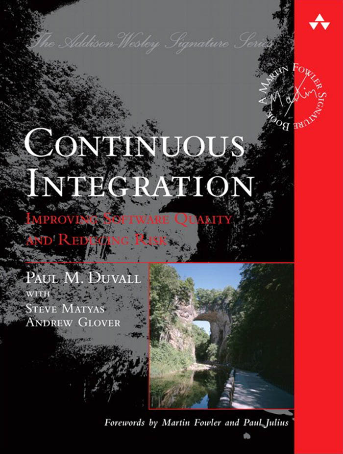
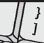
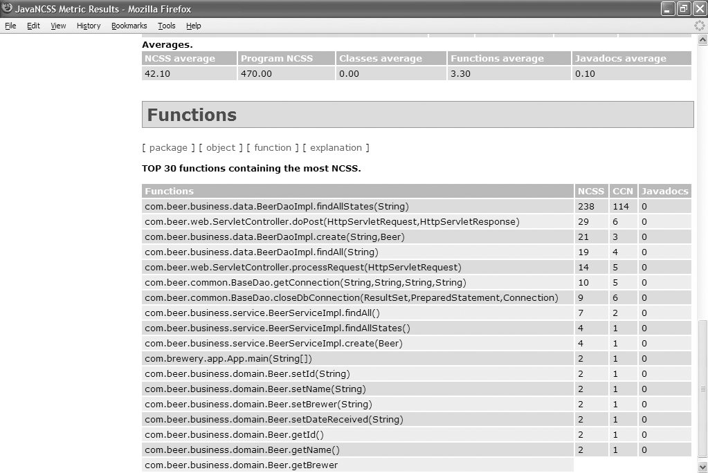
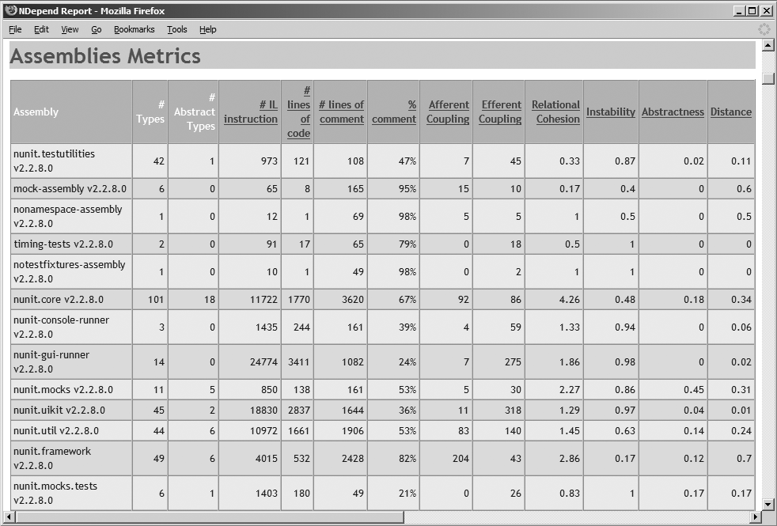
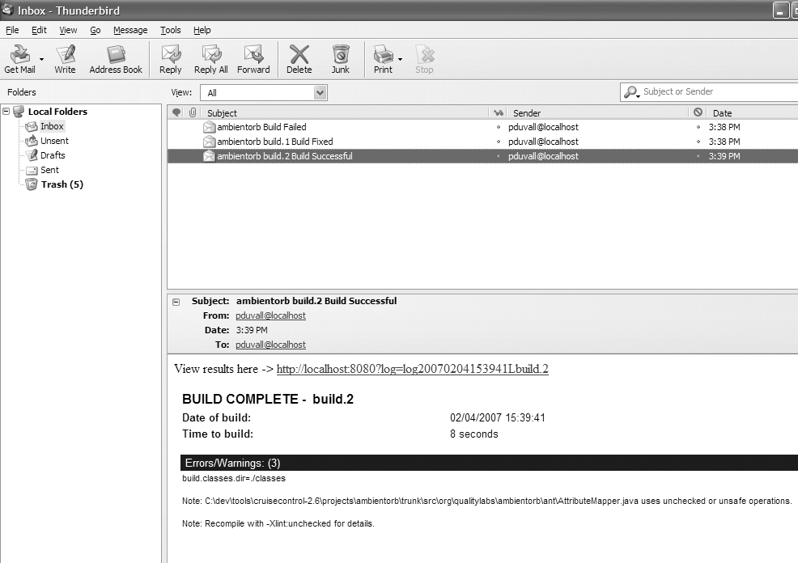
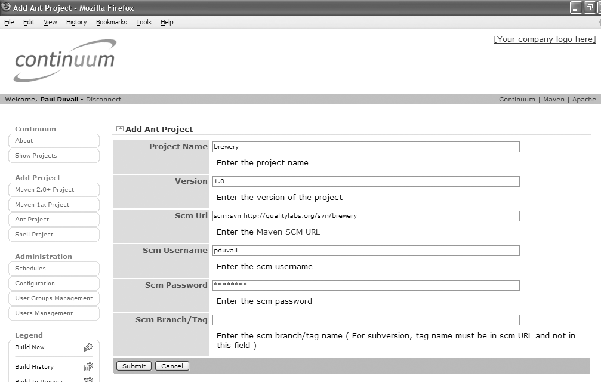
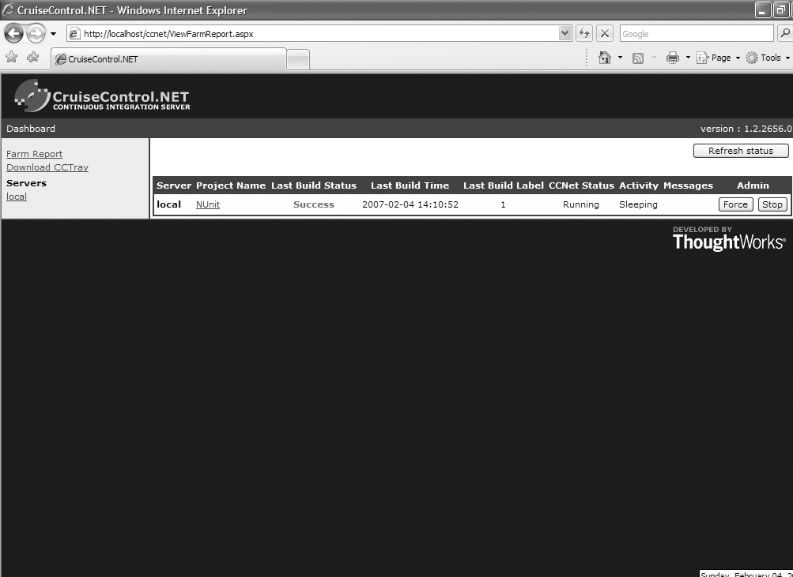
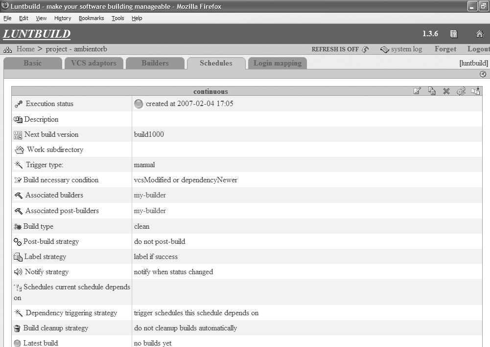

Paul M. Duvall
合著者
Steve Matyas 和 Andrew Glover
Upper Saddle River, NJ • Boston • Indianapolis • San Francisco New York • Toronto • Montreal • London • Munich • Paris • Madrid Capetown • Sydney • Tokyo • Singapore • Mexico City
制造商和销售商用于区分其产品的许多名称被声明为商标。在本书中出现这些名称时，如果出版商知晓商标声明，这些名称将以首字母大写或全部大写的形式印刷。
作者和出版商在准备本书时已尽谨慎，但不做任何明示或暗示的担保，并且不对错误或遗漏承担责任。对于因使用本书中包含的信息或程序而引起的或与之相关的附带或后续损害，不承担任何责任。
当批量购买或特别销售时，出版商对本书提供优惠折扣，其中可能包括电子版本和/或针对您的业务、培训目标、营销重点和品牌利益定制的封面和内容。有关更多信息，请联系：
美国企业和政府销售 (800) 382-3419 corpsales@pearsontechgroup.com
对于美国以外的销售，请联系：
国际销售 international@pearsoned.com
访问我们的网站：www.awprofessional.com
美国国会图书馆出版物编目数据
Duvall, Paul M. 持续集成：改善软件质量并降低风险 / Paul M. Duvall，与 Steve Matyas 和 Andrew Glover 合著。 p. cm. 包括参考书目和索引。 ISBN 978-0-321-33638-5 (平装：耐酸纸) 1. 计算机软件—质量控制。2. 计算机软件—测试。3. 计算机软件—可靠性。I. Matyas, Steve, 1979- II. Glover, Andrew, 1976- III. 标题。 QA76.76.Q35D89 2007 005—dc22 2007012001
版权所有 © 2007 Pearson Education, Inc.
保留所有权利。在美国印刷。本出版物受版权保护，未经出版商事先许可，禁止以任何形式或方式（电子、机械、影印、录制或其他方式）进行任何禁止的复制、存储在检索系统中或传输。有关许可的信息，请写信至：
Pearson Education, Inc. Rights and Contracts Department 75 Arlington Street, Suite 300 Boston, MA 02116 传真：(617) 848-7047
ISBN 13: 978-0-321-33638-5 ISBN 10: 0-321-33638-0
本书在美国使用再生纸在印第安纳州克劳福兹维尔的 RR Donnelley 印刷。首次印刷，2007年6月
我有幸拥有一个美好的家庭。
献给我的父母，Paul 和 Nona，以及我的
兄弟姐妹们，Sue、Joan、John、Mary、
Sally、Tim、Pauline 和 Evie。
—P.M.D.
Martin Fowler 序言 xiii
Paul Julius 序言 xv
前言 xix
关于作者 xxxi
关于贡献者 xxxiii
第一部分 CI 背景：原则和实践 1
第1章 入门 3
每次更改都构建软件 4
开发人员 6
版本控制仓库 7
CI 服务器 8
构建脚本 10
反馈机制 10
集成构建机器 12
CI 的特性 12
源代码编译 12
数据库集成 14
测试 15
检查 17
部署 18
文档和反馈 20
总结 20
问题 20
第2章 持续集成介绍 23
CI 的一天 25
CI 的价值是什么？ 29
降低风险 29
减少重复过程 30
生成可部署的软件 31
提高项目可见性 31
建立更大的产品信心 32
是什么阻止团队使用 CI？ 32
如何实现”持续”集成？ 33
项目应何时以及如何实施 CI？ 35
集成的演变 36
CI 如何补充其他开发实践？ 37
CI 需要多长时间来设置？ 38
CI 与你 39
频繁提交代码 39
不要提交有问题的代码 41
立即修复失败的构建 41
编写自动化开发人员测试 41
所有测试和检查必须通过 42
运行私有构建 42
避免获取有问题的代码 43
总结 44
问题 44
风险：缺乏可部署的软件 49
场景：“在我的机器上可以运行” 50
场景：与数据库同步 50
场景：缺失的点击 52
风险：缺陷发现较晚 53
场景：回归测试 53
场景：测试覆盖率 54
风险：缺乏项目可见性 55
场景：“你收到备忘录了吗？” 56
场景：无法可视化软件 56
风险：低质量的软件 57
场景：编码标准遵守 58
场景：架构遵守 59
场景：重复代码 60
总结 62
问题 62
自动化构建 67
执行单命令构建 69
将构建脚本与 IDE 分离 73
[集中管理软件资产 [[74]]]
[创建一致的目录结构 [[75]]]
[快速失败构建 [[76]]]
目录 [[ix]]
[为任何环境构建 [[77]]]
[构建类型和机制 [[78]]]
构建类型 [[78]]
构建机制 [[80]]
触发构建 [[81]]
[[使用专用的集成构建机器] [[81]]]
[使用CI服务器 [[85]]]
[运行手动集成构建 [[86]]]
[运行快速构建 [[87]]]
[收集构建指标] [[88]]
[分析构建指标] [[89]]
[选择并实施改进] [[89]]
[分阶段构建 [[92]]]
重新评估 [[96]]
[[这将如何为你工作？] [[96]]]
[总结 [[101]]]
[问题 [[102]]]
[[第二部分] [创建功能完善的CI系统] [105]]
[自动化数据库集成 [[110]]]
创建数据库 [[112]]
操作数据库 [[115]]
[创建数据库编排脚本] [[116]]
[使用本地数据库沙箱 [[117]]]
[使用版本控制仓库共享数据库资产 [[119]]]
[持续数据库集成 [[121]]]
[赋予开发人员修改数据库的能力 [[123]]]
[[团队共同专注于修复损坏的构建] [[124]]]
[[让DBA成为开发团队的一部分] [[124]]]
[数据库集成和集成按钮 [[125]]]
测试 [[125]]
检查 [[125]]
部署 [[126]]
反馈和文档 [[126]]
[总结 [[126]]]
[问题 [[128]]]
[自动化单元测试 [[132]]]
[自动化组件测试 [[134]]]
[x] [目录]
[自动化系统测试 [[136]]]
[自动化功能测试 [[137]]]
[[分类开发人员测试] [[138]]]
[[先运行更快的测试] [[141]]]
单元测试 [[141]]
组件测试 [[141]]
系统测试 [[143]]
[为缺陷编写测试 [[143]]]
[使组件测试可重复 [[148]]]
[[将测试用例限制为一个断言] [[156]]]
[总结 [[158]]]
[问题 [[159]]]
[[检查和测试有什么区别？] [[164]]]
[[应该多久运行一次检查器？] [[165]]]
[代码度量：历史回顾 [[166]]]
[降低代码复杂度 [[167]]]
[持续执行设计审查 [[170]]]
[通过代码审计维护组织标准 [[173]]]
[减少重复代码 [[176]]]
[使用PMD-CPD] [[177]]
[使用Simian] [[178]]
[评估代码覆盖率 [[180]]]
[持续评估代码质量 [[182]]]
覆盖率频率 [[183]]
[覆盖率和性能] [[184]]
[总结 [[185]]]
[问题 [[186]]]
[[随时随地发布可工作的软件] [[191]]]
[[标记仓库的资产] [[191]]]
[生成干净的环境 [[194]]]
[标记每个构建 [[195]]]
[运行所有测试 [[196]]]
[创建构建反馈报告 [[196]]]
[具备回滚发布的能力 [[199]]]
[总结 [[199]]]
[问题 [[200]]]
[所有正确的要素 [[205]]]
正确的信息 [[205]]
目录 [[xi]]
[正确的人] [[207]]
正确的时间 [[208]]
正确的方式 [[209]]
[使用持续反馈机制 [[209]]]
电子邮件 [[210]]
[短信] [[212]]
[氛围灯和X10设备] [[214]]
[Windows任务栏] [[217]]
[声音] [[218]]
宽屏显示器 [[220]]
[总结 [[222]]]
[问题 [[222]]]
[[结语] [CI的未来] [223]]
[[附录A] [CI资源] [[227]]]
[持续集成网站/文章 [[227]]]
[CI工具/产品资源 [[229]]]
[构建脚本资源 [[232]]]
[版本控制资源 [[233]]]
[数据库资源 [[234]]]
[测试资源 [[236]]]
[自动化检查资源 [[239]]]
[部署资源 [[241]]]
[反馈资源 [[241]]]
[文档资源 [[243]]]
[[附录B] [评估CI工具] [[245]]]
[评估工具时的考虑因素 [[247]]]
[功能性 [[248]]]
[[与您的环境的兼容性] [[253]]]
[可靠性 [[254]]]
[[寿命] [[254]]]
[可用性 [[255]]]
[自动化构建工具 [[255]]]
[构建调度工具 [[263]]]
[结论 [[272]]]
[[参考文献] [[273]]]
[[索引] [[275]]]
[[Martin Fowler作序] [*]]
在我软件行业早期的日子里，软件项目中最尴尬和紧张的时刻之一就是集成。单独工作的模块被组合在一起，而整体通常会以令人沮丧且难以发现的方式失败。然而在过去几年中，集成作为项目痛点已基本消失，减少到无关紧要的程度。
这种转变的本质是更频繁地集成的实践。曾经，每日构建(daily build)被认为是一个雄心勃勃的目标。我现在交流的大多数项目每天集成多次。奇怪的是，当你遇到一个痛苦的活动时，一个好的建议就是更频繁地做它。
持续集成(Continuous Integration)最有趣的事情之一是人们常常对其影响力感到惊讶。我们经常发现人们认为它只是边缘收益,但实际上它能为项目带来完全不同的感觉。由于问题能更快被发现,项目的可见性大大增强。因为从引入错误到发现错误之间的时间更短,所以错误更容易找到,你可以轻松查看发生了什么变化来帮助你找到问题源头。配合坚定的测试计划,这可以大幅减少bug。因此,开发人员花更少时间调试,更多时间添加功能,并且确信他们是在坚实的基础上构建。
当然,仅仅说应该更频繁地集成是不够的。在这个简单的口号背后是一系列原则和实践,它们能让持续集成成为现实。你可以在书籍和互联网上找到很多这方面的建议
[*Martin Fowler 是 ThoughtWorks 的系列编辑和首席科学家。]
(我很自豪自己也为这些内容做出了贡献),但你必须自己去挖掘。
所以我很高兴看到 Paul 将这些信息整理成一本连贯的书籍,为那些想要实践这一最佳实践的人提供手册。像任何简单的实践一样,细节中有很多魔鬼。在过去几年中,我们对这些细节以及如何处理它们学到了很多。本书收集了这些经验教训,为持续集成提供了坚实的基础,就像持续集成为软件开发提供坚实基础一样。
我一直希望有人能着手写这本书——越早越好。私下里,我总希望是我来写。但我很高兴 Paul、Steve 和 Andy 最终将所有内容整合成一本连贯、深思熟虑的著作。
我深入研究持续集成似乎已经很久了。2001年3月,我联合创立并开始担任 CruiseControl 开源项目的管理员。在我的日常工作中,我在 ThoughtWorks 做咨询,帮助客户使用 CI 原则和工具构建、构建和部署测试解决方案。
CruiseControl 邮件列表上的活动在2003年真正起飞。我有机会阅读数千种不同 CI 场景的描述。软件开发人员遇到的问题各不相同且复杂。开发人员投入所有这些工作的原因对我来说变得越来越清晰。CI 的优势——如快速反馈、快速部署和可重复的自动化测试——远远超过了复杂性。然而,在创建这些类型的环境时很容易偏离目标。当我们首次发布 CruiseControl 时,我永远不会猜到人们会以如此令人兴奋的方式使用 CI 来改进他们的软件开发流程。
2000年,我在一个大型 J2EE 应用程序开发项目中工作,使用规范中提供的所有功能。这个应用程序本身令人惊叹,但构建起来很困难。构建,我指的是编译、测试、归档和进行功能测试。Ant 仍处于起步阶段,尚未成为 Java 应用程序的事实标准。我们使用一系列精心编排的 shell 脚本来编译所有内容并运行单元测试。我们使用另一系列 shell 脚本将所有内容转换为可部署的归档文件。最后,我们通过一些手动步骤来部署 JAR 并运行功能测试套件。不用说,这个过程变得费力、乏味,而且充满错误。
于是我开始寻求创建一个只需按”一个按钮”就能重现的”构建”(这是 Martin Fowler 当时的热门话题之一)。Ant 解决了制作跨平台构建脚本的问题。我想要的剩余部分是能够处理繁琐步骤的东西:部署、功能测试和结果报告。当时,我调查了现有的解决方案,但无济于事。我从未在那个项目上完全按我想要的方式运行起来。应用程序成功完成开发并投入生产,但我知道事情可以做得更好。
在那个项目结束和下一个项目开始之间,我找到了答案。Martin Fowler 和 Matt Foemmel 刚刚发表了他们关于 CI 的开创性文章。幸运的是,我与一些正在努力将 Fowler/Foemmel 系统打造成可重用解决方案的 ThoughtWorkers 合作。至少可以说,我很兴奋!我知道这是对上一个项目遗留问题的答案。几周内,我们准备好了一切,并开始在几个现有项目上使用它。我甚至访问了一个愿意参与的 Beta 测试站点,在一个完整规模的客观企业中安装 CruiseControl 的前身。不久之后,我们开源了。对我来说,从此没有回头路。
作为 ThoughtWorks 的顾问,我遇到了一些最复杂的企业部署架构。我们的客户经常根据对行业文献所承诺优势的高层理解来寻找快速解决方案。与任何技术一样,关于转型企业有多容易存在相当多的误导信息。如果多年的咨询教会了我什么,那就是没有什么事情看起来那么容易。
我喜欢与客户讨论实际应用 CI 原则。我喜欢强调转变开发”节奏”(cadence)以真正利用这些优势的重要性。如果开发人员每月只提交一次代码,缺乏对自动化测试的关注,或者没有修复损坏构建的社会责任感,那么必须解决这些重大问题才能获得 CI 的全部好处。
这是否意味着IT经理应该忘记CI，直到这些实践发生转变？不。事实上，使用CI实践可以成为变革最快的推动力之一。我发现安装像CruiseControl这样的CI工具会促使软件团队从被动变为主动。这种变化不会一夜之间发生，你必须适当地设定期望值——包括相关IT经理的期望。通过坚持不懈和对基本原则的深入理解，即使是最复杂的环境也可以变得更容易理解、更容易测试，并更容易快速投入生产。
作者通过本书拉平了竞争环境。我发现这本书既全面又深远。本书对CI最重要方面的深入覆盖将帮助读者做出明智的决策。广泛的主题范围涵盖了当今主导CI领域的各种方法，并帮助读者权衡他们必须做出的取舍。最后，我很高兴看到CI社区中许多人努力实现的工作成为进一步创新的基础而被正式化。因此，我强烈推荐本书作为一个重要资源，通过使用一些CI魔法来理解企业应用程序呈现的复杂地形。
在我职业生涯的早期，我在一本杂志上看到一个整版广告，上面显示了一个类似Enter键的键盘按键，上面标有”Integrate”（集成）字样（见图P-1）。按键下方的文字写着：“如果真的这么简单就好了。”我不确定这个广告是为谁或为什么而做的，但它引起了我的共鸣。在考虑软件开发时，我想，这肯定永远不会实现，因为在我的项目中，我们在大多数项目里程碑结束时花费数天时间在”集成地狱”中，试图将无数软件组件拼凑在一起。但我喜欢这个概念，所以我剪下了这个广告并挂在墙上。对我来说，它代表了我作为一名高效软件开发人员的主要目标之一：自动化重复且容易出错的过程。此外，它体现了我的信念，即让软件集成成为项目中的”非事件”（正如Martin Fowler所说的）——一些自然而然发生的事情。持续集成(Continuous Integration，CI)可以帮助使集成成为项目中的非事件。
图P-1 集成！
考虑软件项目中一些更典型的开发过程：代码被编译，数据通过数据库定义和操作；进行测试，审查代码，最终部署软件。此外，团队几乎肯定需要相互沟通软件的状态。想象一下，如果你可以通过按一个按钮来执行这些过程。
本书演示了如何创建一个虚拟的集成按钮来自动化许多软件开发过程。更重要的是，我们描述了如何持续按下这个集成按钮以减少阻止你创建可部署应用程序的风险，例如缺陷的延迟发现和低质量代码。在创建CI系统时，许多这些过程都是自动化的，并且每次开发中的软件发生变化时它们都会运行。
集成软件的过程不是一个新问题。软件集成在一个人的项目中可能不是什么大问题，尤其是外部系统依赖很少的情况下，但随着项目复杂性的增加（即使只增加一个人），就更需要集成并确保软件组件一起工作——而且要尽早且频繁。等到项目结束时才集成会导致各种软件质量问题，这些问题代价高昂，往往会导致项目延期。CI以更快的速度和更小的增量来解决这些风险。
在他流行的”持续集成”文章[1]中，Martin Fowler将CI描述为：
……一种软件开发实践，团队成员频繁集成他们的工作，通常每个人每天至少集成一次——导致每天多次集成。每次集成都通过自动化构建（包括测试）进行验证，以尽快检测集成错误。许多团队发现这种方法大大减少了集成问题，并使团队能够更快地开发出有凝聚力的软件。
根据我的经验，这意味着：
• 所有开发人员在将代码提交到版本控制仓库之前，在自己的工作站上运行私有构建(private builds)[2]，以确保他们的更改不会破坏集成构建。
• 开发人员每天至少一次将代码提交到版本控制仓库。
• 集成构建在单独的构建机器上每天进行多次。
• 每次构建必须100%通过测试。
• 生成可以进行功能测试的产品（例如WAR、程序集、可执行文件等）。
• 修复损坏的构建是最高优先级的事项。
• 一些开发人员审查构建生成的报告，例如编码标准和依赖关系分析报告，以寻找改进的领域。
[1. 参见 www.martinfowler.com/articles/continuousIntegration.html]
[2. 译注：private builds指在开发人员本地环境进行的构建]
本书讨论 CI 的自动化方面,因为从自动化重复性和易出错的流程中可以获得许多好处;然而,正如 Fowler 所指出的,CI 是频繁集成工作的过程——这不一定非要是自动化流程才算数。我们清楚地认为,既然有许多优秀的工具支持 CI 作为自动化流程,使用 CI 服务器来自动化您的 CI 实践是一种有效的方法。尽管如此,手动的集成方法(使用自动化构建)可能对您的团队效果也很好。
[2. 私有(系统)构建和集成构建模式在 Stephen P. Berczuk 和 Brad Appleton 的《软件配置管理模式》一书中有所涉及。]
xxii [前言]
快速反馈
持续集成增加了您获得反馈的机会。通过它,您可以每天多次了解项目的状态。CI 可以用来缩短从引入缺陷到修复缺陷之间的时间,从而提高整体软件质量。
开发团队不应该因为他们的 CI 系统是自动化的,就认为自己不会出现集成问题。如果团队使用自动化工具只是为了编译源代码,情况就更不容乐观了;有些人将此称为”构建”,但这并不是真正的构建(见第 1 章)。有效的 CI 实践远不止一个工具那么简单。它包括我们在书中概述的实践,例如频繁提交到版本控制仓库、立即修复损坏的构建以及使用单独的集成构建机器。
CI 的实践实现了更快的反馈。当使用有效的 CI 实践时,您将能够每天多次了解正在开发的软件的整体健康状况。更重要的是,CI 与重构和测试驱动开发等实践配合得很好,因为这些实践都围绕着进行小改动的理念。CI 本质上提供了一个安全网,确保更改能够与软件的其余部分协同工作。在更高层面上,CI 增强了团队的集体信心,并减少了项目所需的人工活动量,因为它通常是一个免人工干预的流程,只要软件发生变化就会运行。
关于”持续”一词的说明
我们在本书中使用”持续”一词,但从技术上讲,这种用法并不准确。“持续”意味着某事启动一次后永不停止。这暗示该流程不断集成,但即使在最密集的 CI 环境中也不是这样。因此,我们在本书中描述的更像是”连续集成”。
[前言] xxiii
谁应该阅读本书?
根据我们的经验,将软件开发视为工作和将其视为职业的人之间存在明显差异。本书是为那些认真对待自己职业的人而写的,他们发现自己在项目中执行重复性流程(或者我们会帮助您意识到您这样做的频率有多高)。我们描述了 CI 的实践和好处,并为您提供应用这些实践的知识,以便您可以将时间和专业知识投入到更重要、更具挑战性的问题上。
本书涵盖了与 CI 相关的主要主题,包括如何使用持续反馈、测试、部署、检查和数据库集成来实现 CI。无论您在软件开发中扮演什么角色,都可以将 CI 融入到自己的软件开发流程中。如果您是一位希望变得越来越高效的软件专业人士——用更少的时间完成更多工作并获得更可靠的结果——您将从本书中获益良多。
开发人员
如果您发现自己宁愿为用户开发软件,而不是摆弄软件集成问题,本书将帮助您实现这一目标,而不会遇到您认为会涉及的那些”痛苦”。本书并不要求您花更多时间进行集成;它的目的是让软件集成的大部分工作变得不值一提,让您能够专注于做自己最喜欢的事情:开发软件。本书中的许多实践和示例展示了如何实现有效的 CI 系统。
构建/配置/发布管理
如果您的工作是将可运行的软件交付出去,您会发现本书特别有趣,因为我们展示了通过在每次将更改应用到版本控制仓库时运行流程,您可以生成连贯、可运行的软件。你们中的许多人在管理构建的同时还担任项目中的其他角色,例如开发。CI 将为您做一些”思考”工作,而不是等到开发生命周期结束时,它每天会多次创建可部署和可测试的软件。
xxiv [前言]
测试人员
CI 为软件开发提供了一种快速反馈方法,几乎消除了即使在应用”修复”后仍会出现反复缺陷的传统痛点。使用 CI 的项目中的测试人员通常会对自己的角色获得更高的满意度和兴趣,因为可供测试的软件更频繁地可用,且范围更小。在开发生命周期中有了 CI 系统,您可以一路测试,而不是典型的忙闲不均场景,即测试人员要么测试到深夜,要么根本不测试。
管理者
如果您希望对团队持续、反复交付可运行软件的能力有更高水平的信心,本书可以对您产生重大影响。您可以更有效地管理时间、成本和质量范围,因为您是基于可运行的软件和实际反馈及指标做出决策,而不仅仅是项目进度表上的任务项。
本书的组织结构
本书分为两个部分。第一部分是持续集成（CI）的介绍，从基础开始审视这个概念及其实践。第一部分面向那些不熟悉CI核心实践的读者。然而，我们认为如果没有第二部分，CI的实践是不完整的。第二部分自然地将核心概念扩展到CI系统执行的其他有效流程，如测试、检查、部署和反馈。
第一部分：CI背景——原则与实践
第1章《入门》通过一个高层次的示例，让你直接了解如何使用CI服务器持续构建软件。
第二部分：创建功能完整的CI系统
第5章《持续数据库集成》深入到更高级的概念，涉及作为每次集成构建的一部分重建数据库和应用测试数据的过程。
结语探讨了CI的未来可能性。
附录
附录A《CI资源》包括与CI相关的URL、工具和论文列表。
附录B《评估CI工具》评估了市场上不同的CI服务器和相关工具，讨论了它们对本书中描述的实践的适用性，识别了每种工具的优缺点，并解释了如何使用它们一些更有趣的特性。
其他特性
本书包含帮助你更好地学习和应用我们在文本中描述的内容的特性。
• 实践——我们在本书中涵盖了40多个与CI相关的实践。许多章节小标题就是实践。大多数章节开头的图示说明了所涵盖的实践，让你可以快速浏览感兴趣的领域。例如，使用专用的集成构建机器和频繁提交代码都是本书中讨论的实践示例。
• 示例——我们通过使用不同语言和平台的各种示例来演示如何应用这些实践。
• 问题——每章最后都有一系列问题，帮助你评估CI实践在项目中的应用。
• 网站——本书的配套网站www.integratebutton.com提供书籍更新、代码示例和其他材料。
你将学到什么
通过阅读本书，你将学习使你能够每天多次创建内聚的、可工作的软件的概念和实践。我们专注于首先介绍实践，然后是这些实践的应用，并尽可能包含示例作为演示。这些示例使用不同的开发平台，如Java、Microsoft .NET，甚至一些Ruby。CruiseControl（Java和.NET版本）是贯穿全书使用的主要CI服务器；然而，我们在配套网站(www.integratebutton.com)和附录B中使用其他服务器和工具创建了类似的示例。
当你阅读本书时，你将获得以下见解：
• 如何通过实施CI在开发生命周期的每个步骤中生成可部署的软件。
• CI如何减少时间——从引入缺陷到检测到该缺陷之间的时间，从而降低修复成本。
• 如何通过频繁构建软件而不是等到开发后期来将质量构建到软件中。
本书未涵盖的内容
本书不涵盖构成CI系统的每个工具——构建调度、编程环境、版本控制等。它专注于CI实践的实施，以开发有效的CI系统。首先讨论CI实践；如果演示的特定工具不再使用或不满足你的特定需求，只需使用另一个工具应用该实践即可达到相同的效果。
覆盖CI系统使用的每种类型的测试、反馈机制、自动化检查器和部署类型也是不可能的，也没有用处。我们希望通过专注于关键实践的范围，使用数据库集成、测试、检查和反馈的技术和工具示例来实现更大的目标，这些示例可能会激发与学习它们的项目和团队一样不同的应用。正如本书中所提到的，本书的配套网站www.integratebutton.com包含使用本书中可能未涵盖的其他工具和语言的示例。
作者
本书有三位合著者和一位贡献者。我撰写了大部分章节。Steve Matyas 为第 4、5、7、8 章和附录 A 做出了贡献，并构建了书中的一些示例。Andy Glover 撰写了第 6、7、8 章，提供了示例，并在书中其他部分做出了贡献。Eric Tavela 撰写了附录 B。因此，当句子使用第一人称代词时，应该能够清楚地知道是谁在说什么。
当我得知我们的书将成为著名的 Martin Fowler 签名系列的一部分时，我非常兴奋。我知道这意味着我可以为书的封面选择一座桥。我和我的合著者都是在华盛顿特区地区长大的稀有品种。对于那些不是来自该地区的人来说，这是一个非常流动的地区。更具体地说，我们来自北弗吉尼亚，我们认为选择弗吉尼亚的自然桥(Natural Bridge)作为封面是一个恰当的致敬。直到 2007 年初——在我为书籍封面选择了它之后——我才第一次参观了这座桥。它有着非常有趣的历史，我发现令人难以置信的是，它是一座汽车每天都会通过的功能性桥梁。(当然，我不得不开车在上面通过几次。)我想，在阅读本书之后，您会将持续集成(CI)作为下一个软件开发项目的自然组成部分。
我无法告诉你我读过多少次书中的致谢，作者们写道他们”不可能独自完成”以及其他类似的话。我总是对自己说：“他们只是在虚假地谦虚。”嗯，我大错特错了。这本书是一项巨大的工程，我感谢此处列出的人们。
我要感谢我的出版商 Addison-Wesley。特别是，我要向我的执行编辑 Chris Guzikowski 表示感谢，感谢他在这个详尽的过程中与我合作。他的经验、洞察力和鼓励都非常宝贵。此外，我的开发编辑 Chris Zahn 在多个版本和编辑周期中提供了可靠的建议。我还要感谢 Karen Gettman、Michelle Housley、Jessica D’Amico、Julie Nahil、Rebecca Greenberg，最后但绝对不是最不重要的，我的第一位执行编辑 Mary O’Brien。
Rich Mills 为本书托管了 CVS 服务器，并在头脑风暴会议中提供了出色的想法。我还要感谢我的导师和朋友 Rob Daly，感谢他在 2002 年让我进入专业写作领域，并在整个写作过程中提供了异常详细的审阅。John Steven 在帮助我开始这本书的写作过程中发挥了重要作用。
我要向我的合著者、编辑和特约作者表示感谢。我和 Steve Matyas 经历了许多不眠之夜才创作出你今天正在阅读的内容。Andy Glover 是我们的关键作家，为项目提供了他丰富的开发者测试经验。
我们的特约编辑 Lisa Porter 不知疲倦地梳理每一个主要修订版，提供编辑和建议，帮助提高了本书的质量。感谢 Eric Tavela 撰写了 CI 工具附录，感谢 Levent Gurses 在附录 B 中提供了他使用 Maven 2 的经验。
我们有一群折衷的个人技术审阅者，他们在整个项目中提供了出色的反馈。他们包括 Tom Copeland、Rob Daly、Sally Duvall、Casper Hornstrup、Joe Hunt、Erin Jackson、Joe Konior、Rich Mills、Leslie Power、David Sisk、Carl Tallis、Eric Tavela、Dan Taylor 和 Sajit Vasudevan。
我还要感谢 Charles Murray 和 Cristalle Belonia 的帮助，以及来自 Urbancode 的 Maciej Zawadzki 和 Eric Minick 的帮助。
我很感激每天在 Stelligent 激励我的许多优秀人士的支持，包括 Burke Cox、Mandy Owens、David Wood 和 Ron Wright。多年来还有许多其他人激励着我的工作，包括 Rich Campbell、David Fado、Mike Fraser、Brent Gendleman、Jon Hughes、Jeff Hwang、Sherry Hwang、Sandi Kyle、Brian Lyons、Susan Mason、Brian Messer、Sandy Miller、John Newman、Marcus Owen、Chris Painter、Paulette Rogers、Mark Simonik、Joe Stusnick 和 Mike Trail。
我也感谢 Addison-Wesley 技术审查团队的详尽反馈，包括 Scott Ambler、Brad Appleton、Jon Eaves、Martin Fowler、Paul Holser、Paul Julius、Kirk Knoernschild、Mike Melia、Julian Simpson、Andy Trigg、Bas Vodde、Michael Ward 和 Jason Yip。
我要感谢 CITCON Chicago 2006 的与会者与我们所有人分享他们在 CI 和测试方面的经验。特别是，我要感谢 Paul Julius 和 Jeffrey Frederick 组织会议，以及参加活动的所有其他人。
最后，我要感谢 Jenn 的坚定支持，以及在制作这本书的起起落落中一直陪伴着我。
Paul M. Duvall Fairfax, Virginia 2007 年 3 月
Paul M. Duvall 是 Stelligent Incorporated 的首席技术官，这是一家咨询公司和思想领袖，致力于帮助开发团队通过优化软件生产可靠而快速地生产更好的软件。他几乎在软件开发项目的每个角色中工作过，从开发者和测试者到架构师和项目经理。Paul 曾为各个行业的客户提供咨询，包括金融、住房、政府、医疗保健和大型独立软件供应商。他是许多领先软件会议的特邀演讲者。他为 IBM developerWorks 撰写了一系列名为 Automation for the People 的文章，是 NFJS 2007 Anthology(Pragmatic Programmers, 2007)的合著者，也是 UML 2 Toolkit(Wiley, 2003)的特约作者。他是临床研究数据管理系统的共同发明人。
方法正在申请专利。他积极地在 www.testearly.com 和 www.integratebutton.com 上撰写博客。
Stephen M. Matyas III 是 AutomateIT 的副总裁，这是 5AM Solutions, Inc. 的一个服务分支，帮助组织通过自动化改进软件开发。Steve 在应用软件工程方面有着丰富的背景，包括商业和政府客户的经验。Steve 担任过多种角色，从业务分析师和项目经理到开发人员、设计师和架构师。他是《UML 2 Toolkit》(Wiley, 2003) 的合著者。他是许多迭代和增量方法论的实践者，包括敏捷(Agile)和统一过程(Rational Unified Process, RUP)。他的大部分专业实践经验都在 Java/J2EE 定制软件开发和服务行业，专攻方法论、软件质量和流程改进。他拥有弗吉尼亚理工学院暨州立大学(Virginia Polytechnic Institute and State University, Virginia Tech)的计算机科学学士学位。
Andrew Glover 是 Stelligent Incorporated 的总裁，这是一家咨询公司和思想领袖，帮助开发团队通过优化软件生产来可靠、快速地生产更好的软件。Andy 是北美各种会议的常客演讲者，也是 No Fluff Just Stuff 软件研讨会小组的演讲者；此外，他是《Groovy in Action》(Manning, 2007)、《Java Testing Patterns》(Wiley, 2004) 和《NFJS 2006 Anthology》(Pragmatic Programmers, 2006) 的合著者。他还是多个在线出版物的作者，包括 IBM 的 developerWorks 和 O’Reilly 的 ONJava、ONLamp 和 Dev2Dev 门户网站。他积极地在 www.thediscoblog.com 和 www.testearly.com 上撰写关于软件质量的博客。
Lisa Porter 是一个为美国政府提供网络安全解决方案的咨询团队的高级技术撰稿人。Lisa 在本书制作之前提供了技术编辑工作。她的早年时光是在支持一个拥有多个应用程序的大型软件开发项目中度过的，在那里她对需求确定和项目成熟度/能力活动产生了深刻的认识。她还在外语翻译和建筑/工程行业应用了技术写作的原则。Lisa 自 2002 年以来一直在编辑书籍和在线出版物。
Eric Tavela 是 5AM Solutions, Inc. 的首席架构师，这是一家专注于应用软件工程最佳实践为生命科学研究社区服务的软件开发公司。Eric 的主要背景是设计和实现 Java/J2EE 应用程序，以及在面向对象软件开发和 UML 建模方面指导开发人员。

首先，掌握基础。 —拉里·伯德(美国职业篮球运动员)
javaranch.com 的创始人 Kathy Sierra 在她的博客中说：“说’每天吃一个苹果’和真正吃苹果之间有很大的区别。”[1] 在软件项目中遵循基本实践也是如此。你很少会听到有人说”测试是无效的”或”代码审查是浪费时间”或频繁的软件构建是一个糟糕的实践。但这些看似基本的实践一定比说起来更难实践，因为项目中这些实践的频率低得可怜。
如果你想运行频繁的集成构建，使其在你的项目中成为一个非事件—包括编译、重建数据库、执行自动化测试和检查、部署软件以及接收反馈—持续集成(Continuous Integration, CI) 可以帮助你。在本章中，我们将向你展示 CI 系统的常见功能，这些功能建立在这些基本软件实践之上。
[1. 来自 http://headrush.typepad.com/.]
理解 CI 的基础非常简单，你很快就能将这些软件开发的基本实践集成到你的构建中。
在阅读书籍时，我喜欢先看一个例子，然后再学习例子背后的”为什么”，因为我发现例子为学习”为什么”提供了一个上下文。我们基于典型实现描述了一个 CI 场景。你会发现有多种方式来实现 CI 系统，但这应该能让你开始理解典型系统的各个部分。
构建不仅仅是编译(或其动态语言的变体)。构建可能包括编译、测试、检查和部署等。构建充当将源代码组合在一起并验证软件作为一个内聚单元工作的过程。
一个持续集成场景从开发者向代码库提交源代码开始。在典型项目中，担任多种项目角色的人员可能会提交触发持续集成周期的更改：开发者更改源代码，数据库管理员（DBA）更改表定义，构建和部署团队更改配置文件，接口团队更改DTD/XSD规范，等等。
在书中编写”实践”示例的风险在于它很快就会过时，尤其是像持续集成这样的动态主题。为了弥补本书出版后可能发生的变化，我们将更新本书的配套网站www.integratebutton.com，提供的示例不仅包括CruiseControl和Ant，还包括许多其他持续集成服务器和工具。
持续集成场景中的步骤通常是这样的。
首先，开发者向版本控制仓库提交代码。同时，集成构建机器上的持续集成服务器正在轮询此仓库以检查更改（例如，每隔几分钟）。
提交发生后不久，持续集成服务器检测到版本控制仓库中发生了更改，因此持续集成服务器从仓库中检索代码的最新副本，然后执行构建脚本，集成软件。
持续集成服务器通过将构建结果通过电子邮件发送给指定项目成员来生成反馈。
持续集成服务器继续轮询版本控制仓库中的更改。
图1-1说明了持续集成系统的这些部分。
以下章节更详细地描述了图1-1中标识的工具和参与者。

一旦开发者执行了与分配任务相关的所有修改，她会运行私有构建（该构建会集成团队其他成员的更改），然后将她的更改提交到版本控制仓库。此步骤可能在任何时间发生，不会影响持续集成流程的后续步骤。除非有更改应用到版本控制仓库，否则不会发生集成构建。
清单1-1演示了通过从命令行调用Ant构建脚本来执行私有构建的示例。请注意，此脚本从Subversion版本控制仓库中检索最新更新。
一旦你将构建自动化，并且可以通过单个命令运行它，你就可以执行持续集成了。通过在每次向项目的版本控制系统提交更改时运行此自动化构建，团队可以回答以下问题：
知道软件在最新更改后成功”构建”是有价值的，但知道软件被正确构建是无价的，因为软件缺陷无疑会在某个时候悄悄进入代码库。你想要持续构建的原因是获得快速反馈，以便你可以在整个开发生命周期中发现和修复问题。
清单1-1：使用Ant运行私有构建
> ant integrate
Buildfile: build.xml
clean:
svn-update:
all:
compile-src:
compile-tests:
integrate-database:
run-tests:
run-inspections:
package:
deploy:
BUILD SUCCESSFUL
Total time: 3 minutes 13 seconds运行成功的私有构建后，你可以将新文件和修改的文件签入仓库。大多数版本控制系统提供简单的命令来执行这些过程，如清单1-2所示，使用Subversion。
清单1-2：向Subversion仓库提交更改
> svn commit --m "Added CRUD capabilities to DAO"
Sending src\BeerDaoImpl.java
Transmitting file data .
Committed revision 52.你也可以使用集成开发环境（IDE）执行构建脚本并将更改提交到仓库。只需确保你可以从命令行执行这两项活动，这样你就不会与IDE或版本控制系统有紧密耦合的依赖关系。
简单来说，你必须使用版本控制仓库才能执行持续集成。事实上，即使你不使用持续集成，版本控制仓库也应该是项目的标准配置。版本控制仓库的目的是使用受控访问仓库来管理对源代码和其他软件资产（如文档）的更改。这为你提供了一个”单一源点”，以便所有源代码都可以从一个主要位置获得。版本控制仓库允许你回到过去并获取不同版本的源代码和其他文件。
你需要针对版本控制仓库的主线（mainline）运行 CI（例如，CVS 和 Subversion 等系统中的 Head/Trunk）。你也可以使用不同类型的版本控制系统。本书的大多数示例使用 Subversion，因为它具有丰富的功能集，而且可以免费获得。其他软件配置管理（SCM）/版本控制工具包括 CVS、Perforce、PVCS、ClearCase、MKS 和 Visual SourceSafe。要学习软件配置管理的有效技术，请参阅 Stephen Berczuk 和 Brad Appleton 所著的《软件配置管理模式》（Software Configuration Management Patterns）。
CI 服务器会在每次提交更改到版本控制仓库时运行集成构建。通常，你需要配置 CI 服务器每隔几分钟检查一次版本控制仓库的变更。CI 服务器会检索源文件并运行一个或多个构建脚本。CI 服务器也可以硬性调度为按固定频率构建，例如每小时一次（但请注意，这并不是 CI）。此外，CI 服务器通常提供一个便捷的仪表板来发布构建结果。虽然建议使用，但 CI 服务器并不是执行持续集成的必要条件。你可以编写自己的自定义脚本。而且，你可以在每次将更改应用到仓库时手动运行集成构建。使用 CI 服务器可以减少你原本需要编写的自定义脚本数量。许多 CI 服务器都是免费和开源的。清单 1-3 展示了使用 CruiseControl config.xml 轮询 Subversion 仓库查找变更的示例。
<cruisecontrol>
<project name="myproject">
<modificationset quietperiod="30">
<svn localWorkingCopy="projects/${project.name}"
repositoryLocation="http://svn.example.com/repos/myproject"
username="bfranklin"
password="G0Fly@Kite"/>
</modificationset>
<schedule interval="300">
<ant anthome="apache-ant-1.7.0" buildfile="bld-${project.name}.xml"/>
</schedule>
<publishers>
<artifactspublisher dest="artifacts/${project.name}"/>
<execute command="artifacts/${project.name}"/>
</publishers>
</project>
</cruisecontrol>在清单 1-3 中，schedule 任务的 interval
属性指示 CruiseControl 检查 Subversion 仓库变更的频率（在此示例中为 300
秒）。如果 CruiseControl 发现任何修改，它会执行一个委托构建（使用清单
1-3 中的 buildfile
属性调用）。委托构建（未显示）从仓库检索最新的源代码并执行项目构建文件，例如清单
1-3 中的文件。其他 CI 服务器可能使用基于 Web
的配置或其他管理界面。CruiseControl 附带一个 Web
应用程序，以便你可以查看最新构建的结果和构建报告（例如测试和检查报告）。图
1-2 展示了一个项目的 CruiseControl 构建结果示例。
图 1-2 CruiseControl 仪表板显示最新构建状态
构建脚本是用于编译、测试、检查和部署软件的单个脚本或一组脚本。你可以在不实施 CI 系统的情况下使用构建脚本。Ant、NAnt、make、MSBuild 和 Rake 是可以自动化软件构建周期的构建工具示例，但它们本身不提供 CI。有些人可能使用 IDE 来构建软件；然而，由于 CI 是一个”免手动”的过程，仅仅使用基于 IDE 的构建不足以实现 CI。需要明确的是，只要你也可以在不使用 IDE 的情况下运行相同的构建，使用 IDE 运行构建是合适的。清单 1-4 展示了一个 Ant 脚本框架的示例，该脚本运行通常作为私有构建一部分执行的各种流程。
<project name="myproject" default="build" basedir=".">
<target name="init"/>
<target name="compile" depends="init"/>
<target name="test" depends="compile"/>
<target name="inspect" depends="test"/>
<target name="deploy" depends="inspect"/>
<target name="build" depends="deploy"/>
</project>CI 的关键目的之一是提供集成构建的反馈，因为你希望尽快知道最新构建是否存在问题。通过及时接收这些信息，你可以快速修复问题。图 1-3 展示了电子邮件作为反馈机制。我们在第 9 章中演示了更多反馈设备。其他反馈机制包括短信服务（SMS）和真正简单聚合（RSS）。
图 1-3 CI 服务器发送的电子邮件消息
清单 1-5 包含使用 CruiseControl CI 服务器向项目成员发送电子邮件的示例。
<cruisecontrol>
...
<publishers>
<email css="./webapps/cruisecontrol/css/cruisecontrol.css"
mailhost="localhost"
xsldir="./webapps/cruisecontrol/xsl"
returnaddress="pduvall@localhost"
buildresultsurl="http://localhost:8080"
mailport="225"
username="pduvall"
password="password"
reportsuccess="always"
spamwhilebroken="true">
<always address="team@example.com"/>
</email>
</publishers>
...
</cruisecontrol>集成构建机器是一台独立的机器，其唯一职责是集成软件。集成构建机器托管 CI 服务器，CI 服务器轮询版本控制仓库。
现在我们有了一个可以构建的示例，我们可以深入了解 CI 的特性。CI 只需要四个必需的特性：
• 连接到版本控制仓库 • 构建脚本 • 某种反馈机制（例如电子邮件） • 集成源代码变更的流程（手动或 CI 服务器）
这种”精简”的行为是有效CI系统的关键。一旦自动化构建在版本控制系统的每次变更时运行，您就可以向CI系统添加其他功能。
通过执行自动化和持续的数据库集成、测试、检查、部署和反馈，您的CI系统可以降低项目中的常见风险，从而提高信心并改善沟通。某些功能依赖于其他功能；例如，自动化测试依赖于源代码编译。
这个可重复的过程可以帮助在整个开发生命周期中降低风险。接下来将详细描述这些子流程。
持续源代码编译是CI系统最基本和最常见的功能之一。事实上，它非常常见，几乎已经成为CI的代名词。编译涉及从人类可读的源代码创建可执行代码。不过，CI远不止源代码编译；随着动态语言（Python、PHP、Ruby等）使用的普及，编译在这些环境中略有不同。虽然您不是使用动态语言生成二进制文件，但许多动态语言提供了执行严格检查的能力，在这些语言的上下文中，您可以将其视为编译。尽管存在这种细微差别，动态语言环境仍然受益于CI构建期间执行的其他活动。
集成按钮（见图1-4）是完全功能化和自动化集成构建的可视化表示——使构建成为一个非事件。包含许多流程以确保您的软件按预期工作。您可以编译、使用测试数据重建数据库、运行测试、检查、部署和提供反馈。通过自动化您的构建，您可以按下按钮运行许多流程。


有些人认为源代码集成和数据库集成是完全独立的过程——总是由不同的团队执行。这是很遗憾的,因为数据库(如果你的项目使用数据库的话)是软件应用程序不可分割的一部分。通过使用CI系统,你可以确保数据库的集成来自单一源头:你的版本控制仓库。
图1-5展示了如何在CI系统的构建过程中实现持续数据库集成。我们以与系统中任何其他源代码相同的方式处理数据库源代码——数据定义语言(Data Definition Language,DDL)脚本、数据操作语言(Data Manipulation Language,DML)脚本、存储过程定义、分区等等。例如,当项目成员(例如开发人员或DBA)修改数据库脚本并将其提交到版本控制系统时,集成源代码的同一个构建脚本将在集成构建过程中重建数据库和数据。
清单1-6演示了如何使用Ant的sql任务删除和创建MySQL数据库。重建数据库和测试数据还有更多工作要做。本例为演示目的硬编码了许多值。
清单1-6 MySQL和Ant
url="jdbc:mysql://localhost:3306/"
userid="root"
password="sa"
classpathref="db.lib.path"
delimiter=";"我们将在第5章中演示数据库集成的示例、方法和优势。
图1-5 数据库集成设计
开发人员生成提交变更
开发人员提交变更轮询构建脚本
开发人员编译源代码, 提交变更 CI服务器集成数据库, Subversion 版本控制集成构建运行测试, 仓库机器运行检查, 部署软件
开发人员数据库脚本
删除/创建应用过程/ 数据库/表触发器
插入测试数据
许多人认为没有自动化、持续测试的 CI 不算是真正的 CI。我们完全同意这一点。没有自动化测试，开发人员或其他项目利益相关者很难对软件变更有信心。大多数使用 CI 系统的项目开发人员都会使用单元测试工具，如 JUnit、NUnit 或其他 xUnit 框架来运行测试。此外，你可以从 CI 系统运行不同类别的测试来加快构建速度。这些类别可能包括单元测试、组件测试、系统测试、负载/性能测试、安全测试等。第 6 章详细讨论了其中许多测试。图 1-6 展示了一个 JUnit 报告示例，CI 服务器如 CruiseControl 可能会在集成构建过程中生成这样的报告。
代码清单 1-7 演示了一个运行一批 JUnit 测试并使用 Ant 任务生成图 1-6 中报告的示例。
代码清单 1-7 Ant 和 JUnit
自动化代码检查（例如静态和动态分析）可以通过强制执行规则来提高软件质量。例如，一个项目可能有这样一条规则：任何类的非注释代码不得超过 300 行。你可以使用 CI 系统自动针对代码库运行这些规则。我们在第 7 章讨论并演示了各种工具和技术。
图 1-7 所示的软件检查报告示例是使用 Checkstyle 生成的，它可以检查 Java 代码。使用这样的报告可以实现对编码标准和质量指标的持续监控。
代码清单 1-8 展示了一个使用 Checkstyle 静态代码分析工具与 Ant 的示例。这个示例生成了图 1-7 中的报告。
代码清单 1-8 使用 Ant 的 Checkstyle 示例
许多流程涵盖了所谓的部署。事实上，本节讨论的其他大多数流程都是部署流程的一部分。持续部署使你能够在任何时间点交付可工作的、可部署的软件。这意味着 CI 系统的一个关键目的是生成包含最新代码变更的打包软件制品(artifacts)，并使其可用于测试环境。
除其他事项外，必须从版本控制仓库签出源文件，必须执行构建，所有测试和检查必须成功执行，必须标记发布版本，并且必须准备部署文件。
CI 甚至可以自动将文件部署或安装到适当的环境中，如图 1-8 所示。此外，部署应该包括自动回滚部署中应用的所有更改的能力。请注意，你可能在开发环境（例如，如图 1-8 所示的 Jetty）到集成和测试环境（Tomcat）使用略有不同的操作环境。无论如何，相同的自动化构建会以略有不同的参数在这些环境中执行。我们在第 8 章讨论这些策略。
代码清单 1-9 演示了使用一个名为 Cargo 的工具，它提供了 Ant 和 Web 容器之间的接口。在这个例子中，我们正在部署到 Tomcat 服务器。Cargo 为市场上许多流行的 Web 容器提供接口。
代码清单 1-9 使用 Ant 和 Cargo 部署到 Tomcat
[wait="false" id="${tomcat-refid}">]
许多开发人员坚信文档应该存在于源代码中，实际上，清晰简洁的代码配合精心选择的类、变量和方法名称（例如）就是最好的文档。CI 系统可以提供文档的好处，而无需承受一些麻烦。你可以使用 Maven、Javadoc 或 NDoc 等工具来生成文档。此外，还有一些工具可以生成类图和其他信息，所有这些都基于版本控制仓库中提交的源代码。使用 CI 系统获取源代码和项目状态的近实时文档，你会发现显著的好处。你可以选择定期而不是持续地生成文档工件。
优秀 CI 系统的一个关键特性是速度。CI 系统的本质是向开发人员和项目干系人提供及时的反馈。为了追求完整性，很容易在 CI 系统中加载过多内容，导致完成一个周期需要不合理的时间。因此，必须在 CI 流程的广度和深度与提供快速结果的需求之间取得平衡。这在使用持续测试时尤为重要。我们将在第 4 章和第 6 章讨论创建快速构建的技术。
本章为你简要介绍了持续集成的特性。它还展示了如何将其他流程整合到 CI 系统中，例如全面的数据库集成、测试、检查、部署和反馈。本书的其余部分将探讨使用 CI 开发软件相关的每个流程的细节。
如何知道你是否正确地实施了 CI？这些问题可以帮助你确定项目中缺少什么。

频繁提交代码 不要提交损坏的代码 立即修复损坏的构建


编写自动化开发人员测试 所有测试和检查必须通过 运行私有构建

避免获取损坏的代码

假设是一切错误之母。
—韦瑟恩的暂缓判断定律
在我职业生涯的早期,我了解到开发优秀软件归根结底是始终如一地执行基本实践，无论使用什么特定技术。根据我的经验，软件开发中最重要的问题之一就是假设。如果你假设某个方法会传入正确的参数值，这个方法就会失败。假设开发人员遵循编码和设计标准，软件就会难以维护。假设配置文件


没有改变，你就会花费宝贵的开发时间毫无必要地追查根本不存在的问题。当我们在软件开发中做出假设时，我们会浪费时间并增加风险。
持续集成可以通过在版本控制系统中发生变化时重新构建软件来帮助减少项目中的假设。
我们可能认为最新、最先进的技术将成为解决所有问题的”银弹”，但事实并非如此。在一家公司，我最初的职责之一是通过示例将良好的软件开发实践引入公司。随着时间的推移，我们能够将许多广为接受的开发优秀软件的实践应用到项目中。在使用不同方法论的许多不同项目中工作后，我发现，一般来说，迭代项目——在我的案例中使用统一软件开发过程（RUP）和极限编程（XP）——效果最好，因为风险会一直得到缓解。开发软件需要为变化做好计划，持续观察结果，并根据结果进行增量式的方向调整。这就是 CI 的运作方式。CI 是一种策略的体现，它使我们作为软件开发人员能够在代码中进行更改，同时知道如果我们破坏了软件，我们会收到即时反馈。这种即时反馈使我们有时间更正方向并更快地适应变化。
CI关注的是基础工作。它可能不是软件开发中最引人注目的活动，但在当今复杂的项目中，集成软件至关重要。软件的用户很少会对我说：“哇，我真的很喜欢你在上一个版本中集成软件的方式。”既然这种情况不会发生，那么在幕后做这些努力似乎就不值得了。然而，任何使用CI这样的实践开发过软件的人，都会因为一个一致且可重复的构建过程而受益——当版本控制仓库发生变更时，该过程就会自动启动。
有些人将CI视为简单地将软件组件组合在一起的过程。我们将CI视为软件开发的核心，因为它通过在每次变更时运行构建来确保软件的健康。确定软件的质量可以简单到检查最新的集成构建。
在软件开发的非核心基础活动上花费一些时间，意味着有更多时间花在那些使我们的工作有趣和充满乐趣的具有挑战性、发人深省的活动上。如果我们不关注基础工作，比如定义开发环境和构建软件，我们将被迫在以后执行低级任务，通常是在最不方便的时候（例如，在软件即将投入生产之前）。这也是错误发生的时候。保持构建”处于绿色状态”所需的纪律性，使你不必担心一切是否仍在正常工作。这就像锻炼身体——是的，它需要自律；是的，它可能是痛苦的工作——但它让你保持良好状态，以便在关键时刻参加重要比赛。
本章试图回答你在决定在项目中实施CI实践时可能遇到的问题。它概述了CI的优点和缺点，并介绍了CI如何补充其他软件开发实践。CI不是一个可以交给项目的”构建管理员”然后就遗忘的实践。它影响软件开发团队中的每个人，因此我们从所有团队成员必须实践的角度来讨论CI。
使用CI的一天工作是什么样的？让我们来看看Tim的经历。
当Tim打开公司套房的门时，他看到宽屏显示器显示着他项目的实时信息。显示器显示最后一次集成构建在几分钟前在CI服务器上成功运行。它显示了最新质量指标的列表，包括编码/设计标准遵守情况、代码重复等。Tim是一个Java项目的15名开发人员之一，该项目为一家在线啤酒厂创建管理软件。参见图2-1，了解Tim一天中某些活动的可视化。
Tim开始他的一天，重构了一个被报告有太多重复代码的子系统，该报告基于CI服务器的最新报告。在将他的更改提交到Subversion之前，他运行了一个私有构建，该构建针对最新源代码进行编译并运行单元测试。在他的机器上运行此构建后，他将更改提交到Subversion。与此同时，CruiseControl CI服务器正在轮询Subversion仓库。几分钟后，CI服务器发现了Tim提交的更改并运行集成构建。此集成构建运行自动检查工具以验证所有代码都符合编码标准。Tim收到一封关于编码标准违规的电子邮件，快速进行了更改，并将源代码重新提交到Subversion。CI服务器运行另一个构建，这次成功了。通过查看CI服务器生成的Web报告，Tim发现他最近的代码重构成功减少了子系统中的重复代码量。

当天晚些时候，项目中的另一位开发人员Lisa跑进Tim的办公室。
Lisa：我认为你今天早些时候所做的更改破坏了最后一次构建！
Tim：嗯…但是，我运行了测试。
Lisa：哦，我没有时间编写测试。
Tim：你是否遵循我们为项目建立的代码覆盖率指标？
由于这次讨论，他们决定如果代码覆盖率低于85%，则使集成构建失败。此外，Lisa为她发现的缺陷编写了测试，并修复了她与Tim交谈后发现的问题。集成构建继续保持”绿色状态”。
自动化(automated)——一个”无需人工干预”的过程。一旦完全自动化的过程开始，就不需要用户干预。系统管理员称之为”无头”过程。
构建(build)——一组用于生成、测试、检查和部署软件的活动。
持续(continuous)——从技术上讲，持续意味着一旦开始就永不停止的事情。这意味着构建一直在运行；然而，事实并非如此。在CI的上下文中，持续更像是连续不断，在CI服务器的情况下，一个进程持续运行，轮询版本控制仓库的更改。如果CI服务器发现更改，它将执行构建脚本。
持续集成(Continuous Integration)——“一种软件开发实践
团队成员频繁地集成他们的工作，通常每个人每天至少集成一次——从而导致每天多次集成。每次集成都通过自动化构建(包括测试)进行验证，以尽快检测集成错误。许多团队发现，这种方法可以显著减少集成问题，并使团队能够更快速地开发出有凝聚力的软件。[1]
28 第2章 持续集成介绍 ❑
development environment(开发环境)——编写软件的环境。这可以包括IDE、构建脚本、工具、第三方库、服务器和配置文件。
inspection(检查)——对源代码/字节码进行内部质量属性的分析。在本书中，我们将自动化方面(静态和运行时分析)称为软件检查。
integration(集成)——将独立的源代码工件组合在一起以确定它们如何作为整体工作的行为。
integration build(集成构建)——集成构建是将软件组件(程序和文件)组合成软件系统的行为。这种构建在大型项目中包括多个组件，或者在小型项目中仅包括低级编译的源文件。在日常工作中，我们倾向于交替使用术语构建和集成构建，但出于本书的目的，我们做出区分，即集成构建是由单独的集成构建机器执行的。
private (system) build(私有(系统)构建)——在将更改提交到版本控制仓库之前，在本地工作站上运行构建，以减少最近更改破坏集成构建的可能性。[2]
quality(质量)[3]——计算机在线词典(Free On-Line Dictionary of Computing)将质量定义为”某物的本质和区别性属性…“以及”优等级别”。术语质量经常被过度使用，一些人似乎认为它基于感知。在本书中，我们采取的立场是质量是一个可测量的规范，就像其他任何规范一样。这意味着您可以识别质量的特定指标，例如可维护性(maintainability)、可扩展性(extensibility)、安全性、性能和可读性(readability)。
release build(发布构建)——为向用户发布软件做准备。它可能在迭代结束或某个其他里程碑时发生，必须包括任何验收测试，并且可能包括更广泛的性能和负载测试。
基于Stephen Berczuk和Brad Appleton的软件配置管理模式。
在 www.thefreedictionary.com.
CI的价值是什么? [29]
risk(风险)——发生问题的可能性。已实现的风险被称为问题。我们专注于具有最高发生可能性的高优先级风险(对我们的利益和目标的损害)。
testing(测试)——验证软件按设计工作的一般过程。此外，我们将开发者测试定义为多个类别，例如单元测试、组件测试和系统测试，所有这些都验证对象、包、模块和软件系统按设计工作。还有许多其他类型的测试，例如功能测试和负载测试，但从CI的角度来看，至少开发者编写的所有单元测试都作为构建的一部分执行(尽管构建可能分阶段进行，首先运行快速测试，然后是较慢的测试)。
从高层次来看，CI的价值在于:
• 降低风险
• 减少重复的手动过程
• 随时随地生成可部署的软件
• 提高项目可见性
• 让开发团队对软件产品建立更大的信心
让我们回顾一下这些原则的含义及其提供的价值。
通过每天集成多次，您可以降低项目的风险。这样做有助于检测缺陷、测量软件健康状况并减少假设。
• 更快地检测和修复缺陷——因为CI每天多次集成并运行测试和检查，所以在引入缺陷时(即，当代码签入版本控制仓库时)发现缺陷的可能性更大，而不是在后期测试期间。
30 第2章 持续集成介绍 ❑
• 软件健康状况是可测量的——通过将持续测试和检查纳入自动化集成过程，可以随时间跟踪软件产品的健康属性，例如复杂性。
• 减少假设——通过使用相同的过程和脚本在干净的环境中持续重建和测试软件，您可以减少假设(例如，您是否考虑了第三方库或环境变量)。
CI提供了一个安全网，以降低将缺陷引入代码库的风险。以下是CI帮助缓解的一些风险。我们将在下一章讨论这些风险和其他风险。
• 缺乏有凝聚力的可部署软件
• 缺陷发现较晚
• 低质量软件
• 缺乏项目可见性
减少重复过程可以节省时间、成本和精力。这听起来很简单，不是吗？这些重复过程可能发生在所有项目活动中，包括代码编译、数据库集成、测试、检查、部署和反馈。通过自动化持续集成(CI)，您能够更好地确保以下所有内容。
• 流程每次都以相同的方式运行。
• 遵循有序的流程。例如，您可以在构建脚本中先运行检查（静态分析），然后再运行测试。
• 每当版本控制仓库中发生提交时，流程都会运行。
这有助于
• 减少重复流程上的人力投入，让人们腾出时间去做更需要思考、更高价值的工作
• 通过对测试和数据库集成等重要流程使用自动化机制，克服（来自其他团队成员的）实施改进的阻力
CI 能够让您在任何时间点发布可部署的软件。从外部视角来看，这是 CI 最明显的好处。我们可以无休止地讨论改进的软件质量和降低的风险，但可部署的软件是对客户或用户等”外部人员”来说最有形的资产。这一点的重要性怎么强调都不为过。使用 CI，您可以对源代码进行小的更改，并定期将这些更改与代码库的其余部分集成。如果出现任何问题，项目成员会立即收到通知，并且修复会立即应用到软件中。不采用这种实践的项目可能会等到交付前才集成和测试软件。这可能会延迟发布、延迟或阻止修复某些缺陷、在您匆忙完成时导致新的缺陷，并最终可能导致项目终止。
CI 提供了注意趋势和做出有效决策的能力，并帮助提供创新改进的勇气。当没有真实或最新的数据来支持决策时，项目就会受到影响，因此每个人都只能提供他们的最佳猜测。通常，项目成员手动收集这些信息，使得这项工作既繁重又不及时。结果往往是信息从未被收集。CI 具有以下积极效果。
• 有效决策——CI 系统可以提供关于最近构建状态和质量指标的即时信息。一些 CI 系统还可以显示缺陷率和功能完成状态。
• 注意趋势——由于使用 CI 系统时集成频繁发生，因此能够注意到构建成功或失败、整体质量以及其他相关项目信息的趋势。
总体而言，有效应用 CI 实践可以为生产软件产品提供更大的信心。每次构建时，您的团队都知道会针对软件运行测试来验证行为，项目编码和设计标准得到满足，结果是一个功能上可测试的产品。
没有频繁的集成，一些团队可能会感到受限，因为他们不知道代码更改的影响。由于 CI 系统可以在出现问题时通知您，开发人员和其他团队成员在进行更改时会更有信心。因为 CI 鼓励从单一源点构建所有软件资产，所以对其准确性有更大的信心。
如果 CI 有这么多好处，那么是什么阻止开发团队在其项目中持续集成软件呢？通常，这是多种担忧的结合。
• 维护 CI 系统增加的开销——这通常是一种误导性的看法，因为无论您是否使用 CI，集成、测试、检查和部署的需求都是存在的。管理一个强大的 CI 系统比管理手动流程要好。管理 CI 系统，否则就会被手动流程控制。具有讽刺意味的是，复杂的多平台项目是最需要 CI 的项目，但这些项目往往会抵制这种实践，认为它是”太多额外的工作”。
• 太多变化——有些人可能觉得需要改变太多流程才能为他们的遗留项目实现 CI。渐进式的 CI 方法最有效；首先以较低的频率（例如，每日构建）添加构建和测试，然后随着每个人对结果感到舒适而增加频率。
• 太多失败的构建——通常，这发生在开发人员在将代码提交到版本控制仓库之前没有执行私有构建时。可能是开发人员忘记签入文件或有一些测试失败。使用 CI 时，由于更改频繁，快速响应至关重要。
• 额外的硬件/软件成本——要有效使用 CI，应该获取一台单独的集成机器，与在开发生命周期后期发现问题的更昂贵成本相比，这是微不足道的开支。
• 开发人员应该执行这些活动——有时管理层觉得 CI 只是在重复开发人员无论如何都应该执行的活动。是的，开发人员应该执行其中一些活动，但他们需要在单独的环境中更有效、更可靠地执行这些活动。利用自动化工具可以提高这些活动的效率和频率。此外，它确保这些活动在干净的环境中执行，这将减少假设并导致更好的决策。
大多数开发组织的自动化程度往往令人惊讶。开发人员花费大部分时间为用户自动化流程，但并不总是看到自动化自己开发流程的方法。有时团队认为他们的自动化已经足够，因为他们编写了一些脚本来消除开发过程中的某些步骤。以下是一个典型场景。
Joan（开发人员）：……我已经自动化了。我写了一些批处理脚本来删除和重建数据库表。
Sue（技术负责人）：很好。你把它应用到CVS仓库了吗？
Joan：没有。
Sue：你把它作为构建脚本的一部分了吗？
Joan：没有。
Sue：所以，如果它还不是CI系统的一部分，那么它还没有真正自动化……对吧？
CI不仅仅是将一些脚本收集在一起并一直运行它们的过程。在前面的场景中，Joan编写这些自动化脚本很好，但为了让它们真正为最终产品增加价值，必须将它们添加到版本控制仓库并使其成为构建过程的有效组成部分。图2-2说明了使流程持续化的步骤。
这些步骤可以逐一应用于你在项目中进行的几乎每一项活动。
识别（Identify）—识别需要自动化的流程。该流程可能涉及编译、测试、检查、部署、数据库集成等领域。
构建（Build）—创建构建脚本使自动化可重复和一致。构建脚本可以使用NAnt（用于.NET平台）、Ant（用于Java平台）和Rake（用于Ruby）等工具构建，这只是其中几个例子。
共享（Share）—通过使用版本控制系统（如Subversion），你可以让其他人使用这些脚本/程序。现在价值在整个项目中得到一致传播。
使其持续（Continuous）—使用CI服务器确保自动化流程在每次更改时运行。如果你的团队有纪律，你也可以选择在每次更改应用到版本控制系统时手动运行构建。
这里有一个首字母缩略词可以帮助你记住并传达这一点：“I Build So Consistently”（我如此一致地构建）—代表Identify（识别）、Build（构建）、Share（共享）和Continuous（持续）。
在你的CI系统中追求增量增长。这很容易实现，团队在添加每个新项目时会更有动力，并且你可以根据目前有效的内容更好地规划下一步需要什么。

图2-2 实现CI—“I Build So Consistently”
我与许多组织合作实施CI，在几次场合中我听到这样的回答：“是的，我们做CI。”当然，我想，“太好了！”然后问几个问题。你的测试有多少代码覆盖率？运行构建需要多长时间？你的平均代码复杂度是多少？你有多少代码重复？你在版本控制仓库中标记构建了吗？你在哪里存储部署的软件？
我发现他们一直在做的更像是”持续编译”，他们设置了一个像CruiseControl这样的工具来轮询他们的版本控制仓库（例如CVS）以检测更改。当它检测到更改时，它从CVS检索源代码，编译代码，如果出现问题就发送电子邮件。在单独的机器上自动编译软件系统总比什么都不做要好，但这样做无法提供完整的CI系统的所有好处。
到目前为止。通常，试图立即将所有内容都放入CI系统可能是一个糟糕的举动，就像在编写软件时一次重构大量代码不是最佳方法一样。首先让它运行起来，让开发人员使用它，然后根据项目风险按需添加其他自动化流程。
最好在项目早期实施CI。虽然可能，但在项目后期实施CI更困难，因为人们会承受压力并更有可能抵制变化。如果你确实在项目后期实施CI，从小处着手并在时间允许的情况下逐步添加更多内容尤其重要。
设置CI系统有不同的方法。虽然你最终希望在系统每次更改时运行构建，但你可以从每天运行一次构建开始，以便在组织中实践。记住：CI不仅仅是技术实施；它也是组织和文化实施。人们经常抵制变化，对组织来说最好的方法可能是逐步将这些自动化机制添加到流程中。
起初，构建可以只编译源代码并打包二进制文件，而不执行自动回归测试。如果开发人员不熟悉自动化测试工具，这在最初可能是有效的。一旦这到位并且开发人员学会了测试工具，你就可以更接近CI的好处：在每次更改时运行这些测试（和检查）。
CI 是软件开发中最新的、最先进的”炫酷”方法吗？并非如此。CI 只是软件集成演进过程中的一次进步。当软件程序只包含几个小文件时，将它们集成到系统中并不是什么大问题。执行夜间构建(nightly builds)的实践多年来一直被描述为最佳实践。类似的实践在其他书籍和文章中也有讨论。在《微软的秘密》一书中，Michael A. Cusumano 和 Richard W. Selby 讨论了微软的每日构建实践。Steve McConnell 在《软件项目生存指南》中讨论了”每日构建和冒烟测试”作为软件开发项目的一部分的实践。
在《面向对象解决方案：管理面向对象项目》一书中,Grady Booch 写道：“面向对象开发的宏观过程是’持续集成’的过程……在固定的时间间隔内，’持续集成’过程产生可执行的发布版本，每个版本的功能都在增长……正是通过这些里程碑，管理层可以衡量进度和质量，从而预测、识别并持续主动地应对风险。”随着 XP 和其他敏捷方法论的出现，以及 CI 推荐实践的提出，人们开始注意到不仅仅是每日构建，而是”持续”构建的概念。
CI 实践持续演进。你会在几乎每本 XP 书籍中找到这个实践。通常，当人们讨论 CI 实践时，他们会引用 Martin Fowler 的开创性文章”持续集成”。
随着硬件和软件资源的不断增长，你会发现更多的流程将成为 CI 的一部分。
CI 实践补充了其他软件开发实践，如开发者测试、遵循编码标准、重构和小版本发布。无论你使用的是 RUP、XP、RUP 与 XP 结合、SCRUM、Crystal 还是任何其他方法论，这都无关紧要。以下列表说明了 CI 实践如何配合并改进这些实践。
• 开发者测试——编写测试的开发者通常使用某种基于 xUnit 的框架，如 JUnit 或 NUnit。这些测试可以从构建脚本中自动执行。由于 CI 实践提倡在对软件进行任何更改时运行构建，并且自动化测试是这些构建的一部分，CI 使得在对软件应用更改时可以对整个代码库运行自动化回归测试。
• 编码标准遵循——编码标准是开发者在项目中必须遵守的一套指南。在许多项目中，确保遵循主要是通过代码审查执行的手动过程。CI 可以运行构建脚本，通过运行一套自动化静态分析工具来报告对编码标准的遵循情况，这些工具会在应用更改时检查源代码是否符合既定标准。
• 重构——正如 Fowler 所说，重构是”以不改变代码外部行为但改进其内部结构的方式改变软件系统的过程。“除了其他好处外，这使得代码更容易维护。CI 可以通过在每次构建时运行检查工具来识别潜在问题区域，从而协助重构。
• 小版本发布——这种实践允许测试人员和用户根据需要尽可能频繁地获得可用的软件进行使用和审查。CI 与这种实践非常契合，因为软件集成每天发生多次，几乎在任何时候都可以获得一个发布版本。一旦 CI 系统就位，就可以用最少的努力生成一个发布版本。
• 集体所有权——任何开发者都可以在软件系统的任何部分工作。这可以防止”知识孤岛”，即只有一个人了解系统特定区域的情况。CI 实践可以通过确保遵循编码标准和持续运行回归测试来帮助实现集体所有权。
为新项目实现一个基本的 CI 系统以及简单的构建脚本可能需要几个小时来设置和配置（如果你没有任何现有的构建脚本，可能需要更长时间）。随着你对 CI 系统知识的扩展，它会随着检查工具的添加、更复杂的部署、更彻底的测试以及许多其他流程的增加而增长。这些额外的功能往往是一次添加一点。
对于已经在进行中的项目，设置 CI 系统可能需要几天、几周甚至几个月。这也取决于是否有专门的人员在项目上工作。通常，当迁移到持续的、自动化的、无人值守的系统时（例如使用 CI 服务器时），你必须完成许多任务。在某些情况下，你可能是从批处理或 shell 脚本迁移到构建脚本工具（如 Ant）或管理项目的所有二进制依赖项。在其他情况下，你可能以前使用 IDE 进行”集成”和部署。无论哪种方式，完全采用 CI 的路线图可能会长得多。
为了使持续集成(CI)在项目中有效工作，开发人员必须改变他们典型的日常软件开发习惯。开发人员必须更频繁地提交代码，优先修复损坏的构建，编写通过率100%的自动化构建测试，并且不从版本控制仓库获取或提交损坏的代码。
我们推荐的实践需要一些自律，但能提供本章所述的诸多益处。最理想的情况是大多数项目成员都认同，他们在持续集成实践上投入的时间和精力能获得指数级的回报。
我们发现有七个实践对在项目中运行持续集成的个人和团队效果很好。
• 频繁提交代码
• 不要提交损坏的代码
• 立即修复损坏的构建
• 编写自动化开发测试
• 所有测试和检查必须通过
• 运行私有构建
• 避免获取损坏的代码
以下章节将更详细地介绍每个实践。
持续集成的核心原则之一是尽早且频繁地集成。开发人员必须频繁提交代码才能实现持续集成的益处。
等待一天或更长时间才将代码提交到版本控制仓库会使集成变得耗时，并可能阻止开发人员使用最新的更改。尝试以下一种或两种技术来更频繁地提交代码。
• 进行小的更改—尽量不要一次更改太多组件。相反，选择一个小任务，编写测试和源代码，运行测试，然后将代码提交到版本控制仓库。
• 每完成一个任务后提交—假设任务/工作项已被分解为可以在几个小时内完成，一些开发团队要求开发人员在完成每个任务时提交代码。
尽量避免让每个人每天在同一时间提交。你会发现由于更改之间的冲突，通常会有更多的构建错误需要管理。这在一天结束时尤其麻烦，因为人们准备离开。你等待与他人集成的时间越长，集成就会变得越困难。
一位朋友管理着一个25人的开发项目，他想采用许多持续集成实践，但在让开发人员频繁提交代码方面遇到了挑战。我发现更改不频繁提交的主要原因是项目文化。有时开发人员不想提交代码，直到它”完美”为止。这通常是因为他们的更改影响了太多组件。频繁地将代码提交到版本控制仓库是实施持续集成的唯一有效方法，这意味着所有开发人员都需要通过抓取更小的代码块并将任务分解为更小的工作项来接受这种开发实践。
项目中一个危险的假设是每个人都知道不要将无法工作的代码提交到版本控制仓库。缓解这一风险的终极方法是拥有一个结构良好的构建脚本，能够以可重复的方式编译和测试代码。让团队接受的开发实践成为在将代码提交到版本控制仓库之前始终运行私有构建(它与集成构建过程非常相似)。有关提交代码前的额外建议，请参阅后面的”运行私有构建”部分。
损坏的构建是任何阻止构建报告成功的情况。这可能是编译错误、测试或检查失败、数据库问题或部署失败。在持续集成环境中运行时，这些问题必须立即修复；幸运的是，在持续集成环境中，每个错误都是逐步发现的，因此可能非常小。一些项目对破坏构建有惩罚措施，例如往罐子里扔钱或将最后一个破坏构建的开发人员的照片放在公司的大屏幕显示器上(开玩笑的；希望没有人这样做)。项目文化应该传达修复损坏的构建是项目的首要任务。这样，不仅是某些人，而是每个团队成员都可以回到他们正在做的事情上。
构建应该是完全自动化的。为了为持续集成系统运行测试，测试必须是自动化的。在xUnit框架(如NUnit或JUnit)中编写测试将提供以自动化方式运行这些测试的能力。第6章提供了编写自动化测试的详细信息。
在持续集成环境中，项目的100%自动化测试必须通过才能使构建通过(这是技术标准，而不是期望所有工作人员或所有工作都应该完美)。自动化测试与编译一样重要。每个人都认可无法编译的代码将无法工作；因此，有测试错误的代码也无法工作。接受未通过测试的代码可能导致软件质量降低。
不道德的开发人员可能会简单地注释掉失败的测试。当然，这违背了目的。覆盖率工具有助于精确定位没有相应测试的源代码。你可以将代码覆盖率工具作为集成构建的一部分运行。
同样的原则也适用于运行自动化软件检查工具。使用一套通用的编码和设计标准规则集，所有代码都必须通过。可以添加更高级的检查，这些检查不会导致构建失败，但会识别出代码中应该调查的区域。
为了防止构建失败，开发人员应该在完成单元测试后，在本地工作站IDE上模拟集成构建。这个构建允许你将自己的新工作软件与所有其他开发人员的工作软件集成，从版本控制仓库获取更改并成功地在本地与最近的更改一起构建。这样，每个开发人员提交的代码都对整体有贡献，代码在集成构建服务器上失败的可能性更小。
我发现有两个衡量CI有效使用的指标：提交次数和构建状态。每个开发人员（或结对）每天应该至少向仓库提交一次，提交次数通常反映了更改的规模（更多的提交通常意味着更小的更改——这是好事）。你的构建状态应该在一天中的大部分时间保持”绿色”（通过）；为团队设定这个值。我们都有时会遇到”红色”构建状态，但重要的是要尽快将其改回绿色。永远不要让你的团队习惯于在红色状态下等待，直到这个或那个其他项目任务完成。为了其他标准而愿意将状态保持在红色，会削弱CI的大部分优势。
当构建失败时，不要从版本控制仓库中检出最新代码。否则，你必须花时间为已知导致构建失败的错误开发变通方案，才能编译和测试你的代码。最终，这是团队的责任，但导致构建失败的开发人员应该已经在修复他们的代码并将其提交回版本控制仓库。有时开发人员可能没有看到关于构建失败的电子邮件。这就是被动反馈机制（如灯光或声音）对于在同一地点工作的开发人员很有用的时候。我们认为所有开发人员了解版本控制仓库中代码的状态至关重要。有关持续反馈机制的更多信息，请参见第9章。避免检出的另一种方法（但不是首选）是使用版本控制系统回滚自最近一次提交以来的任何更改。
现在你有了与他人讨论CI的弹药。本章介绍了CI的一些基础知识，讨论了如何实现持续过程，并指出了将在后续章节中详细探讨的所有其他领域。表2-1总结了使用CI时要遵循的七个实践。下一章将深入探讨CI可以帮助缓解的软件风险，以提高质量。
表2-1 本章讨论的CI实践
| 实践 | 描述 |
|---|---|
| 频繁提交代码 | 每天至少一次将代码提交到版本控制仓库 |
| 不要提交损坏的代码 | 不要提交无法与其他代码编译或测试失败的代码 |
| 立即修复失败的构建 | 尽管这是团队的责任，但最近提交代码的开发人员必须参与修复失败的构建 |
| 编写自动化开发者测试 | 使用自动化开发者测试验证你的软件是否工作。在自动化构建中运行这些测试，并经常通过CI运行它们 |
| 所有测试和检查必须通过 | 不是90%或95%的测试，而是所有测试必须在向版本控制仓库提交代码之前通过 |
| 运行私有构建 | 为了防止集成失败，通过从仓库获取最新更改并在本地运行完整的集成构建（称为私有系统构建）来获取其他开发人员的更改 |
| 避免获取损坏的代码 | 如果构建失败了，从仓库获取代码会浪费时间。等待更改或帮助开发人员修复构建失败，然后再获取最新代码 |
实践CI不仅仅是安装和配置一些工具。你的项目中有多少以下项目是你一直在执行的？有多少其他CI实践可以提高你的开发能力？
[[使用CI降低风险]]
质量意味着在无人关注时仍然把事情做对。 —亨利·福特
项目中总会出现问题。通过有效地实践CI，你可以在每一步都发现问题所在，而不是等到开发周期的后期。CI帮助你在风险发生时识别和缓解它们，使得基于具体证据评估和报告项目健康状况变得更容易。我们实现了多少软件？答案：检查最新构建。我们有多少测试覆盖率？答案：检查最新构建。谁提交了最新代码？答案：检查最新构建。
在本章中，我们将介绍CI可以缓解的风险，例如缺陷的延迟发现、项目可见性不足、软件质量低下，以及无法创建可部署的软件。
大多数团队开始时都有良好的意图，但有些团队却被项目中的问题所淹没。这些问题是未能管理风险的结果。 正如我在本书前面提到的，我们很少听到开发团队说”我们认为测试和代码审查（结对编程或其他方式）是不好的实践。“然而，当受到进度压力影响时，这些通常是团队首先会跳过的实践。本章重点介绍你可以使用CI的不同方面来降低的软件风险。通过使用CI，你可以建立一个”质量安全网”并更快地交付软件。当你在每次更改时按下”集成按钮”，你就为尽早和频繁地降低风险奠定了基础，如图3-1所示。

如果你能降低某些软件风险，就能提高软件质量。在描述本章的风险时，我们使用以下模板：
• 软件风险的介绍和描述
• 基于我们经验的场景
• 使用CI某个方面来缓解风险的解决方案
在任何项目中，都有许多风险需要管理。我们关注的是可以通过使用CI来降低的关键风险。当然，CI不能直接帮助解决从客户那里获取需求、理解客户的行业、资金或资源管理等业务挑战，但通过使用CI，你可以在软件开发过程中更快地发现问题。
通过在每次更改时构建软件，CI可以让时间站在你这边。有了CI，你可以更早地专注于项目中更大、更有趣的问题。因为CI是一个综合实践，本章涵盖的风险跨越了许多软件开发实践。


• 缺乏可部署的软件
• 缺陷发现过晚
• 缺乏项目可见性
• 软件质量低
你可能会说:“哦,这些风险我都听说过。对我来说这并不新鲜。”然而,你可能意识到某个风险,但不一定会去缓解它。有更高效和更有成效的方法来识别和应对风险,使它们不再是项目中的关注焦点。像大多数实践一样,归根结底在于有效的实施。在后面的章节中,我们将使用集成按钮(Integrate button)的模型,向你展示识别和降低这些风险的有效方法。
我曾参与过一个项目,我们大约每月在一台单独的机器上构建软件。当我们最终构建软件时,已经太接近交付截止日期了,大多数团队成员不得不工作到深夜来完成另一个奇迹。在这种”集成地狱”(integration hell)期间,我们发现接口无法工作,缺少配置文件,有多个组件提供类似的功能,并且在合并最新构建中的许多更改时遇到困难。这有时会导致我们错过项目的关键里程碑。
在另一个项目中,软件集成构建是由IDE启动的手动过程。平均而言,我们每周手动集成一次软件。在某些情况下,配置管理(CM)分析师用来构建软件的某些脚本并未存储在版本控制仓库中。缺乏自动化增加了运行构建的开销。因为我们没有在单独机器上的干净环境中执行构建,所以我们无法确信是否正确构建了软件。所有这些带来了三方面的影响:
• 对我们能否构建软件几乎没有信心
• 在内部(即测试团队)或外部(即客户)交付软件之前需要漫长的集成阶段,在此期间什么都做不了
• 无法生成和重现可测试的构建
场景：“在我的机器上可以运行”
项目团队无法创建可工作、可部署的软件可能有很多原因：从测试失败到将错误的文件应用到版本控制仓库，都可能导致构建失败。以下是这样一个场景。
John（技术主管）：我们在测试服务器上的最新构建遇到了问题。
Adam（开发人员）：奇怪，我在自己的机器上构建时还能正常工作。让我看看……是的，仍然可以工作。
John：哦，我看到问题了。你没有将新文件提交到Subversion仓库中。
解决方案
我们怎么强调都不为过：必须消除IDE与构建过程之间的紧密耦合。使用单独的机器专门用于集成软件。确保构建软件所需的所有内容都包含在版本控制仓库中。最后，创建一个CI系统。使用CI服务器（如CruiseControl）以及自动化构建工具（如Ant、NAnt或Rake）。CruiseControl监视版本控制仓库的变化，当检测到仓库变化时运行项目构建脚本。你可以增强此CI系统的功能，包括让构建运行测试、执行检查以及在开发和测试环境中部署软件；这样你就始终拥有可工作的软件。
场景：与数据库同步
如果在开发期间无法快速重建数据库，你将发现难以进行更改。这通常是由于数据库团队和开发团队之间的分离——每个团队专注于自己的职责，两者之间几乎没有协作。如果团队没有集成，产品如何能够集成？在这样的场景中，例如，数据库管理员可能没有将大部分数据库脚本提交到版本控制仓库。然后可能会出现以下类型的风险。
• 害怕对数据库或源代码进行更改或重构
• 难以使用不同的测试数据集填充数据库
• 难以维护开发和测试环境（例如，开发、集成、QA和测试）
这对开发产生负面影响，因为数据库跟不上开发团队的进度，反之亦然。软件和数据库开发人员可能都在运行不同版本的数据库。项目成员无法从单一来源点（版本控制仓库）获取最新的数据库。以下对话说明了这个问题。
Lauren（开发人员）：我在使用构建1345测试数据库v1.2.1.b1时遇到很多问题。
Pauline（数据库设计师）：哦不，对于构建1345，你应该使用v1.2.1.b2，但我还需要先对它进行一些更改。
Lauren：我刚刚白费了四个小时。
Pauline：嗯，你应该先跟我确认一下。
解决方案
这个解决方案对某些项目来说需要进行根本性改变；它概述了一种方法，其中数据库不是与开发分离的独立实体。
• 将所有数据库工件放入你的版本控制仓库。这意味着重建数据库架构和数据所需的所有内容：数据库创建脚本、数据操作脚本、存储过程、触发器以及任何其他数据库资产。
• 通过构建脚本重建数据库和数据，方法是删除并重建你的数据库和表。接下来，应用存储过程和触发器，最后插入测试数据。
• 测试（和检查）你的数据库。通常，你将使用组件测试来测试数据库和数据。在某些情况下，你需要编写特定于数据库的测试。
我们在第5章会更深入地讨论这个主题，并讨论场景和解决方案。
场景：缺失的点击
手动部署软件浪费时间和精力。在一个项目中，我们使用应用服务器的Web管理工具根据需要手动部署软件。这本应每天进行一次，但由于团队通常被其他问题分散注意力，当我们需要最新的集成构建时，这会造成瓶颈。这个重复、单调的过程每天需要10-15分钟才能完成——如果一切顺利的话。问题是我们在本应自动化的事情上花费时间：部署到测试机器。此外，如果我们没有在管理工具上点击正确的按钮，很容易造成问题。
以下是手动部署方法导致的典型问题示例。
Rachel（开发人员）：最新构建更新到开发服务器了吗？John在哪里？
Kelly（开发人员）：哦，John去吃午饭了。他应该已经将更新发布到服务器上。
Rachel：好吧，我就等John回来。
稍后，John到达……
Rachel：John，最新构建怎么回事？看起来JSP没有预编译，所以我们现在收到运行时错误。
John（技术主管）：哎呀，抱歉。我昨天使用Web工具部署时一定忘记选择那个选项了。
解决方案
在我们的项目中,我们通过将部署过程添加到 Ant 构建脚本中来实现自动化部署,这些脚本使用应用服务器的命令行选项。这减少了等待他人部署软件的瓶颈,并消除了错误。我们始终有一个可测试的最新软件版本。每当我们对版本控制仓库应用更改时,我们就会从 CruiseControl CI 服务器持续运行这个 Ant 构建脚本。更多信息请参见第8章。
在某些项目中,我们手动执行测试。我们不知道软件的最新更改是否会导致其他问题——例如,臭名昭著的修复一个缺陷却导致其他不相关缺陷浮现的循环。我们没有信心进行更改,因为我们不知道更改的下游影响。由于这些测试是手动执行的,因此无法确保开发人员在软件上运行测试。
让我们看一个回归测试场景。
Sally(技术负责人): 我注意到部署到测试环境的最新版本存在我们两个月前遇到的相同错误。为什么会这样?
Kyle(开发人员): 我不确定。我测试了所有最新的更改。
Sally: 你运行了系统其他部分的所有其他测试吗?
Kyle: 没有,我没有时间手动运行那些测试。这可能就是为什么我在进入测试之前没有发现错误的原因。
解决方案
在新项目中,我们开始在业务层、数据层和公共层用 JUnit 编写单元测试和组件测试。对于现有项目,我们根据缺陷为更改的代码编写单元测试。我们配置 Ant 构建脚本来运行所有单元测试,并为每次构建发布报告。
以下步骤演示了如何使用 CI 系统在项目上启用自动化回归测试。
为所有源代码编写测试代码(xUnit 框架是一个很好的起点)。
从构建脚本运行测试(Ant 或 NAnt 是最常见的)。
将测试作为 CI 系统的一部分持续运行,以便在每次签入版本控制仓库时执行(使用 CruiseControl 或类似的 CI 服务器)。
就这么简单,你的项目就有了自动化回归测试!我们将在第6章中详细讨论如何在各个层面使测试成为构建的组成部分。
如果你编写并运行测试,你会查看结果,但你也想知道实际测试了多少代码。由于我们项目上的大部分单元测试在 CI 系统之前都是手动的,因此无法独立验证测试是否已执行。管理者如何确定实际测试了多少?考虑以下互动。
Evelyn(经理): 在将更改提交到仓库之前,你运行单元测试了吗?
Noah(开发人员): 是的。
Evelyn: 很好。你正在实现的另一个功能进展如何?
Evelyn 没有问什么?让我们再试一次。
Evelyn: 你为新代码编写了新测试或更新了现有测试吗?
Noah: 是的。
Evelyn: 所有测试都通过了吗?
Noah: 是的。
Evelyn: 你如何确定是否充分测试了足够的代码?
这一系列问题稍好一些,但对于可以通过定量分析更具体描述的内容,这仍然是不必要的定性分析。让我们来看解决方案。
解决方案
一旦开发人员或团队认为他们已经为源代码编写了相应的测试,你就可以运行代码覆盖率工具来评估测试实际执行的源代码量。许多工具会按包和类显示覆盖率百分比。
使用 CI 可以确保测试覆盖率始终是最新的。例如,每当版本控制仓库发生更改时,你可以将测试覆盖率工具作为 CI 系统构建脚本的一部分运行。我们将在第7章中讨论代码覆盖率。
人工沟通机制需要大量协调,以确保项目信息及时传达给正确的人。靠在你旁边的开发人员身边,让她知道最新的构建在共享驱动器上是相当有效的,但它的扩展性不太好。如果有其他开发人员需要这些信息,但他们正在休息或暂时不在怎么办?如果服务器宕机,你如何得到通知?有些人认为他们可以通过手动发送电子邮件来减轻这种风险。然而,这无法确保信息在正确的时间传达给正确的人,因为你可能会意外遗漏相关方,并且有些人可能当时无法访问他们的电子邮件。
这种风险有许多不同的场景;这只是其中之一。
Evelyn(经理): Noah,你在做什么?
Noah(测试人员): 我正在等待最新的构建部署到 QA 以便开始测试。
Evelyn: 最新的构建两天前就部署到测试服务器了。你没听说吗?
Noah: 没有,我过去几天一直不在办公室。
解决方案
为了降低这一风险,我们在项目中安装并配置了一个 CruiseControl CI 服务器,它具有自动机制,当构建失败时会向相关人员发送电子邮件。此外,我们还添加了短信通知功能,这样即使我们无法访问电子邮件,也能在手机上收到短信。我们安装了自动代理,定期检查服务器的可用性。更多示例和信息,请参阅第9章。
场景:无法可视化软件
在一个项目中,我们正在对现有软件进行增强和修改。然而,我们没有逆向工程工具来向我们展示大局:类和关系的模型。如果有一个最新的类图可以参考,我们就能更好地确定行为的重复或不正确的结构,从而减少无效的决策。
Maile(开发人员): 你好。我是项目新人,我想查看一下设计。有什么 UML 或其他图表可以看吗?
Allie(开发人员): 呃。我们这里不做 UML。你只需要读代码就行了。如果你不会读代码,那也许你不适合这里。
Maile: 没关系,我只是希望能看到整体全貌,了解总体架构,而不是慢慢地查询代码。我更偏向视觉化的方式。
风险:低质量软件
解决方案
为了缩短设计缺陷引入和解决之间的时间,我们开始使用 CI 系统生成设计图。我们运行了一个名为 Doxygen 的自动化代码文档工具,作为 CI 系统的一部分。Doxygen 对源代码进行文档化,并创建对软件进行建模的 UML 图。因为它作为 CI 系统的一部分运行,所以它总是保持最新,基于最近签入版本控制仓库的软件。
虽然我们可以通过 CI 系统创建这个,但我们也选择创建一个简单的一到两页的架构文档,描述软件架构,为新开发人员标识关键组件和接口。
风险:低质量软件
有缺陷,也有潜在缺陷。当你的软件设计不良、不遵循项目标准或维护复杂时,你可能会有潜在缺陷。有时人们将其称为代码或设计异味——“某些地方可能出错的症状”。一些人认为低质量软件仅仅是延迟的项目成本(交付后)。它可能是延迟的项目成本,但在你将软件交付给用户之前,它也会导致许多其他问题。过度复杂的代码、不遵循架构的代码以及重复的代码通常都会导致软件中的缺陷。在这些代码和设计异味显现为缺陷之前发现它们,可以节省大量时间和金钱,并能产出更高质量的软件。我们在本节中讨论几个这样的场景。
在一个项目中,除非我们每天手动审查所有源代码,否则我们无法知道软件的可维护性如何。我们无法识别开发中软件的质量趋势。许多项目成员感觉他们”没有时间”修复软件的内部质量,也不知道从哪里开始。一些项目有编码标准文档,但很少被查阅或遵循。其他项目根本没有标准。在一些项目中,软件的熵(entropy)很明显,我们担心做出改变会破坏软件。
场景:编码标准遵循
这是关于遵循编码标准的典型互动。
Brian(开发人员): 我发现很难阅读你的代码。你上个月刚开始工作时读过那30页的编码标准文档吗?
Lindsay(开发人员): 我使用的是我之前工作中使用的风格。我写的代码有点复杂,所以你可能很难理解。
Brian: 写别人无法使用的代码并不能让你更聪明,反而让你成为价值更低的资源。我花更长时间来审查和更新代码。请尽快查看编码标准文档。首先,你可以改造你现有的代码,然后使用指南编写新代码。
解决方案
我们没有编写30页的标准文档,而是创建了一个包含所有编码标准的单页注释类。我们通过使用自动化检查工具作为 CruiseControl 启动的构建脚本的一部分来强制执行编码标准。在主要从事 Java 项目时,我们使用 Checkstyle 和 PMD 来报告任何不符合既定标准的代码行。我们预
以 HTML 报告的形式呈现这些信息，并将其集成到 CruiseControl CI 服务器中。在较新的项目中，如果存在任何违反编码标准的情况，我们不允许构建通过。
不遵循预期设计的源代码更难以维护。你是否参与过这样的项目：在项目开始时建立了一个非常优雅的软件架构，但到项目结束时却演变成了”大泥球”[5]？也许架构师使用 UML 建模工具设计了整个系统，并说了类似”遵循这个参考架构”的话。这可能是极端情况，而且中间总是存在灰色地带。
预期架构和实际架构之间的差异可能会带来问题。例如，假设你有这样一个架构指南：“数据层永远不应该与业务层’对话’。”也许架构师使用 UML 建模工具基于这个架构将模型正向工程化为源代码。然而，随着时间的推移，代码发生了变化，架构与其预期设计不再同步。例如，假设一个新开发人员加入项目，在业务层中发现了一些有用的方法，并从数据层调用它们。这违反了项目的架构。你如何确保这种情况不会发生？
Jenn（架构师）： 你们在遵循架构吗？我在其中一个控制器中发现了一些问题，你们中的某个人直接调用了数据层中的组件。
Mark 和 Charlie（开发人员）：（困惑的表情）
Jenn： 我创建所有这些 UML 图表的原因是让每个人都遵循已建立的软件架构。你们没有遵循已经实施了几个月的既定协议。
Charlie： 我在项目开始时看过那些图表，但架构从那时起改变了几次，很难跟上。
解决方案
添加自动化检查工具来评估对项目架构标准的遵循情况。例如，你可以添加一个规则，即控制器类永远不应该直接调用数据访问对象。你可以使用依赖分析工具，如 JDepend[6] 或 NDepend 来创建架构遵循报告。你可以在每次集成构建时运行这样的工具。
重复代码使代码更难以维护，增加了成本。复制粘贴的代码几乎在我们见过的每个项目中都是一个风险。事实上，在许多知名的软件开发工具包和工具中，超过 25% 的代码被重复了。我们分析了一家公司的所有软件开发项目，发现平均 45% 的代码是重复的。当你需要维护多个相似代码的副本时，这可能会带来问题。例如，一个系统在不同的子系统中有五个相似代码的副本。现在，假设你有一些代码检查当前登录用户的授权。开发人员没有编写单一方法，而是选择在需要授权该用户的任何地方复制粘贴代码。当开发人员创建自己的逻辑而不是使用通用工具时，你会发现代码重复的另一种变体。代码没有被字面上复制粘贴，但它仍然产生与显式代码重复相同的效果。
Mary（开发人员）： 你知道我如何遍历 User 对象的集合吗？
Adam（开发人员）： 知道，我上周写了一些代码。你可以在 User 包中找到它。
Mary： 太好了！我会把它复制出来使用。谢谢。
就这样，代码重复继续下去。除非你知道重复是在增加还是减少，以及重复发生在哪里，否则很难确定你将遇到什么问题以及在哪里进行重构。
解决方案
要创建解决方案，你首先需要评估问题。你可以添加自动化检查工具，如 PMD 的 CPD[7] 或 Simian[8] 静态分析工具来报告重复的源代码。我们将这些检查工具作为构建过程的一部分执行，以便随时运行它们。使用这些工具，我们确定了重复最多的代码区域，然后将代码泛化为组件。使用这种方法，我们能够持续监控代码重复并减少系统中重复代码的数量。
在典型场景中，你可能会发现多个类具有相同或相似的代码。按照以下步骤减少重复代码。
使用代码重复分析器（如 Simian 或 PMD 的 CPD）分析代码。将其集成到你的构建脚本中。
通过将代码重构为单一方法或组件来减少重复代码，该方法或组件由以前出现重复代码的类调用。
通过将代码重复检查器集成到你的 CI 系统中来持续运行代码重复检查。这使你能够确定代码重复随时间的变化。
[5. “一个…没有真正可区分架构的系统。”来自 http://en.wikipedia.org/wiki/Big_ball_of_mud]
[6. JDepend 是一个用于确定源代码架构和设计的工具。可从 www.clarkware.com/software/JDepend.html 获取。]
[7. PMD’s CPD: Copy/Paste Detector，复制/粘贴检测器]
[8. Simian: Similarity Analyser，相似性分析器]
[9. refactoring: 重构，在不改变代码外部行为的前提下改进代码内部结构的过程]
本章概述了持续集成(CI)将帮助降低的关键风险领域，如数据库集成、测试、检查、部署、反馈和文档。表3-1提供了本章涵盖内容的概述。您会发现，通过使用CI实践来降低这些风险，您将提高软件质量。
表3-1 风险与缓解措施摘要
风险 缓解措施
缺乏可部署的软件 使用CI系统随时构建可部署的软件。创建一个可重复的构建过程，该过程使用版本控制仓库中的所有软件资产。
缺陷的延迟发现 在每次变更时运行包含开发人员测试的构建，以便在软件生命周期的早期发现缺陷。
缺乏项目可见性 通过定期运行构建来随时了解软件的健康状况。有效应用CI实践后，项目状态不再是问题。
低质量软件 在每次变更时运行测试和检查，以便通过了解复杂度、重复性、设计、代码覆盖率和其他因素来发现可能引入代码库的潜在缺陷。
CI可以帮助缓解项目中的多少风险？这些问题应该帮助您确定项目中的风险。
自动化 执行 集中化 分离构建构建 单命令 软件资产 与IDE


创建 使用专用的一致的 快速失败 构建以适应任何集成构建 构建 构建环境目录结构 机器


（可选） 使用 （可选） 运行手动 运行快速构建 分阶段构建 CI服务器 集成构建
整个该死的宇宙必须被拆解，一砖一瓦地，然后重建。

—亨利·米勒，美国作家和画家（1891-1980）
在20世纪初，福特装配线上的工人手工制造汽车。一辆T型车需要几天时间才能制造完成。如今，汽车比T型车复杂得多，但现在只需要一小部分时间来组装。为什么会这样？答案很简单：自动化。汽车制造业已将人类从重复性任务中解放出来，并用机器人取而代之。同样，时间-


第4章 在每次变更时构建软件
软件流程中的耗时任务可以通过自动化构建实现机械化。事实上，在这两个行业中，巨大的需求量使得这种进步成为必需。如果一个工人在八小时工作日中的精力都被八小时的手工任务占据，那么就完全没有时间来监控流程和产品、规划改进等工作。
有时开发人员就像那个为所有顾客提供鞋子却忘了给自己孩子做鞋的鞋匠：我们为用户创建应用程序来自动化流程，却不自动化我们自己开发软件的流程。2003年进行的一项研究表明，大约27%的开发团队运行每日构建。作为一个行业，你可以说我们仍在使用旧的手工汽车装配线模型。
人们有时会以软件的复杂性作为不自动化部分开发工作的借口。是的，开发软件确实通常很复杂，但有许多重复的、容易出错的活动是我们可以自动化的。软件的开发可能很复杂，但软件的交付必须是按钮式的操作。
集成按钮（如图4-1所示）包含一条”自动化装配线”，它体现了构成持续集成(CI)这一高级实践的许多实践。自动化构建代表了使用”机器人”来集成软件的现代自动化装配线。
在本章中，我们讨论使用CI服务器在发生变更时执行集成构建的好处。并非所有构建都是相同的，因此我们介绍你通常会执行的构建类型以及如何分阶段进行构建。我们还介绍选择和使用独立集成构建机器进行CI的各个方面。自动化CI并不是运行集成构建的唯一可行方法；我们还介绍了一种使用队列方法运行手动集成的技术。由于快速获得构建反馈非常重要，我们在本章最后讨论CI的痛点——长时间运行的构建，以及多年来我们听到的关于CI的常见问题。
通过编写自动化构建脚本，你可以减少软件项目中手动的、重复的和容易出错的流程数量。
什么是软件构建？构建只是编译软件组件吗？构建是编译组件和运行自动化测试吗？只有包含检查才算构建吗？构建可以是这些中的任何一种，然而你在构建中包含的流程可以更有效地降低风险；但是，添加到构建中的流程越多，反馈就越慢。因此，你必须确定在自动化构建中包含哪些流程。例如，在第2章中，我们描述了运行私有构建的实践，它包括集成来自团队的变更，并在你的工作站上运行完整构建（可能包括编译、测试、检查等），然后再将代码提交到版本控制仓库，以防止破坏构建。


构建。另一方面，如果你只是尝试一些修改并且不打算提交任何内容，你可以选择运行一个更轻量级的构建，可能只执行编译然后运行几个单元测试。
本书中使用的许多示例都使用了Ant和NAnt构建工具。这是因为它们在整个开发社区中被广泛使用和认可。我期望(或希望)在未来几年中，能够支持依赖关系和编程结构的新构建工具会被更广泛地接受。
有多种构建工具可供选择。一些最流行的构建工具包括用于Java的Ant和用于.NET的NAnt。使用专门为构建软件设计的脚本工具，而不是自定义的shell或批处理脚本集，是开发一致、可重复的构建解决方案的最有效方式。
记住，构建应该是一个按键式的操作。当你按下集成按钮时，如图 4-1 所示，装配线流程就会运行并生产出可工作的软件。有时，组织无法采用 CI，因为他们无法真正自动化他们的构建。在某些情况下，这种无法实现与紧密耦合的依赖关系有关，例如第三方库和硬编码引用。我曾经看到一个项目有这样的例子：
这两个例子不仅使脚本在非 Windows 机器上无法运行，而且也使其在开发人员的机器上无法运行，因为开发人员可能没有映射驱动器或 C:\ 驱动器上的那些目录。尝试运行这样的脚本只会导致挫败感，因为一个又一个依赖无法解析，最终导致构建失败。
你会认为没有经过测试的软件是可工作的软件吗？那么经过测试但没有经过检查的软件呢？假设有人说，“除了数据库之外，一切都正常工作”——这是可工作的软件吗？一些开发人员认为如果软件能够编译，那么它就是可工作的。有不同类型的构建（本章后面会介绍），你需要在重量级构建（通过多种类型的测试和检查来验证并生成可工作、可部署的软件）与快速反馈的需求之间取得平衡。
Martin Fowler
表示，“将你需要的所有内容放入源代码控制中，并使其能够通过单个命令构建整个系统。”集成按钮的概念只有在你可以通过单个命令运行构建时才能实现。例如，从命令行键入
nant integrate，如清单 4-1
所示，就是通过单个命令启动集成构建的例子。
清单 4-1 通过单命令运行构建脚本
> nant integrate
Buildfile: file:///C:/dev/projects/acme/project.build
clean:
svn-update:
all:
compile-src:
compile-tests:
integrate-database:
run-tests:
run-inspections:
package:
deploy:
BUILD SUCCEEDED
Total time: 3 minutes 13 secondsCI 服务器需要一个无头进程(headless process)，例如单命令脚本，以自动化方式执行。在单独的机器上运行集成构建时，依赖 IDE 既不可行也不合适。此外，要通过单个命令运行集成构建，你需要访问所有软件资产（从版本控制系统），以便构建软件。
自动化构建就像拥有一个集成按钮：“按下按钮”，你的软件就被构建（和部署）了。这意味着所有软件资产都是内聚的并且功能上可测试。图 4-2 展示了构建脚本通常执行的活动。

构建软件的高层步骤大致如下。
清单 4-2 到 4-6 展示了使用 .NET 平台的 NAnt 构建工具的示例；但是，你可以使用其他构建脚本工具实现相同的效果，例如 Java 的 Ant 或 Maven、.NET 的 MSBuild 和 Ruby 的 Rake 等。问题不在于你选择使用哪个工具，而是你应该理想地使用现有的构建工具，而不是创建自定义解决方案。
清单 4-2 显示了一个 NAnt 脚本，它使用 delete
任务在新构建之前删除任何目录和文件。这减少了来自先前构建的文件对新构建产生不利影响的可能性。
清单 4-2 使用 NAnt 清理生成的目录
<target name="clean">
<delete dir="${build.dir}" />
</target>清单 4-3 演示了使用 csc 任务进行 C#
编译。此任务将编译某个目录中的所有文件，并将生成的 .dll
文件移动到不同的目录。此示例的第二部分演示了执行 SQL
脚本，该脚本运行数据定义脚本以在数据库中创建表。
清单 4-3 使用 NAnt 编译和重建数据库
<target name="compile">
<csc
target="library"
output="${build.dir}\bin\${config}\${nant.project.name}.dll">
<sources>
<include name="src/**/*.cs" />
</sources>
</csc>
</target>
<target name="integrate-database">
<sql
connstring="Provider=SQLOLEDB;Data Source=localhost;Initial Catalog=acme;Integrated Security=SSPI"
delimiter=";"
delimstyle="Normal"
print="true"
source="${data-definitions}"/>
</target>代码清单 4-4 是在 NAnt 中运行 nunit2 任务来执行一组
NUnit 测试的示例。请注意，如果任何测试失败，构建就会失败（通过将
nunit2 任务的 failonerror 属性设置为
true 来实现）。正如第 2 章中 CI
实践所述，所有测试和检查都必须通过才能使构建通过。
代码清单 4-4 使用 NUnit 和 NAnt 进行测试
<nunit2>
<formatter
usefile="true"
extension=".xml"
outputdir="${build.dir}/results"/>
<test
assemblyname="${build.dir}\bin\${config}\${project}.Test.dll"
appconfig="mydefaulttest.config"/>
</nunit2>代码清单 4-5 演示了 fxcop 任务的执行，该任务运行
FxCop，这是一个免费的 .NET
平台工具，用于检查和报告与性能、安全问题、命名约定等相关的预定义代码违规。
代码清单 4-5 使用 FxCop 和 NAnt 进行检查
<fxcop>
<targets>
<include
name="${build.dir}\bin\${config}\${project}.dll"/>
</targets>
</fxcop>图 4-2 中显示的最后一个构建活动是部署。代码清单 4-6 展示了使用 NAnt 任务进行简单部署到 FTP 服务器的方法。
代码清单 4-6 使用 FTP 和 NAnt 进行部署
<ftp
server="devqa.ib.com"
username="helloworld"
password="myftppwd">
<put
remotedir="incoming"
localdir="c:\dev\project\acme">
<fileset>
</fileset>
</put>
</ftp>如果开发人员执行构建脚本时没有任何反馈，她将不知道构建是成功还是失败。代码清单
4-4 中包含了一个非常简单的失败通知示例。如果 nunit2
任务运行的任何测试失败，那么整个构建都会被视为失败。事实上，NAnt
将以醒目的 BUILD FAILED
消息结束构建，因此不会有任何疑问。
这绝不是构建脚本的详尽示例。要完全启用 Integrate 按钮功能的构建脚本需要包含更多的流程和路径。
你应该避免将构建脚本与 IDE 耦合。IDE 可能依赖于构建脚本，但构建脚本不应该依赖于你的 IDE。图 4-3 展示了正确的依赖关系。这种依赖关系有时比你想象的更微妙。例如，IDE 可以轻松创建构建脚本，但它们会将构建文件和依赖项放置在已安装 IDE 的目录结构中。要测试 IDE 生成的构建脚本的可重用性，可以将构建脚本拿到一台只安装了操作系统（和相关构建工具）的新机器上运行。

创建独立的构建脚本很重要，原因有二：
每个开发人员可能使用不同的 IDE，很难考虑到每个 IDE 中的配置差异。
CI 服务器必须在无人工干预的情况下执行自动化构建。因此，开发人员使用的自动化构建脚本可以并且应该被 CI 服务器使用。
要有效地构建软件，所有软件资产都必须集中管理。通过将软件资产集中到版本控制系统中，你可以更好地实现本章前面描述的单命令构建。此外，集中管理软件有助于防止”但它在我的机器上可以运行”的问题，即开发人员无法重现在其他环境（如测试区域或用户机器）中发生的缺陷。我们将在本节中介绍集中管理软件资产的不同技术。
软件资产集中化的一种方法是使用版本控制仓库来托管所有文件。在《软件配置管理模式》一书中，Stephen Berczuk 和 Brad Appleton 将此称为”仓库模式(Repository pattern)“。该模式指出”工作空间不仅仅包含代码”，还包括以下所有内容：
• 组件，以源文件或库文件的形式
• 第三方组件，如 JAR 文件、库、DLL 等，具体取决于语言和平台
• 配置文件
• 用于初始化应用程序的数据文件
• 构建脚本和构建环境设置
• 某些组件的安装脚本
当使用版本控制仓库集中管理所有软件资产时，你仍然需要判断什么构成”所有”。使用风险级别来决定进入版本控制仓库的最少软件资产类型。例如，对于生命周期较长的产品，其中一个风险是编译器和工具的后续版本可能会给你的软件带来问题，有时是微妙且难以检测的问题。这是一个风险，因为你可能需要回去编译早期版本。
此外，某些版本的工具与其他工具配合不佳。开发人员很容易拉取他们认为合适的任何版本的工具，可能会遇到问题并追踪误报或漏报。同样，回去生成旧版本的构建（例如，重现客户问题或修复 bug）可能需要在开发的那个时间点使用的特定工具集。因此，你可能会得出结论：你的项目几乎没有哪个部分不能从项目仓库中的版本跟踪和资产集中化中受益。
使用版本控制仓库管理所有软件资产不仅能完成上述所有重要工作，还能让CI服务器执行脚本化检索。要有效实现这一点，能够从仓库中获取项目中使用的所有各种资产组合，你必须创建一个一致的、逻辑清晰的目录结构。
一种方法是基于典型的软件开发项目活动来构建目录结构，例如需求、设计、实现和测试。无论你使用这些还是其他命名的”存储桶”来构建结构，关键点是保持它们的区分和内容的定义一致性。此外，重要的是构建中的每个任务要从仅包含该任务的源代码和相关脚本的目录中检索，而不是整个项目。例如，你的集成构建脚本可以从 [implementation] 目录获取所有源代码和相关脚本。这可以显著加快构建速度，而检索所有文件（如文档和二进制文件）会让构建变得缓慢。以下简单的目录结构可以帮助将源文件与其他文件分开，从而更容易运行构建。
• [implementation] • [requirements] • [design] • [management] • [deployment] • [testing] • [tools]
当然，几乎所有这些顶级目录下面可能都有许多子目录。[implementation] 目录应该只包含源文件，可以作为运行构建的主要目录。
好的构建知道如何快速失败。在构建的许多其他部分都已通过后才失败是很烦人的，你会浪费宝贵的时间来定位失败的目标。创建快速失败构建的高级步骤是：
这只是推荐的构建执行顺序之一。这完全取决于特定项目中哪些部分最可能经常失败。越可能失败，就应该越早在构建脚本中执行它。此外，请记住，执行顺序有时是由必须首先构建的内容决定的。例如，在运行开发者测试之前需要先编译源代码。当构建尽快发送构建失败通知时最有效。本章后面的”运行快速构建”部分将介绍减少构建持续时间和分阶段构建以提供更快反馈的方法。
软件项目通常需要你部署到不同的环境。你可能会发现在仓库中维护不同的配置文件很有用，通过使用 .properties、.xml 或 .ini 文件针对不同的环境配置（开发、集成、测试、QA和生产）执行。每个平台、语言和脚本工具都有自己的配置变体。构建的可配置性依赖于其构建脚本来改变软件中可用的预定义配置，而不改变构建脚本的核心功能。在许多情况下，你可以通过修改应用程序使用的配置文件来提供这些配置”钩子”。通常，你还可以配置应用程序所依赖的框架和API。技术会根据平台的约定而有所不同。以下是你可能在大多数环境中找到的可配置值列表。
• 日志详细程度 • 应用服务器配置 • 数据库连接信息 • 框架配置
尽管你测试或部署的环境可能不同，但构建脚本不需要不同。配置文件（如 .properties 或 .include 文件）让你能够考虑变化，而不必在构建脚本中为每个环境复制和粘贴值。这是另一个领域，就像源代码一样，重复代码会导致更大的复杂性和更低的可靠性。为了确保你可以在任何环境中创建可工作的软件，通过参数化构建脚本来提高构建的可配置性。如图4-4所示，你可以运行相同的构建脚本并提供相关的属性文件来为每个构建环境定制。例如，在部署到QA环境时，你可以调用这个构建脚本：
[ant –f build.xml –Denvironment=qa ]
其中 [environment] 是在Ant脚本中定义的属性。[–D] 表示它是传递给Ant脚本的系统参数。
有不同类型的构建，每种类型都有不同但有时重叠的相关方，他们对构建状态感兴趣或将使用它。这些构建可以使用不同的机制触发，例如用户驱动、计划调度、轮询更改和事件驱动机制。
构建类型分为三级层次结构：个人、团队和用户（客户）。开发者（或结对）运行私有

构建、集成构建整合团队其他成员的结果，发布构建为用户准备软件。
开发人员在将代码提交到代码库之前会运行私有构建。通过运行私有构建，您可以将您的更改与版本控制仓库中的最新更改集成。这可以防止构建失败。运行私有构建的步骤是：
集成构建将团队提交到代码库的更改与主线(也称为head或trunk)集成。
理想情况下，集成构建应该在一台独立的专用机器上运行。
Fowler讨论了可以作为集成构建一部分运行的不同类型的构建。他称这些为”分阶段构建”，包括”提交构建”和”次要构建”。提交构建是最快的集成构建(少于10分钟)，包括编译和单元测试。次要构建是运行较慢测试的集成构建，例如组件测试、系统测试和性能测试。它还可以包括自动检查，例如编码标准遵循和代码复杂度。
发布构建为向用户发布软件做准备。持续集成(CI)的目标之一是创建可部署的软件。发布构建可能在迭代结束或其他里程碑时发生，可能包括更广泛的性能和负载测试，并且必须包括任何验收测试。此外，许多发布构建还会创建安装介质以在用户环境中运行。如果您使用单独的分阶段流程和团队，发布构建也可用于为QA做准备。
并非所有构建都以相同的方式触发。要以最合适的方式触发特定构建，您必须考虑构建的目的和频率。在某些情况下，可能存在非常大或具有很多依赖关系的脚本，不应该自动运行；相反，它应该始终按需运行。在其他情况下，自动执行可以在CI下运行。以下列表描述了构建机制的类型。
• 按需—这是用户驱动的流程，其中某人手动启动集成构建。
• 计划—计划流程由时间驱动，例如，它每小时运行一次，无论是否发生更改。计划活动可能适用于非工作时间流程，例如对软件运行一组详尽的安全或负载测试。您可以使用cron来安排任务，但许多CI服务器也支持调度功能。
• 轮询更改—流程定期唤醒并检查版本控制仓库的更改。如果检测到更改，它会运行集成构建。所有CI服务器都支持某种类型的”轮询更改”机制。
• 事件驱动—事件驱动类似于轮询更改，但不是CI工具，而是版本控制仓库根据预定义的更改事件触发构建。如果版本控制仓库检测到更改，它会启动构建脚本。
表4-1将构建类型与构建可能的触发方式关联起来。
表4-1 使用不同机制触发构建
| 构建类型 | 构建机制 |
|---|---|
| 私有 | 按需 |
| 集成 | 按需、轮询更改、计划、事件驱动 |
| 发布 | 按需、计划 |
当您将一台机器专用于集成构建时，您可以大幅减少对环境和配置的假设，并有助于防止”但它在我的机器上运行”问题在开发中过晚出现。任何本地工作站通常与部署环境有略微不同的配置和依赖关系，这些往往无法检测到。如果开发人员进行本地更改并忘记将几个文件提交到版本控制仓库，在单独机器上运行的CI系统会运行集成构建并发现这些遗漏。此外，您可以在每次集成构建发生时将应用程序和数据库服务器置于已知状态，这可以减少假设并加快问题的发现和解决速度。当个人知道最新的集成构建失败时，他们可以避免从版本控制仓库获取错误的源代码。集成构建机器充当安全网，确保软件按预期工作。
通常有人会问拥有专用集成构建机器的成本是多少。这是一个重要的问题，有一个更重要的答案。以下场景演示了这个问题是如何展开的。
Peter(技术负责人)： 我希望我们为我们的物流项目购买一台专用集成构建机器。
Bill(项目经理)： 你为什么需要单独的机器？
Peter： 这样我们能够在每次发生更改时直接从我们的Subversion仓库构建我们的软件。我们还将
[能力清理和重新应用环境，包括测试数据。所有这些将使我们能够更快地发现和修复问题。]
Bill： 听起来不错，Peter，但我们确实没有资金来做这个。我猜这至少需要1000美元——对吗？
Peter： 我们上周六不得不加班的原因就是集成问题。通过配置一台集成构建机器，我们可以节省大量的时间和金钱。节省的时间将轻松地多次抵消机器的成本。我们不得不在周一演示之前手动集成和测试。我们真的需要这台机器在每次变更时自动集成我们的软件。
Bill： 好的，我们可以做的是使用服务器机房里的一台闲置机器。你可以清除那台机器上的所有内容，把它作为你的集成构建机器。
正如Bill和Peter的对话所示，你不需要花钱购买新机器。一台未被使用的闲置机器就可以成为持续集成(CI)机器。如果没有专用的集成构建机器，可以从使用你自己的开发机器开始。这比完全不集成要好，但这不是一个长期解决方案。确保在你的机器上使用单独的位置（即目录或分区）。
在创建集成构建机器时，有几个事项需要考虑。通过关注这些问题，你将从中获得最大的收益。
推荐的系统资源——使用正确的工具可以获得很多好处。通过增加硬件资源，可以减少构建的持续时间（本章稍后讨论）。一般来说，为集成构建机器增加硬件资源的投入是值得的，而不是浪费时间等待缓慢的构建。
版本控制仓库中的所有软件资产——任何与开发软件有关的内容都需要提交到版本控制仓库。这包括源代码、构建脚本、配置文件、工具（如应用服务器、数据库服务器和静态分析工具）、测试代码和数据库脚本/文件（参见本章前面的集中化软件资产部分）。
干净的环境——在执行集成构建之前，CI脚本需要删除集成环境中的任何代码依赖。确保它正在删除上一次集成构建中的所有源代码和二进制文件，以建立环境基线。还要确保CI系统将测试数据和任何其他配置元素设置为已知状态。这种方法通过删除依赖项来减少假设，并像在新机器上一样构建软件。
通过使用能够高效运行构建的专用构建机器，构建过程可以频繁运行；此外，通过减少环境假设，构建环境变得真正可重复。
许多开发人员在某个时候都遇到过这种机器。当你编写并彻底测试了你的软件，但当它部署在另一台机器上（比如某台测试机器）时，某些东西无法工作。可能有很多原因：也许你忘记将文件提交到版本控制仓库，也许测试机器的配置不同，或者应用服务器的池化机制设置的连接数较少。但在所有情况下，这意味着你的机器和其他机器之间存在差异。这时你会惊呼：“但它在我的机器上能运行！”因为你甚至无法让它在那里失败。这可能是一台”魔法机器”吗？
“魔法机器是那些独一无二的神奇硬件，恰好是唯一能够构建公司软件应用程序的机器。这种情况并不像看起来那么牵强。在我的职业生涯中，我多次遇到过这些魔法般的野兽。不过，当依赖项丢失或不可避免的比特腐化(bit rot)来袭时，这些机器就会变成恶魔。很容易看出公司基础设施中的普通机器如何变得神奇：随着时间的推移，开发人员无意中在机器的脚本中添加了硬依赖，引用了完全限定的目录路径，甚至安装了只存在于特定机器上的工具，这逐渐阻止了构建在任何其他机器上运行。”
魔法机器的出现是因为对构建所在机器的”硬编码”依赖。这也可能发生在集成构建机器上。有时人们会添加环境变量或对构建机器应用配置更改来解决问题，但忘记将其脚本化以便在另一台机器上使用。如果你的构建机器无法工作，会产生什么影响？你需要多长时间才能重新启动并运行？
这个问题可以有很多解决方案。你可以将大多数依赖项脚本化到你的构建中，并将依赖项包含在你的仓库中。另一个选择是为某些依赖项创建镜像，例如你的数据库或应用服务器。此外，你可以重构你的构建脚本以删除许多硬编码的依赖项（例如环境变量），改为使用相对引用。
在进行持续集成时，使用 CI 服务器是合理的。当然，你可以创建自己的工具或手动执行集成；然而，如今市场上有许多优秀的工具，它们提供了有价值的功能以及扩展这些功能的能力。因此，没有必要创建自己的 CI 服务器。但是，如果你要编写自己的服务器，你可能会想要整合以下许多功能。
这个列表还在继续。大多数 CI 服务器已经实现了这些功能。肯定有一个工具适合你的需求和开发环境。CruiseControl、Luntbuild、Continuum、Pulse 和 Gauntlet 是你可以用来执行 CI 的一些工具。附录 B 探讨并评估了本书出版时市场上的各种 CI 工具。
那么，你应该使用 CI 服务器、手动集成，还是两者的组合？我们将把这个问题留给你。我们显然倾向于使用 CI 服务器。然而，手动执行集成也有很好的理由，特别是考虑到防止破损代码进入仓库的工具支持很少。
使用 CI 服务器的替代或补充技术是执行手动集成。手动集成构建是一种实践，每次只有一个人可以将更改提交到仓库。它使用一个队列，开发人员在单独的集成机器上手动运行集成构建，以确保构建始终保持绿色。
通过运行 CI 服务器，你的团队正在执行自动化（非顺序）集成构建，可以随时运行。如本书前面所讨论的，CI 服务器可以每隔几分钟左右轮询仓库的更改。一旦发现更改，它就会启动自动化构建。自动化集成的问题在于它们可能导致构建失败。在当前的实践中，CI 非常被动。通常你要到问题已经提交到仓库后才发现问题——这意味着其他开发人员从仓库检出时会得到破损的代码。此外，构建失败会破坏开发人员的工作流程。
为了防止破损代码进入仓库，一些团队使用这些手动的、顺序的集成。一些团队会使用物理令牌（我观察到一个团队使用了 Staples Easy 按钮）或简单的文件锁来表示谁正在集成——因为每次只有一个人（或一对）在集成。
手动集成在防止构建失败方面可能很有效，但对于较大的团队来说扩展性不太好。此外，这种集成形式的副作用是，团队成员可能会积累许多更改，进行更大且不太频繁的集成，而不是更小且更频繁的集成以最大化质量。另外，如果你只是手动集成构建，无法保证该实践会被遵循。使用 CI 服务器提供了一个安全网，确保集成会发生。一些团队会结合使用顺序集成和自动化集成。例如，专门使用自动化 CI 的团队可以结合每个开发人员单独的私有构建方法来防止集成构建失败。这在很大程度上是个人偏好。我们显然倾向于自动化集成，但手动、顺序集成确实有其独特的优势，可以保持构建绿色。
停止开发活动等待反馈会减慢项目中每个人的开发节奏。因此，需要很长时间才能完成的构建往往会给 CI 实践蒙上阴影。CI 中的快速反馈至关重要。集成构建的持续时间越短，你收到反馈的速度就越快。
你的构建可扩展性表示你的构建系统处理代码集成和分析量增加的能力。你的构建性能指的是构建的持续时间。理想情况下，随着代码库变大，你的 CI 系统应该能够处理这种增长，而性能不会有太大降低。
如果开发人员不经常向版本控制仓库提交代码，原因可能是集成构建太慢。要开始缩短构建时间，请对集成构建环境进行高层分析以确定瓶颈。接下来，分析结果并确定最合适的改进，然后尝试在构建过程中进行更改以缩短构建时间。最后，重新评估构建时间，确定是否需要进一步改进。
在高层次上，这里有一个可以用来诊断和缩短构建时间的方法。
在《极限编程解析》第二版中，Kent Beck
建议一个好的经验法则是将您的集成构建控制在十分钟以内。许多使用 CI 的开发人员遵循这样的实践：在最近的签入成功集成之前，不会继续进行下一个任务。因此，超过十分钟的构建会中断他们的工作流。这个建议适用于大多数项目。您的十分钟提交构建不需要运行每种类型的测试或检查。您可以通过连续运行多种构建类型来分担运行构建所需的时间（如前所述，Fowler 称之为”分阶段构建”）。
收集构建指标
改进构建时长的第一步是捕获构建指标。表 4-2 列出了一些常见指标，这些指标可以对您的集成构建过程进行更定性的分析。您可能不需要每次都收集所有这些构建指标，但如果您不确定问题所在，或者不想浪费时间尝试修复不存在的问题，这是一个有用的练习。
表 4-2 集成构建指标
| 集成构建指标 | 描述 |
|---|---|
| 编译时间 | 编译软件所需的时间，以及它与过去编译时间的比较。 |
| 源代码行数 (SLOC) | 这表示系统的大小或至少需要编译的内容。 |
| 检查的数量和类型 | 您正在执行的不同类型检查的数量。考虑消除任何冗余。 |
| 平均程序集生成时间 | 生成程序集、归档或打包软件所需的时间。 |
| 测试执行时间（按类别） | 在每个级别执行测试所需的时间：单元测试、组件测试和系统测试（这些将在第 6 章中描述）。 |
| 成功与失败构建的比率 | 将失败构建的数量除以总构建数量，以确定成功与失败构建之间的比率。 |
| 检查时间 | 执行所有自动化检查所需的时间。 |
| 部署时间 | 从集成构建将软件部署到目标环境所需的时间。 |
| 数据库重建时间 | 重建数据库所需的时间。 |
| 集成构建机器系统资源和使用情况 | 改进内存、磁盘速度和/或处理器可以提高集成构建的性能。这有助于确定集成构建机器是否有应用服务器或数据库服务器或其他占用内存或处理器速度的进程。 |
| 版本控制系统负载 | 有助于确定版本控制系统的峰值负载、从集成构建机器签出/更新项目所需的时间，以及网络带宽、处理器、内存或磁盘驱动器是否足够。 |
分析构建指标
接下来，使用图 4-5 作为一般指南来分析收集的指标，以确定哪种改进最能减少构建时长。这些改进策略使用以下标准进行优先级排序：可扩展性、性能和实施难度。许多解决方案可能取决于代码库大小和某些需要一段时间才能运行的自动化构建过程（例如自动化开发人员测试）。您可能希望记录方法和基本原理，以便下次寻求减少构建时长时参考。
选择并实施改进
有了指标和改进策略，您就可以开始针对具体的改进进行实施。
| 改进 | 策略 | 优先级 | 可扩展性 | 性能 | 难度 |
|---|---|---|---|---|---|
| 使用专用集成构建机器 | 1 | ||||
| 增加集成构建机器硬件容量 | 2 | ||||
| 改进测试性能 | 3 | ||||
| 精简集成构建 | 4 | ||||
| 优化基础设施 | 5 | ||||
| 优化构建过程 | 6 | ||||
| 分别构建系统组件 | 7 | ||||
| 改进软件检查性能 | 8 | ||||
| 执行分布式集成构建 | 9 |
图例（对可扩展性、性能和难度的影响）：
高 | 中 | 低
图 4-5 集成构建时长改进
使用专用集成构建机器 我们在前面的章节中介绍了使用专用集成构建机器的优点。使用专用集成构建机器有许多增强性能的好处，例如减少误报或漏报构建以及实现更快的构建。
增加集成构建机器硬件容量 通常，提高机器的硬件容量是减少集成构建时长的一种更快、低成本的方法。您可能听说过”CPU 周期比人力周期便宜”；但是，机器必须是可升级的，并且这种方法仅在您最大化机器的升级能力之前有效。以下
购买集成构建机器
当我在 1990 年代从事一个大型项目时，我们使用同一台集成构建机器已经有一段时间了。我们的集成构建大约需要两个小时才能完成（超过 100 万行代码）——如果没有失败的话。另一位开发人员和我没有接受构建需要这么长时间的事实，而是询问管理层是否可以购买”市场上最快的机器”。我们进行了研究，并提交了购买具有磁盘速度顶级规格的机器的请求、
内存和处理器速度。我们相信，与等待构建所花费的人工成本相比，硬件是便宜的，幸运的是项目经理同意了这一点。有了新机器，我们将构建时间缩短到了30分钟。
以下问题列表可以帮助您确定集成构建机器硬件是否达到最大容量：
• 当前CPU速度是多少？是否有提升机器速度的选项？是否可以扩展到更快的处理器或对称多处理(SMP)配置？
• 机器使用了多少可用内存？
• 系统是否使用了所有可用的网络带宽？
根据这些问题的答案，有几种改进构建性能和可扩展性的选项：
• 对CPU、磁盘或内存进行可用的升级。
• 将进程转移到其他系统。
• 消除不必要的系统进程。
即使在运行良好的CI系统中，大部分集成构建时间也会被自动化测试的执行所占用。评估和改进这些测试的性能可以显著减少构建时间。捕获以下指标来帮助您提高测试性能：
• 为自动化测试计时。检查测试框架提供的测试执行时间。
• 使用性能测试工具来分析测试代码的某些区域。此外，许多xUnit测试框架提供了报告工具，可以显示执行每个测试所花费的时间。
• 使用检查工具来分析您的测试代码和测试复杂度。
• 验证您的单元测试确实是单元测试，而不是组件或系统测试。一个快速确定的方法是拔掉网线，关闭数据库，然后运行测试。哪些测试仍然能运行？仍然能运行的测试是（或应该是）您的单元测试。
在对测试环境进行高层次评估后，您将更好地了解如何提高测试性能。几种策略会自然浮现，包括以下这些：
• 按类别将自动化测试分开——单元测试、组件测试和系统测试——并在不同时间运行这些测试（例如，每次提交时运行单元测试，在辅助构建中运行组件/系统测试）。有关测试分类的详细信息，请参见第6章。
• 根据检查工具的结果重构您的测试。
• 对那些在单元测试环境中可能过于困难或复杂的组件使用模拟对象(mocks)/桩对象(stubs)。例如，模拟对象的常见实现是模拟数据访问接口。
• 将长时间运行的集成测试分离到单独的专门测试套件中。
• 并行执行您的测试。
• 根据构建类型运行不同类型的测试：提交构建之后是辅助构建、完整集成构建或发布构建。
如前所述，减少构建时间的另一种方法是先运行轻量级构建，然后再运行”重量级”构建（Fowler称之为分阶段构建：提交构建后跟辅助构建）。图4-6说明了这种方法。在运行分阶段构建时，首先运行初始集成”提交”或轻量级构建，该构建集成软件组件并运行单元测试以排除任何明显的问题。在这个轻量级构建成功后，运行更详尽的集成构建，包括组件测试或系统测试、检查和部署。这支持了本章前面描述的”快速失败构建”实践。
您可能会发现集成构建缓慢是因为系统基础设施的问题。也许网络性能很慢，或者存在性能缓慢的虚拟专用网络连接。地理上分散的系统以及不可靠的硬件或软件也可能导致性能问题。调查并改进任何基础设施资源以减少构建时间。
大型代码库可能导致软件组件的集成花费相当长的时间。要确定问题是否与这些组件的大小或集成有关，请确定编译步骤所花费的时间。如果发现这一步花费了大量时间，请执行增量构建而不是完整构建。
增量构建只会编译和/或重新生成已更改的文件。这可能存在风险，因为根据实现方式的不同，您可能无法获得CI的所有好处。有效的CI系统是为了降低风险，理想情况下，应该通过删除旧文件来清理集成环境，然后编译/重新生成代码以有效确定是否有任何问题。因此，在调查导致构建性能缓慢的其他领域时，请谨慎使用增量构建。
某些领域可能适合增量构建。例如，如果你有一个Java系统，其中包含一个很少变化的原生DLL或共享对象库，那么每天只重新构建该库一次可能是合理的。事实上，有些人可能会认为这种不频繁更新的DLL或共享对象应该被视为一个单独的CI项目，并使用项目依赖关系作为你项目的一部分来引用。
有时集成构建需要很长时间执行，是因为集成源代码和其他相关文件所需的时间。在这种情况下，你可以将软件拆分成更小的子系统（模块），并分别构建每个子系统。
要单独构建系统组件，需要为每个可以隔离的子系统创建单独的项目。这可以在CI系统内完成——只需将其中一个子系统设为主项目。如果基于依赖关系对某个项目有任何更改，其他项目也会被重新构建。图4-7展示了一个基于将项目分离为离散组件以实现更快构建的示例项目布局。
之前 | 之后
财务IT项目 | 财务IT项目如果任何子系统项目发生变化则构建
用户子系统
预算子系统
时间表子系统
图4-7 分别构建系统组件
就像测试性能一样，检查性能可能会降低你的CI系统速度。使用以下问题列表来确定检查是否正在降低集成构建的速度。
• 使用了哪些指标？每个指标是否提供了实际价值？
• 是否有两个或更多工具提供相同的指标，这可能会降低你的构建性能？
• 你是否在每次构建时都运行自动化检查？是否有某些分析可以作为次要构建或定期构建的一部分运行？
• 是否有一些检查可以只在特定子系统上运行，而不是在整个代码库上运行？
下一个列表列出了提升软件检查性能的可能解决方案。
• 删除未使用和不必要的检查。
• 减少重复的检查。
• 降低某些检查的频率。
如果你有一个极其庞大的代码库，并且你已经尝试过为集成构建机器增加更多处理速度、内存和磁盘速度，也尝试过以其他方式减少构建时间，包括降低组件和系统测试的频率，但构建仍然花费太长时间，那么你应该考虑执行分布式集成构建。
有一些集成构建工具专门利用多台机器的能力。BuildForge和ParaBuild是提供分布式集成构建功能的工具。其他CI服务器（如CruiseControl）也有相关贡献；然而，分布式集成构建是一个复杂的问题，解决方案也更加复杂。将部分构建移到另一台机器可能意味着在构建过程中复制大文件，这有可能进一步降低速度。在尝试此解决方案之前，请尝试所有其他减少构建时间的选项。
我们已经讨论了几种方法，包括改进测试性能、构建过程、硬件容量和设计。你尝试了哪些改进，现在构建的持续时间是多少？现在是时候与团队其他成员一起尝试这些改进，并评估是否需要额外的改进周期。如果你已经经历过这个过程一次，重复改进周期应该会更省时、更轻松。
此时，你可能会同意，通过在每次软件更改时执行集成构建，可以降低项目中的许多风险。然而，你可能在想：“这在你的项目上运行良好，但在我的项目上不会起作用，因为我们没有时间、资源和资金”或者”我们是不同类型的项目——不像你描述的那些。“以下问答处理了其中一些问题。
“我的项目有七十亿行代码。这对我有用吗？” 好吧，你的项目可能没有”七十亿”行代码，但假设你在一个大型项目上，感觉CI会造成太多中断。项目越大，你就越需要CI，因为变化是持续的。这就像在说：“我宁愿不知道我们代码库中存在的问题；我宁愿等到以后，当我不记得我在做什么的时候。”然而，这并不是说将CI整合到大型项目中不会比小型项目花费更多时间。这只是意味着可以减少更多痛苦，更频繁地获得更多成功，以及对项目资产有更多灵活性来创建更多工件(artifacts)。
大型项目的主要关注点是保持构建快速。你可能希望定期运行较长时间的进程（或如前所述的分阶段运行），而不是持续运行。示例包括组件测试、系统测试、功能测试和检查。将代码库拆分为单独的项目也可以帮助改善集成构建的持续时间。
“我有一个遗留应用程序，这对我会如何起作用?” 如果你没有运行CI系统，可能需要一些时间来创建构建脚本以支持你的源代码，因为构建脚本必须编写成可以由自动化进程执行的方式。然而，即使你没有自动化测试，你也可以开始为每个变更请求添加自动化测试(即，如果存在缺陷，你可以做的第一件事就是编写一个自动化测试)。然后，将此测试的执行包含到构建脚本中，并将其作为CI系统的一部分运行。
“如果我们的源代码在多个版本控制仓库中怎么办?”
这个问题通常与下一个关于分布式开发的问题相关。假设你在Subversion中有一个名为项目管理系统的项目，在CVS中有另一个名为财务管理系统的项目。如果财务管理系统发生变更，项目管理系统必须被构建，因为它使用了财务管理系统中的API。你的CI服务器应该提供构建依赖关系的功能。这会基于另一个项目上构建的启动，强制在一个项目上进行构建。
“我们的项目在地理上是分散的，那么我们如何实践CI?”
你是否有开发团队在远程位置工作，发现实践CI很困难?这可能是由于网络连接缓慢或高安全性以保护知识产权。大多数CI服务器都包含使用项目依赖关系的功能。想象一下，弗吉尼亚州的一个项目正在开发一个具有”特殊配方”算法的软件产品，而加利福尼亚州的一个开发团队负责为该产品开发其他组件。公司在弗吉尼亚州使用一个CVS版本控制仓库，其中包含特殊算法。此外，它在加利福尼亚州建立了一个新的Subversion仓库。弗吉尼亚州的技术负责人配置CruiseControl CI服务器以支持两个项目：一个在弗吉尼亚州，另一个在加利福尼亚州。在加利福尼亚州团队成功执行集成构建之前，CI服务器会启动弗吉尼亚州的项目。然而，这只有在组件充分解耦的情况下才有效。
“我的集成构建花费太长时间!” 请参阅本章前面的快速构建运行部分。
“我们经常遇到构建失败。我们做错了什么吗?”
是的，你正在提交无法工作的代码!可能是你的代码无法编译，你的测试或检查失败，或者你的数据库脚本产生错误。解决这个问题的一种方法是运行私有构建(private build)(参见第2章)，在将变更提交到版本控制仓库之前，尽可能在开发机器上模拟集成环境。这意味着每个开发人员将版本控制仓库中的最新变更放到她的开发机器上，确保所有测试和检查都成功运行，并且数据库成功地用测试数据重建。这也意味着每个开发人员应该在她的环境中有一个”沙箱”，运行与集成构建相同的进程。要理解的最重要原则是，你应该防止更大的构建失败，这意味着在将变更提交到版本控制仓库之前，遵循一个流程，使用你自己的构建能力来集成和验证所有变更。图4-8演示了在将变更提交到仓库之前运行私有构建所涉及的步骤。

“我们负担不起单独的构建机器。” 与集成问题发生时可能损失的时间相比，硬件是便宜的。它不必花费你很多钱。如本章前面Bill和Peter的对话所示，你可以先找一台未使用的计算机作为你的构建机器。然后，在团队体验到完全集成构建的好处后，你可以投资购买一台功能更强的机器。如果没有单独的构建机器，你还会花时间尝试诊断问题，结果却发现某个文件没有提交到版本控制仓库。这花费了时间，而时间就是金钱。尽你最大努力戴上你的”销售帽子”，说服管理层最终会节省资金来购买构建机器。使用”长期”这个短语时，我们说的是在几周内(取决于你的团队规模)收回资金，而不是几个月或几年。此外，你将获得可重复构建过程的质量优势，该过程提供了在任何时间点发布工作软件的能力(基于你的业务需求)。
“我们的软件太复杂了，我们必须手动完成一些事情”或”不——我们有各种各样的事情在进行”。 这正是创建持续集成(CI)系统的完美理由，因为你可能花费了太多时间执行冗余的流程。如果你的软件很复杂并且有许多依赖关系，那么就更有动力创建一个系统，将所有部分组合在一起并运行一套测试和检查，以确保一切都能正确且持续地工作。这并不是说为你创建一个可重复的构建过程会很容易。事实上，开发基础设施越大，创建这个构建系统可能需要的时间就越长。
但是，如果你将过程视为一系列小步骤，创建构建系统就会变得容易。首先，清理版本控制仓库的目录结构，以便源代码、测试代码、配置文件和其他所需的任何内容都能轻松获取。接下来，使用你的构建脚本工具创建一个简单的构建脚本，只编译源代码。然后添加测试和检查。尝试随着时间的推移逐步改进构建，而不是一次性投入所有内容。事实上，这就是我们如何实现大多数CI系统的方式。当你从最初的几个步骤中获得回报时，你肯定会有动力继续下去。遵循”写一点，测试一点”的场景，工作似乎会进行得更顺利。
“我们的软件使用版本控制仓库，但我们需要使用分支来支持多个版本。这将如何工作?”
这是一个重要的问题。CI是针对主线(head/trunk)运行的。你必须确保这条主线在任何时候都是稳定的。开发团队在支持各种工作时可能会变得分散或脱节，这使得沟通更加困难。创建分支有充分的理由，但更改必须被带回主线。
尽管许多构建管理系统可以为多个开发线运行构建，但”CI集成构建”是针对主线运行的。
本章介绍了构建软件的一些实践。构建包括创建可工作软件的活动:源代码编译、数据库集成、测试、检查、部署和反馈。这个列表并不详尽;考虑可以成为集成按钮一部分的其他活动。
表4-3总结了本章涵盖的实践。
表4-3 本章讨论的CI实践
| 实践 | 描述 |
|---|---|
| 自动化构建 | 创建与IDE解耦的构建脚本。稍后，这些构建脚本将由CI系统执行，以便在每次仓库更改时构建软件。 |
| 执行单命令构建 | 假设某些工具已下载，你应该能够键入一个命令从构建脚本执行构建，以获取最新代码并运行整个构建。 |
| 将构建脚本与IDE分离 | 你应该能够在不需要IDE的情况下运行自动化构建。 |
| 集中管理软件资产 | 为了减少损坏的依赖关系数量，集中管理所有软件资产。这减少了移动到不同机器时构建中断的可能性。 |
| 创建一致的目录结构 | 创建一致、合乎逻辑的目录结构，这使得构建软件变得容易。 |
| 快速失败构建 | 反馈发生得越快，问题就能越快得到修复。按最有可能首先失败的顺序执行构建活动。 |
表4-3 本章讨论的CI实践(续)
| 实践 | 描述 |
|---|---|
| 为任何环境构建 | 在你的工作站、集成构建机器以及任何其他必要的平台环境上运行相同的自动化构建。 |
| 使用专用的集成构建机器 | 使用一台专用于运行构建的机器。确保集成位置没有旧的构建产物。 |
| 使用CI服务器 | 除了或作为运行手动集成构建的替代方案，使用CI服务器(如CruiseControl)自动轮询版本控制更改并在单独的机器上运行集成构建。 |
| 运行手动集成构建 | 使用自动化构建手动运行顺序集成构建，作为减少集成构建错误的方法。一些人使用这种方法作为CI服务器的替代方案。 |
| 运行快速构建 | 尝试通过增加计算资源、卸载较慢的测试、卸载或减少检查以及运行分阶段构建，将集成构建时间缩短到十分钟。 |
| 分阶段构建 | 运行轻量级的”提交”构建，执行编译、单元测试执行和部署，然后运行重量级的”二级”构建，包括组件、系统和其他运行较慢的测试和检查。 |
你的构建是自动化的吗?你能在没有IDE的情况下运行构建吗?
你是否已将所有软件资产集中到版本控制仓库中?你是否能够通过从版本控制仓库获取所有必要文件来执行完整构建?
你是否确保更可能失败的构建任务位于构建脚本的开头，以便快速收到构建失败的通知?
你的软件构建过程是否有一个”集成按钮”?你的数据库集成是自动化的吗?测试呢?检查呢?部署呢?你是否从过程中接收并使用反馈?

使用版本

自动化 使用本地
控制仓库
数据库 数据库
共享
集成 沙箱
数据库资产
赋予开发者

让 DBA 成为
修改数据库的
开发团队
能力

的一部分
事物不会改变；改变的是我们自己。

——亨利·大卫·梭罗
持续数据库集成（CDBI）是指在项目版本控制仓库应用任何变更时，重新构建数据库和测试数据的过程。
您是否曾经感觉源代码和数据库在整个项目开发生命周期中像是在不同的”星系”中运行？作为开发人员，您可能需要等待数天才能完成数据库变更。您甚至可能被限制进行微小的测试数据更改，或者害怕进行数据变更，因为担心破坏其他开发人员共享的唯一数据库。这样的情况并不罕见，有效利用 CDBI 可以帮助缓解这些挑战以及许多其他问题。
回顾本书的主题，数据库集成是”集成”按钮的组成部分之一（见图5-1），因为它基于这样一个原则：数据库代码（DDL、DML、配置文件等）本质上与系统中其他源代码没有区别。实际上，与数据库集成相关的构件：
因此，数据库的构建可以纳入 CI 系统，并享受与项目其他源代码相同的好处。更重要的是，对数据库源代码的变更可以触发集成构建，就像其他源代码变更一样。
编译 集成 反
源代码 数据库 馈
集成 部
运行 运行 署
测试 检查 软件
改进软件质量和降低风险
集成
图5-1 集成按钮中的数据库集成


某些项目或项目的某些部分并不完全按照我们在本章中定义的方式使用数据库。然而，大多数项目需要持久化数据，无论是在平面文件、XML文件、二进制文件还是关系数据库管理系统(RDBMS)中。无论你选择哪种持久化存储方式,持续数据库集成(CDBI)的原则都适用。
作为描述如何通过持续集成(CI)自动化数据库集成的第一步,我们首先说明如何将数据库集成纳入构建过程。用于构建、配置和填充数据库的脚本需要与项目团队的其他成员共享,因此我们会讨论哪些数据库文件需要提交到版本控制仓库(repository)。自动化数据库集成构建过程只解决了部分问题,因此我们更进一步,在每次软件变更时重建数据库和数据,使验证过程变得持续。如果团队是第一次采用持续数据库集成(CDBI),项目中的大多数人可能需要修改他们的开发实践,因此我们在本章最后会探讨有效的持续数据库集成(CDBI)实践。
本章涵盖的主题甚至可以成为单独一本书的主题。其他资料已经论证了将数据库视为另一种通过版本控制仓库管理的源代码类型的必要性。本章为你提供自动化和持续运行数据库集成过程的基本要素。
事实上，Scott Ambler 和 Pramod Sadalage 在《重构数据库》(Refactoring Databases) 一书中有更多相关内容。Martin Fowler 和 Pramod Sadalage 在”演进式数据库设计”(Evolutionary Database Design) 中也撰写了类似主题，详见 www.martinfowler.com/articles/evodb.html。
110 第5章 持续数据库集成 ❑
在许多项目中，数据库管理员(DBA)常常感觉自己像个快餐厨师。DBA 通常具备需要多年培养的分析技能，但他们往往将大部分时间花在执行低级命令任务上。更重要的是，这个工作角色也可能压力很大，因为当团队成员等待 DBA 对数据库进行一个又一个小改动时，DBA 往往会成为开发瓶颈。以下是一个常见场景。
Nona（开发人员）： 嗨 Julie，你能在共享开发机器上为我设置一个开发数据库吗？
Julie（DBA）： 我正在忙其他事情。我应该能在今天下午晚些时候设置好。你想要上周的数据还是今天数据的导出？
Nona： 今天的数据。
Julie： 好的，我明天早上能给你准备好。
10分钟后…
Scott（技术负责人）： 我无法在测试服务器上执行测试，因为没有分配给审核者角色的记录。
Julie： 哦，让我创建一些分配了这个角色的测试记录。我想 Nona 可能用完了所有这些记录。
Scott： 谢谢。顺便，你能移除 PERSON 表上 APPROVED 列的 Y/N 约束吗？我们想在这个列上使用不同的标志。
在 DBA 典型的一天中，类似的事情还有很多。这不仅是对 DBA 才能的低效利用，还会造成重大瓶颈，特别是在 CI 推广的持续方法中。如果你问任何 DBA 他们在日常工作中更愿意做什么，他们可能会告诉你，他们更愿意花时间进行数据规范化、提高性能或开发和执行标准，而不是给人们授予数据库访问权限或重建数据库和刷新测试数据。在本节中，你将看到如何自动化这些重复性任务，以便 DBA 和团队的时间都能用于提高数据库的功效和效率，而不是简单的管理工作。
表 5-1 可重复的数据库集成活动
| 活动 | 描述 |
|---|---|
| 删除数据库 | 删除数据库并移除相关数据，以便可以创建同名的新数据库。 |
| 创建数据库 | 使用数据定义语言(DDL)创建新数据库。 |
| 插入系统数据 | 插入系统交付时应包含的任何初始数据（例如查找表）。 |
| 插入测试数据 | 将测试数据插入多个测试实例。 |
| 迁移数据库和数据 | 定期迁移数据库模式和数据（如果你基于现有数据库创建系统）。 |
| 在多个环境中设置数据库实例 | 建立独立的数据库以支持不同的版本和环境。 |
| 修改列属性和约束 | 根据需求和重构修改表列属性和约束。 |
| 修改测试数据 | 根据多个环境的需要修改测试数据。 |
| 修改存储过程（以及函数和触发器） | 在开发期间多次修改和测试存储过程（如果使用存储过程为软件提供行为，通常需要这样做）。 |
| 获取对不同环境的访问权限 | 使用 ID、密码和数据库标识符登录到不同的数据库环境。 |
| 备份/恢复大型数据集 | 为特别大的数据集或整个数据库创建专门的功能。 |
表 5-1 列出了项目成员通常执行的可以自动化的数据库集成活动。
一旦自动化了这些与数据库相关的任务，你会发现只需删除和创建数据库然后插入测试数据就能解决问题。本章的示例使用 Ant，但这些原则适用于任何支持与数据库通信的构建平台。如果你的构建平台是 NAnt、Rake 或 Maven，你也可以做本章演示的相同事情。清单 5-1 执行一系列 SQL 语句来创建数据库，包括其相关的表、注释、约束和存储过程。该脚本还为给定环境（如开发或 QA）应用测试数据。
112 第5章 持续数据库集成 ❑
使用此过程，你只需从命令行输入
ant db:prepare，构建过程就会执行表 5-1
中概述的任务。如果你想看到使用其他工具（如 NAnt 或
Maven）的相同过程，我们在本书相关网站上提供了其他示例。
清单 5-1 build-database.xml：使用 Ant 自动化数据库集成
> ant --f build-database.xml db:prepare
Buildfile: build-database.xml
db:create:
[sql] Executing file: data-definition.sql
[sql] 8 of 8 SQL statements executed successfully
db:insert:
[sql] Executing file: data-manipulation.sql
[sql] 60 of 60 SQL statements executed successfully
BUILD SUCCESSFUL
Total time: 20 seconds如你所见，使用命令行的单个指令就能执行定义(db:create)和操作数据库(db:insert)的
SQL 脚本。我们将在后续章节中更详细地描述这些任务。
图5-2展示了自动化数据库集成的步骤。
以下各节将讨论图5-2中的每个组件。
要自动化数据库集成，首先必须创建一个数据库。在此脚本中，通常需要删除并重新创建数据库，通过约束(constraints)和触发器(triggers)强制实现数据完整性，并通过存储过程(stored procedures)或函数定义数据库行为。我们在清单5-2中使用Ant来自动化执行此过程；但如前所述，您也可以使用make、shell、batch、Rake、Ruby或其他多种工具。请注意，Ant通过[sql]任务提供了执行SQL脚本的功能。使用像Ant这样的构建平台，可以按顺序执行数据库集成活动，并对脚本中的其他目标(targets)(一组任务)强制实施依赖关系。清单5-2中的示例演示了如何使用Ant的[sql]属性，如[driver]、[userid]和[password]来连接数据库。
清单5-2 build-database.xml：使用Ant脚本定义数据库
<target name="db:create" description="Create the database definition">
<sql
driver="com.mysql.jdbc.Driver"
url="jdbc:mysql://localhost:3306/"
userid="root"
password="root"
classpathref="db.lib.path"
src="${filtered.sql.dir}/database-definition.sql"
delimiter="//"/>
</target>创建可重用脚本
当您编写计划重用的脚本时，可以在单个文件中定义属性，这样只需定义一次即可在所有手动和自动化脚本中使用，而不必每次使用这些属性时都重新定义。
在清单5-3中，data-definition.sql是由清单5-2中的Ant脚本调用的SQL脚本。本例中我们使用MySQL数据库，因此某些命令依赖于MySQL。data-definition.sql文件负责创建数据库及其表，强制实现数据完整性，并应用存储过程。以下是此创建过程的典型顺序：
DDL语句的创建顺序可能会根据数据库对象依赖关系而变化。例如，您可能有一个依赖于视图的函数，或反之，因此可能需要先列出视图。
清单5-3 data-definition.sql：MySQL数据库定义脚本示例
DROP DATABASE IF EXISTS brewery//
CREATE DATABASE IF NOT EXISTS brewery//
GRANT ALL PRIVILEGES ON *.* TO 'brewery'@'localhost' IDENTIFIED BY 'brewery' WITH GRANT OPTION//
GRANT ALL PRIVILEGES ON *.* TO 'brewery'@'%' IDENTIFIED BY 'brewery' WITH GRANT OPTION//
USE brewery//
CREATE TABLE beer(id BIGINT(20) PRIMARY KEY, beer_name VARCHAR(50), brewer VARCHAR(50), date_received DATE);
CREATE TABLE state(state CHAR(2), description VARCHAR(50));//
CREATE PROCEDURE beerCount(OUT count INT)
BEGIN
SELECT count(0) INTO count FROM beer;
END
//技术提示
您可能会发现，按数据库定义类型(如表、视图和函数)或按子系统(如Property和Application)组织目标和脚本会更容易。
创建数据库后，您需要提供初始数据(例如查找表)和测试数据，用于测试依赖数据库的代码。这是您为特定环境或测试上下文提供测试数据的地方。此外，您可能还需要使用不同的SQL数据文件来支持不同的环境，如开发、测试、QA和生产环境。
清单5-4中的示例展示了一个指向SQL文件的Ant脚本，该文件的内容作为测试数据插入到数据库中。
清单5-4 build-database.xml：使用Ant脚本操作数据库
<target name="db:insert" description="Insert data">
<sql
driver="com.mysql.jdbc.Driver"
url="jdbc:mysql://localhost:3306/brewery"
userid="brewery"
password="brewery"
classpathref="db.lib.path"
src="${filtered.sql.dir}/database-manipulation.sql"
delimiter=";"/>
</target>清单5-5中的SQL脚本代表测试数据。这是清单5-4中引用的脚本。在典型的脚本中，您将拥有比清单5-5中显示的三条记录多得多的记录。我们的目的是让您了解SQL脚本通常执行的内容。DbUnit和NDbUnit等工具也可以帮助填充(seed)插入到数据库中和从数据库中删除的数据。
清单5-5 data-manipulation.sql：MySQL数据库操作脚本示例
INSERT INTO beer(id, beer_name, brewer, date_received) VALUES (1, 'Liberty Ale','Anchor Brewing Company','2006-12-09');
INSERT INTO beer(id, beer_name, brewer, date_received) VALUES (2, 'Guinness Stout','St. James Gate Brewery','2006-10-23');
INSERT INTO state (state, description) VALUES('VT','Vermont');
INSERT INTO state (state, description) VALUES('VA','Virginia');
INSERT INTO state (state, description) VALUES('VI','Virgin Islands');为了实现自动化数据库集成的好处,您需要提供用于插入、更新和删除数据的脚本。这些数据操作脚本作为整体构建流程的一部分执行。接下来,我们将讨论如何使用编排脚本将这些脚本整合在一起。
数据库集成编排脚本执行DDL和数据操作语言(DML,Data Manipulation Language)语句。清单5-6展示了一个使用sql任务调用我们在清单5-3和清单5-5中创建的data-definition.sql和data-manipulation.sql文件的Ant脚本。您将把此编排整合到更高层次的构建和集成流程中。
清单 5-6 build-database.xml:使用Ant的数据库集成编排脚本
...
...在自动化数据库集成时,有些事情可能会让您措手不及。手动操作很容易在数据库集成流程中不经意间累积起来。请尽量避免这种情况。正如Andrew Hunt和David Thomas在《程序员修炼之道》(The Pragmatic Programmer)中提到的:不要重复自己(Don’t Repeat Yourself,简称DRY),保持构建脚本”DRY”。一种容易忽略的”重复”形式是,我们习惯于通过数据库供应商的GUI应用程序向导进行点击操作,而不是通过可以脚本化运行的命令行界面。另一个潜在问题是,倾向于等到有许多DDL/DML更改后才提交回版本控制仓库。数据库更改可能影响广泛,因此请尝试对数据库进行小的、增量式的更改并签入;这将使测试和调试更容易。
许多软件开发项目面临的一个重大挑战是对数据库结构进行更改。我观察到的许多项目通常使用一个共享数据库,因此当开发人员对这个共享开发数据库进行更改时,可能会对团队中的其他人产生负面影响——导致每个开发人员的私有构建失败(如果他们的测试是构建的一部分)。如果开发人员拥有自己的本地代码”沙箱”来隔离他们的代码更改与其他开发人员的更改,那么如果他们也有一个”数据库沙箱”不是很好吗?
您可能没有足够的资源为每个开发人员提供一个数据库。在这种情况下,您可以在中央数据库服务器上为每个开发人员分配一个单独的模式(schema),或者使用免费提供的、轻量级的开源等效数据库之一。此外,许多更广泛使用的RDBMS(关系数据库管理系统)都提供免费的开发者版本。
自动化数据库集成带来的另一个重要能力是,团队中的每个人都能够在他们的工作站上创建数据库的本地实例。然后,每个团队成员都可以创建一个数据库”沙箱”来进行和测试数据库更改,而不会影响其他人。如果您的数据库集成是脚本化的,创建新的数据库实例就是按一下按钮的事;相反,如果您不自动化数据库集成,在工作站上重新创建数据库并运行测试就会更加困难。图5-3说明了每个开发人员使用本地数据库实例的情况。

使用自动化数据库集成,您能够获取数据库脚本的最新版本以及应用程序源代码。每个开发人员都能够创建数据库的本地实例,在其工作站上修改数据库版本,测试更改,并将更改提交回仓库。这些更改将作为CI系统的一部分与软件的其余部分集成和测试。当另一个开发人员从仓库刷新她的私有工作区时,数据库更改也会一并更新。
创建本地数据库沙箱后的下一个合理步骤是创建不同的数据库实例来支持多个数据库环境。例如,您可能需要创建一个包含所有迁移的生产数据的数据库。假设该数据库中有许多记录,您可能不希望将其包含在本地开发数据库中。通常,这只涉及DML(数据更改),而不是DDL(对数据库的创建、修改和删除语句)。通过自动化数据库集成,您可以修改构建脚本参数以包含支持这些环境的数据。这样,您可以执行一个命令为不同的数据库环境提供数据。版本也是如此。您可能想要测试新的
复制到她的工作站上，和其他源代码变更一起，她的下一次私有构建将在她的本地数据库实例中包含这些变更。
下一节将说明使用版本控制仓库进行数据库集成的原因和方法。
共享你的数据库集成脚本是一个最佳实践，简单明了。所有软件资产都需要放在版本控制仓库中，这包括所有数据库资产。这些资产可能包括以下内容：
• 用于删除和创建表和视图的DDL，包括约束和触发器
• 存储过程和函数
• 实体关系图
• 不同环境的测试数据
• 特定的数据库配置
对于许多项目场景，你应该能够使用版本控制仓库中的脚本从”零”重新创建整个数据库（对于大型数据集，你可以存储数据导出脚本，而不是逐行的DML脚本）。一旦将所有数据库资产应用到版本控制仓库中，你就会拥有所有数据库变更的历史记录，这样你就可以使用最新代码（或之前版本的代码）运行数据库的先前版本。这也减少了项目中的僵局，即所有开发人员都需要找DBA处理所有事情。一旦数据库资产集中在一个地方，你就可以对数据库列进行更改，在你的机器上执行私有构建，将其提交到版本控制系统，并且知道在运行集成构建后你将收到反馈。
有时在开发过程中，数据库需要进行大规模的变更。在大多数情况下，这些变更需要团队中多人的专业知识和更长的时间来完成。当出现这种情况时，最好创建一个任务分支来将变更提交回版本控制仓库，而不是破坏主线并减慢团队其他成员的活动。如果没有CDBI，通常DBA会进行这些大规模的数据库变更，而他可能不太适合一次性对数据库、依赖的应用程序源代码、相关测试代码和共享脚本进行所有更改，因为他可能缺乏对开发人员正在编写的源代码的了解。
就像你为源代码设置一致的目录结构一样，你也需要为数据库做同样的事情。定义数据库资产的位置——可能在源代码所在的实现/构建目录中的某个位置。在你的数据库目录中，为每个数据库实体类型和环境定义子目录。清单5-7显示了一个实现目录的目录结构（使用MySQL数据库）。
清单5-7 示例实现目录
implementation
bin
build
filtered-sql
config
properties
xml
database
migration
lib
mysql
src
tests
tools
mysql就像你的源代码一样，选择一个适合你的目录结构，既能清晰定义实体，又能适应变更。
在开始时，你可能会发现目录结构不太重要，但要注意避免频繁更改目录结构，因为你需要花费额外的时间更新脚本以适应这些变更。
现在你已经自动化了数据库集成活动，并将它们签入版本控制仓库以与团队中的其他人共享，让我们使这个过程持续化，以便在软件每次变更时都运行它。
这就是”橡胶与路面接触”的地方。自动化、共享和构建数据库集成过程的原因是为了使这些过程能够持续进行。使用CDBI，你的数据库和源代码每天同步多次。一旦你将数据库变更提交到版本控制仓库，CI系统会按以下方式进行：它获取系统源代码的完整副本，包括你的数据库数据定义和操作脚本；从源代码重新创建你的数据库；集成你的其他源代码；然后运行自动化测试和检查，以确保变更没有在系统代码库中引入缺陷。图5-4演示了每个开发人员所做的变更如何基于版本控制仓库中的主线与集成构建同步。
图5-4显示了上午10点（由Mike）进行的变更和上午10点15分（由Sandy）进行的变更
集成构建中（发生在上午10:30）。集成构建机器使用版本控制仓库提供的单一源点，同步并测试变更作为集成构建的一部分。
一旦你自动化了数据库集成并将其纳入构建脚本，让它持续运行就很简单了。你的数据库集成任务，以及构建的其余部分，应该使用一个命令（例如 Ant/NAnt 目标）来执行。要持续运行数据库集成任务，你只需要确保这些数据库集成构建任务命令作为自动化构建的一部分被执行。
每个开发人员都应该有能力修改任何数据库脚本。这并不意味着每个开发人员都会修改这些数据库脚本，因为不是每个开发人员都具备必要的数据库专业知识。因为每个开发人员都有自己的数据库沙箱，每个人都可以修改本地数据库，然后将更改提交到版本控制仓库。这将减少 DBA 瓶颈并赋能开发人员进行必要的更改。DBA 可以通过审查集成构建或在构建失败时与开发人员合作来评估仓库的新更改。
正如谚语所说，伴随这种额外的权力而来的是额外的责任。对底层数据库结构的更改可能对系统产生深远影响。对数据库结构进行更改的开发人员必须承担在提交这些更改之前进行彻底测试的责任。我们认为，在当今行业中，开发人员更有可能具备数据库和数据库脚本的知识——而且 DBA 仍然在那里”监督”哪些更改（如果有的话）进入系统。
由于你以与其他源代码相同的方式对待数据库，你可能会因为数据库错误而遇到失败的构建。当然，错误可能发生在构建的任何部分：源代码、部署、测试、检查以及数据库。当使用 CDBI 时，数据库集成只是构建的另一部分，所以竞争环境是公平的：无论什么破坏了构建，优先级都是修复它。回报在这之后到来；修复现在已经集成，特定问题被防止再次发生。
打破障碍，让数据库团队的成员成为开发团队的一部分。你可能已经这样做了，但往往在 DBA 和软件开发人员之间存在一堵”墙”。如前所述，以相同的方式对待你的数据库代码和其他源代码。团队中的人员也是如此。这可能是 CDBI 实践中最具争议的一点。我们曾在使用 CDBI 且 DBA 在开发团队中的团队工作过，我们也见过更传统的方法，即 DBA 在另一个团队——数据库团队。CDBI 在两种环境中都有效，但当 DBA 是团队的一部分时效果明显更好。
有人问：“如果 DBA 不再删除和重建表、创建测试环境以及授予访问权限，那么她在做什么？”简单的答案是：“现在她可以做她的工作了！”——花更多时间在更高级别的任务上，例如改善数据库性能、改善 SQL 性能、数据规范化和其他增值改进。
本书的其余部分涵盖了关于集成按钮的其他部分的主题：持续测试、检查、部署和反馈。本节涵盖了在数据库集成方面关于这些实践的一些具体问题。
就像源代码一样，你需要测试数据库。我们在第 6 章详细介绍了测试。你可以使用一些工具进行数据库特定测试，例如 PL/Unit、用于 Oracle 的 OUnit 和 SQLUnit。你的数据库可能在存储过程或函数中包含需要测试的行为，并作为构建脚本的一部分执行，就像其他源代码的行为一样。你可能还想通过执行应用程序安全数据测试来测试约束、触发器和事务边界的交互。
与其他源代码一样，你应该对数据源运行检查。这不仅包括 DDL，还包括参考数据和测试数据。有一些工具可以整合到自动化构建流程中运行，这样你就不需要手动运行这些检查了。以下是对数据库进行检查的一些想法。
• 通过针对项目规则运行 set explain 来确保高效的数据性能，以针对 SQL 查询的优化进行定位。
• 分析数据以确保数据完整性。
• 使用 SQL 记录器工具来确定哪些查询运行得最多。这些查询可能是存储过程的候选对象。
• 确保遵守数据命名约定和标准。
正如我们所指出的，CDBI 的目标是以相同的方式对待你的数据库源代码和其他源代码。持续部署流程将把你的数据库部署到开发和测试数据库实例，就像它将其他代码部署到不同环境（例如应用服务器）一样。如果你需要从一个数据库迁移到另一个数据库，通过持续或定期运行迁移流程，你将能够更好地测试迁移过程。
当你将持续反馈和 CDBI 整合到你的 CI 系统中时，你会发现构建是否因为最新的数据库变更而失败。默认情况下，大多数 CI 系统会将构建状态发送给最后向版本控制仓库提交变更的人员。就像源代码一样，CI 系统会快速通知那些进行数据库变更的人，以便他们能够对数据库进行必要的修复。
文档关乎沟通，关于数据库有很多内容需要与其他项目成员或客户沟通。你的实体关系图（ERD）和数据字典是作为持续构建流程一部分生成的绝佳候选项，或许可以作为二次构建（在第 4 章中描述）。
本章演示了数据库资产与其他源代码是相同的。因此，同样的原则适用。
表 5-2 总结了本章涵盖的实践。
表 5-2 本章讨论的 CI 实践
| 实践 | 描述 |
|---|---|
| 自动化数据库集成 | 作为自动化构建的一部分重建数据库并插入测试数据。 |
| 使用本地数据库沙箱 | 所有开发人员都应该拥有自己的数据库副本，可以通过 SQL 脚本生成。这可以在他们的工作站上，甚至可以在开发服务器上共享——只要所有开发人员在这个共享服务器上都有自己的副本。 |
| 使用版本控制仓库共享数据库资产 | 将你的 DDL 和 DML 脚本提交到版本控制系统，以便其他开发人员可以运行相同的脚本来重建数据库和测试数据。 |
| 赋予开发人员修改数据库的能力 | 避免当数据库变更仅限于一两个人时出现的 DBA 瓶颈。赋予开发人员修改 DDL 和 DML 脚本并将其提交到版本控制仓库的能力。 |
| 让 DBA 成为开发团队的一员 | 确保 DBA 可以运行与其他开发人员相同的自动化构建——包括数据库重建——以确保一致性。通过让 DBA 成为开发团队的一员，共享的经验可以使数据库团队和开发团队都受益。 |
让我们看看 Julie、Scott 和 Nona 在使用 CDBI 后的情况。
Nona（开发人员）： 我需要刷新我的测试数据。我需要做什么？
Scott（技术主管）： 只需从命令行运行
ant db:refresh。在此之前，通过输入
ant scm:update 从 Subversion 获取最新变更，因为我对 USER
数据库表和使用此变更的源代码做了一些修改。
Julie（DBA）： 你们需要帮助吗？
Scott： 是的，我们在其中一个查询上遇到了性能问题。你有时间看一下吗？另外，我认为我们需要对 PRODUCT 表进行反规范化。你能建模表变更、原型化 DDL 变更并设置一个代码分支，以便 Nona 可以为你的变更修改她的代码吗？当你们两个对变更满意后，合并分支并将其提交到 Subversion，以便它们作为集成构建的一部分运行。谢谢，Julie。
Nona： ……当然，Scott。我们应该使用测试数据库而不是开发数据库吗？
Scott： 是的，只需运行
ant --Denvironment=test db:refresh。
开发人员和 DBA——他们的角色通常看似对立或疏远——现在正在持续朝着相同的目标努力，并且双方都在完成更多需要分析或设计的任务。
这些问题可以帮助你确定自动化和持续数据库集成的水平。
[[持续测试]]

自动化 自动化 自动化

单元测试 组件测试 系统测试

自动化 分类

运行 更快的

功能测试 开发者

测试 优先测试
编写测试 使组件测试 限制测试用例 针对缺陷 可重复 为一个资产
熟能生巧。

—英语谚语
可靠性(reliable)—形容词—在连续试验中给出相同结果。
系统工程的一个原则表明，线性系统的可靠性是系统每个组件可靠性的乘积。例如，想象一个具有三个组件的系统，如图6-1所示。

130 第6章 持续测试 ❑
组件A 组件B 组件C 90%可靠 90%可靠 90%可靠

图6-1 具有三个组件的系统

在这个示例系统中，每个组件的可靠性都经过测量，并且确定值均为90%（暂且不考虑90%这个值是如何确定的）。如果你不是系统工程师，你可能会认为这个整个系统的可靠性就是90%。然而，这个答案并不正确：0.90 * 0.90 * 0.90 实际上是0.73。该系统的整体可靠性只有73%。

你曾经开车经过一座可靠性只有73%的桥梁吗？如果你有一支只有73%时间能用的笔，你难道不会把它扔掉吗？我们假设我们开车经过的大多数桥梁都是100%可靠的，我们使用的大多数笔在墨水用完之前都是100%可靠的。为了获得这种可靠性，桥梁的建造者和笔的制造商要确保最低层构建块的可靠性，因为这是确保整体可靠性的唯一方法。
这就是为什么在20世纪70年代，日本汽车的销量开始超过美国制造的汽车。日本制造商识别并应用了这一原则，日本制造的汽车的可靠性远远优于美国同行。日本制造商意识到他们必须在最低层面确保可靠性。
现在想象一个软件系统（顺便说一下，它是非线性的—这本质上意味着你还必须考虑每个对象之间的接口或连接器的可靠性）。我们当中可能没有人曾经在一个像图6-1那样只有三个组件（即对象）的软件系统上工作过。大多数软件系统有数百甚至数千个对象！一个由100个组件组成的线性系统，每个组件的可靠性为99%，将产生一个只有37%可靠性的系统。
如果你想构建一个具有100%（或接近）服务级别协议(Service Level Agreement)的软件应用程序，你绝对必须确保单个对象级别的可靠性。如果你不能在最低级别确保和测量可靠性，你就不可能在系统级别做到这一点。然而，作为一个行业，这正是我们在很大程度上一直
构建和交付软件的方式。设计它，构建它，然后把它扔给质量保证(Quality Assurance, QA)团队，他们在系统级别进行测试，不可避免地发现一些缺陷。在某个时候，我们然后将系统释放给我们的客户，不出所料，客户也会发现缺陷，有时会损害公司利润、你的声誉，或两者兼而有之。
因此，归根结底，如果我们要构建真正可靠的软件系统，我们必须确保对象级别的可靠性，这只能通过成功的单元测试来实现。否则，我们不可能希望构建高度可靠的应用程序。当然，仅仅为对象编写单元测试并不一定保证可靠性。测试必须有效地执行对象的使用；此外，测试必须经常运行。
由于软件系统中的对象彼此通信，因此必须在系统中任何时候和每次发生变化时运行测试。将持续测试构建到你的CI系统中为你提供了这种能力。图6-2显示了我们在创建

编译 集成 反源代码 数据库 馈
集成
运行 运行 部署测试 检查 软件
提升软件质量和降低风险
集成


图 6-2 集成按钮—运行自动化开发者测试


完全实现的自动化构建和持续集成系统（使用集成按钮图示）。
人们经常对”单元测试”一词的使用相当宽泛。这可能会导致混淆，尤其是当人们开始声称他们的单元测试”运行时间太长”时。为开发者测试定义一个通用词汇表有助于将它们分类为高效的组，这对于创建能够快速运行构建的有效持续集成系统至关重要。
单元测试验证软件系统中小元素的行为，这些元素通常是单个类。然而，偶尔单元测试与类之间的一对一关系会略微扩展到额外的类，因为被测试的类是紧密耦合的。
清单 6-1 展示了一个使用 TestNG 框架编写的单元测试。TestNG
是基于注解(annotation)的，因此在 starPatternTest
方法中有类似 Javadoc 的 @testng.test 注释。这个测试用例通过
Java 1.4 的 assert 能力验证 RegexPackageFilter
类是否能够通过正则表达式模式正确过滤字符串。
清单 6-1 使用 TestNG 的隔离单元测试
public class RegexPackageFilterTestNG {
/**
* @testng.test
*/
public void starPatternTest() throws Exception{
Filter filter = new RegexPackageFilter("java.lang.*");
assert filter.applyFilter("java.lang.String"):
"filter returned false";
assert !filter.applyFilter("org.junit.TestCase"):
"filter returned true for org.junit.TestCase";
}
}一些单元测试只需要最少的外部依赖，这些依赖仅是其他类。这些依赖类本身很简单，没有深层的对象图。有时，单元测试甚至会使用模拟对象(mocks)，这些简单对象替代真实的、更复杂的对象。如果依赖对象本身依赖于文件系统或数据库等外部实体并且没有被模拟，测试就会变成组件测试（下文定义）。
清单 6-2 展示了一个用 Ruby
编写的单元测试示例，用于验证过滤类型的行为。即使这个测试使用了
RegexFilter 和 SimpleFilter
两个类，它仍然被认为是单元测试，因为它只使用一个类型来验证行为。
清单 6-2 使用 Ruby 的隔离单元测试
require "test/unit"
require "filters"
class FiltersTest < Test::Unit::TestCase
def test_regex
fltr = RegexFilter.new(/Google|Amazon/)
assert(fltr.apply_filter("Google"))
end
def test_simple
fltr = SimpleFilter.new("oo")
assert(fltr.apply_filter("google"))
end
def test_filters
fltrs = [SimpleFilter.new("oo"), RegexFilter.new(/Go+gle/)]
fltrs.each{ | fltr |
assert(fltr.apply_filter("I love to Gooogle on the Internet"))
}
end
end单元测试的关键方面是不依赖于数据库等外部依赖，因为这些依赖往往会增加设置和运行测试所需的时间。单元测试可以在开发周期的早期（即第一天）创建和运行。由于编码和测试结果之间的时间间隔很短，单元测试是一种高效的调试方式。
组件或子系统测试验证系统的各个部分，可能需要完全安装的系统或一些外部依赖，例如数据库、文件系统或网络端点等。这些测试验证组件交互以产生预期的聚合行为。典型的组件测试需要底层数据库运行，甚至可能跨越架构边界。由于每个测试用例会执行更大量的代码，因此每个测试获得更多的代码覆盖率，因此这些测试往往比单元测试运行时间更长。
清单 6-3 展示了一个使用 DbUnit 框架填充数据库的组件测试示例，然后尝试基于数据库内容查找数据。DbUnit 使用 XML 文件，读取这些文件后将相应的数据插入到匹配的数据库表中。
清单 6-3 使用 DbUnit 的组件测试
public class DefaultWordDAOImplTest extends DatabaseTestCase {
protected IDataSet getDataSet() throws Exception {
return new FlatXmlDataSet(new File("test/conf/wseed.xml"));
}
protected IDatabaseConnection getConnection() throws Exception {
final Class driverClass =
Class.forName("org.gjt.mm.mysql.Driver");
final Connection jdbcConnection =
DriverManager.getConnection(
"jdbc:mysql://localhost/words",
"words", "words");
return new DatabaseConnection(jdbcConnection);
}
public void testFindVerifyDefinition() throws Exception{
final WordDAOImpl dao = new WordDAOImpl();
final IWord wrd = dao.findWord("pugnacious");
for(Iterator iter =
wrd.getDefinitions().iterator();
iter.hasNext();){
IDefinition def = (IDefinition)iter.next();
TestCase.assertEquals(
"def is not Combative in nature; belligerent.",
"Combative in nature; belligerent.",
def.getDefinition());
}
}
public DefaultWordDAOImplTest(String name) {
super(name);
}
}组件级测试比单元测试使用更多的依赖项，但仍然不一定像更高级别的系统测试（稍后定义）那样多。组件级测试通过API来执行代码，但这些API可能会也可能不会暴露给客户端。在清单6-3中，数据访问对象(Data Access Object, DAO)层中的对象本质上是通过暴露的接口进行测试的。组件测试的另一个例子是通过StrutsTestCase框架在Struts架构中执行action类，如清单6-4所示。这个测试显然需要数据库运行；然而，Web容器被模拟了，并且被执行的API不一定暴露给客户端。
在清单6-4中，StrutsTestCase框架与DbUnit结合使用，提供了数据库填充功能和模拟容器。DeftMeinMockStrutsTestCase类是一个模板，需要实现getDBUnitDataSetFileForSetUp方法。
清单6-4 使用StrutsTest的组件测试
public class ProjectViewActionTest extends DeftMeinMockStrutsTestCase {
public void testProjectViewAction() throws Exception {
this.addRequestParameter("projectId", "100");
this.setRequestPathInfo("/viewProjectHistory");
this.actionPerform();
this.verifyForward("success");
Project project = (Project)this.getRequest()
.getAttribute("project");
assertNotNull(project);
assertEquals(project.getName(), "DS");
}
protected String getDBUnitDataSetFileForSetUp() {
return "dbunit-seed.xml";
}
public ProjectViewActionTest(String name) {
super(name);
}
}136 第6章 持续测试
这种类型的测试通常也被称为集成测试(integration test)。这种测试与系统测试之间的区别在于，集成测试（或组件测试或子系统测试）并不总是执行公开优选的API。例如，系统测试会通过Web页面来执行Web应用程序，但组件测试会执行应用程序Web页面之下的业务层。
系统测试(system tests)执行完整的软件系统，因此需要完全安装的系统，例如servlet容器和相关数据库。这些测试验证外部接口（如Web页面、Web服务端点和GUI）是否按设计端到端地工作。系统测试除了设置时间较长外，还倾向于运行时间较长。但是当你成功运行自动化单元测试和组件测试时，你会提前发现许多较低级别的问题，你只需要为运行这个较长的测试规划时间间隔，或许作为次要集成构建的一部分，甚至在非工作时间（如夜间）运行。
系统测试与功能测试(functional tests)有根本区别，功能测试像客户端使用系统那样测试系统。例如，在清单6-5中，测试通过HTTP操作站点来模拟浏览器；然而，这个测试并不使用浏览器。像Selenium²这样的框架可以驱动浏览器，用于创建功能测试。在完成自动化系统测试之后，你仍然需要在另一个时间间隔执行自动化和手动功能测试——一个并不排除另一个。
清单6-5包含一个示例JWebUnit测试用例，它尝试网站登录，然后验证尝试是否成功。虽然在这段代码中可能不太明显，但整个系统（servlet容器和数据库）必须安装并运行，这个测试用例才能工作。请注意，这里的设置不在测试用例中，而是构建的更大方面的一部分。
清单6-5 使用JWebUnit的系统测试
public class LoginTest extends WebTestCase {
protected void setUp() throws Exception {
getTestContext().
setBaseUrl("http://pone.acme.com/meinst/");
}
public void testLogIn() {
beginAt("/");
setFormElement("j_username", "aader");
setFormElement("j_password", "a1445");
submit();
assertTextPresent("Logged in as aader");
}
}功能测试(functional tests)，顾名思义，从客户端的角度测试应用程序的功能，这意味着测试本身模拟客户端。这些测试也被称为验收测试(acceptance tests)。
如前所述，像Selenium这样的框架实际上控制浏览器并使其能够与网站交互。Selenium测试以表格形式编写，表示一个工作流程，包含命令和断言。清单6-6中的代码是一个Selenium测试用例，它尝试网站登录，然后验证尝试是否成功。
清单6-6 使用Selenium的功能测试
TestLoginSuccess
open /ib/app
verifyTitle Integrate Button -- Welcome
verifyTextPresent Welcome to The IntegrateButton.com.
Please log in to access exclusive
material for the book.
clickAndWait link=Log In
type inputUserId admin
type inputPassword admin
clickAndWait loginSubmit
assertTextPresent Logout138 第6章 持续测试
clickAndWait Link=Logout
assertTextPresent Log In
verifyTitle Integrate Button - Welcome
assertTextPresent Welcome to The IntegrateButton.com.
Please log in to access exclusive
material for the book.如清单6-6所示，Selenium使用表格模型进行测试，这是非常有效的沟通机制，不需要是开发人员就可以编写。如你所见，这个测试做了很多事情：它验证页面的各个方面，以及填写表单和验证数据。
我们需要对测试有一个共同的理解，即测试是通过它们所需的设置（如数据库填充等）来明确区分的，这直接关系到它们的运行时间。测试分类在持续集成(CI)环境中尤其重要——当构建在太多环境中运行时间过长时，会极大地影响您和团队对CI的看法。
编写和运行测试显然是件好事，但除非我们将它们视为需要适当分类和结构的架构组件，否则它们可能会变成一个障碍，而不是成功的关键。随着项目中代码库的增长，我们要处理大量的测试——如果在CI系统中始终运行所有编写的测试，构建完成的时间会越来越长。
将开发者测试分类到各自的类别中（单元测试、组件测试、系统测试，甚至功能测试）有助于在较快的测试之后运行较慢的测试。例如，每次代码库变更时运行系统测试是一项耗时且消耗资源的任务，如果构建出现问题，会延迟通知相关人员。如果这个延迟太长，开发人员已经转向其他活动，持续集成的主要优势之一就无法实现。为什么不在每次有人提交代码时运行单元测试呢，因为它们执行时间不长，然后安排定期间隔运行组件测试（或提交后构建），再用另一个间隔方案运行系统测试？这些间隔可以在迭代接近尾声时增加，在项目初期阶段您可能也想更频繁地运行它们。
NUnit（用于.NET）和JUnit、TestNG（用于Java）等框架的版本都有注解功能，使测试分类变得相当容易；在其他框架中，测试分离会更具挑战性。例如，在旧版本的JUnit中，框架本身或Ant中都没有机制可以轻松地将测试分为三组。但这仍然可以通过简单的命名方案，或者更简单的方式——适当的目录策略来实现。
开发者测试的一个实践是将单元测试放在与源代码分离的目录中。例如，项目目录结构会有一个用于源代码的
src 文件夹和一个用于相关测试的 test
文件夹。示例项目可以有如清单6-7所示的 root 目录。
清单6-7 示例项目目录
root
build.xml
build.properties
src/
test/src 目录包含存放源代码的目录，而 test
目录则进一步划分为更具体的目录，如
unit、component 和
system。例如，目录列表如清单6-8所示。
清单6-8 test目录列表
test/
unit/
component/
system/清单6-8中的 unit、component 和
system
目录存放每个类别的相关测试。例如，system
目录会有一个映射到系统测试包名的目录结构（通常映射到测试包下的相应类），如清单6-9所示。
清单6-9 system文件夹的示例目录结构
test/
system/
test/
com/
acme/
stock/
LogInTest.java
AccountTest.java现在测试已经分离到不同的目录中，您选择的构建系统需要更新。在Ant的情况下，运行分类后的测试只需定义使用Ant的JUnit任务中的
batchtest 元素的目标，如清单6-10所示。
清单6-10 JUnit任务的batchtest元素
<batchtest>
<fileset dir="test/unit">
<include name="**/*Test.java"/>
</fileset>
</batchtest>include 元素中引用的命名模式是通用的——在
fileset 的 dir
属性中引用的目录指定要运行哪些测试，在本例中是单元测试。
不要忘记，您还可以自动化功能测试，比如用Selenium定义的测试；但是，这些测试将遵循不同的执行范式，使用额外的测试运行器，可以轻松分离，例如分离到独特的Ant任务中。通过定义测试分类的通用方式，比如通过注解或命名模式，您就可以指示CI系统在适当的时候运行每个类别，构建时间完全可控。这意味着测试可以定期运行，而不是因为执行时间过长而被放弃。
通常，构建运行时间的大部分花在测试上，而最长的测试是那些依赖于外部对象（如数据库、文件系统和Web容器）的测试。单元测试需要最少的设置（根据定义，不需要设置），而系统测试需要最多的设置（所有内容）。通过按类型定义和分组测试——单元测试、组件测试和系统测试——开发团队可以设计一个运行测试类别的构建过程，而不是一次性运行所有内容的巨大测试任务。单元测试运行最频繁（每次提交都运行）；组件测试、系统测试和功能测试可以在辅助构建中运行或按定期间隔运行。
真正的单元测试应该在几分之一秒内运行完成（成功）。如果单元测试耗时更长，请仔细检查它——要么是它出了问题，要么实际上它不是单元测试，而是组件级测试。XP 的口号”测一点，编一点，测一点……“是基于快速测试的理念。如果单元测试耗费的时间足以让开发人员将注意力转移到其他事情上，那就太长了。它将成为负担，并很快变成需要避免而非依赖的东西。
在 CI 环境中，只要有人对版本控制仓库应用更改，就会运行构建；因此，每次有人签入代码时都应该运行单元测试（称为提交构建）。配置成本很小，运行它们的资源成本可以忽略不计。
组件测试通常具有多个依赖项，运行时间稍长。因此，它们应该作为次要构建的一部分或定期运行；无论如何，它们应该在将代码提交到仓库之前运行（在您的私有构建中）。正如我们在第 4 章中介绍的，组件测试可以作为次要的、更”重量级”的集成构建的一部分运行，该集成构建在提交构建之后进行。组件测试有特定的成本：必须部署和配置依赖项。这些测试本身可能只需要几秒钟；然而，总的来说，这些时间会累加起来。一些具有轻量级组件测试的项目可以在每次提交构建时运行它们。
例如，清单 6-11 中显示的组件测试平均需要四秒钟运行。
清单 6-11 示例组件测试
using System;
using System.Collections;
using NUnit.Framework;
using NHibernate.Cfg;
using NDbUnit.Core.OleDb;
using NDbUnit.Core;
namespace NHibernate.words
{
[TestFixture]
public class WordTest
{
private const string CONN = @"Provider=SQLOLEDB..";
private const string SCHEMA = @"Dataset2.xsd";
private const string XML = @"XMLFile2.xml";
private OleDbUnitTest fixture;
private ISessionFactory sessFact;
[SetUp]
public void SetUp()
{
this.fixture = new OleDbUnitTest(CONN);
this.fixture.ReadXmlSchema(SCHEMA);
this.fixture.ReadXml(XML);
this.sessFact =
new Configuration().Configure().BuildSessionFactory();
}
[Test]
public void verifyFinder()
{
this.fixture.PerformDbOperation(DbOperationFlag.CleanInsert);
ISession session = this.sessFact.OpenSession();
IQuery qry = session.GetNamedQuery("word.finder.bySpelling");
qry.SetAnsiString("spelling", "pugnacious");
IList list = qry.List();
Assert.AreEqual(((Word)(list[0])).PartOfSpeech, "adj");
session.Close();
}
}
}这个测试做了几件导致总测试时间增加的事情，并且配置起来也更复杂。首先，测试通过 NDbUnit 为数据库填充数据，NDbUnit 是一个数据库填充框架。在这种情况下，NDbUnit 插入 XML 文件 XMLFile2.xml 中找到的数据，这也意味着需要一个 XML 解析步骤。然后此测试用例配置 NHibernate，然后运行测试并从数据库中检索一个单词。
难怪这个测试需要四秒钟运行？这个类中的每个额外测试用例可能不会增加太多时间；然而，再执行十次，总时间现在就接近一分钟了。
系统测试和功能测试需要完全安装的系统，运行时间最长。此外，配置完全功能系统的复杂性有时会限制这些测试的完全自动化。在每次提交构建时运行系统测试可能是灾难的根源，但有时这些类型的测试会在次要或定期构建时运行。否则，夜间（非工作时间）运行非常适合这些测试。
下次向构建中添加测试用例时，请考虑运行所有测试的长期影响，然后开始优化构建以对测试进行分类，以便您可以分阶段执行它们。
开发人员测试和 CI 可能会减少软件缺陷的频率，但事实是缺陷仍然会发生。不过这没关系——错误会发生，错误可以修复，理想情况下可以从中学习。然而，犯两次同样的错误是不可原谅的。
有些人在提到为缺陷编写测试时使用术语缺陷驱动开发；然而，这个术语听起来总是相当消极。缺陷不会驱动开发——预防那些讨厌的异常才驱动开发！如果说有什么的话，缺陷会阻止开发——正是解决它们然后确保它们不会再次出现的行为才能保持车轮转动。这是一个经过验证的策略，可以保证一旦发现缺陷，它就不会再次出现。
当发现缺陷时，查找并隔离有问题的代码。如果项目有大量的测试用例，那么缺陷很可能发生在某些未测试的代码部分（可能是未考虑的路径）——最有可能发生在组件的交互中。例如，清单 6-12 展示了 Hibernate DAO 类中的 find 方法，该方法尝试从数据库中检索一个单词。
清单 6-12 带有缺陷的 DAO
public IWord findWord(String word) throws FindException{
Session sess = null;
try{
sess = WordDAOImpl.sessFactory.getHibernateSession();
final Query qry = sess.getNamedQuery("word.finder.bySpelling");
qry.setString("spelling", word);
final List lst = qry.list();[final IWord wrd = (IWord)lst.get(0);]
[sess.close();]
[return wrd;]
[ }catch(Throwable thr){]
[try{sess.close();}catch(Exception e){}]
[throw new FindException(“Exception while finding word:”]
[+ word + ” “+ thr.getMessage(), thr);]
[ }]
[}]
这个类已经在一系列使用 DbUnit 的组件级测试中进行了合理的测试。这些测试验证了基本的 CRUD（创建、读取、更新和删除）操作。例如，清单 6-13 展示了对 [find] 方法的测试。
[清单 6-13] [示例正常情况测试用例]
[public void testFindVerifyDefinition() throws Exception{][ final WordDAOImpl dao = new WordDAOImpl();]
[ final IWord wrd = dao.findWord(“pugnacious”);]
[ for(Iterator iter = wrd.getDefinitions().iterator();]
[iter.hasNext();){]
[IDefinition def = (IDefinition)iter.next();]
[TestCase.assertEquals(]
[“def is Combative in nature; belligerent.”,]
[“Combative in nature; belligerent.”,]
[ def.getDefinition());]
[ }]
[}]
在对更大应用程序（本例中是一个词典）进行功能测试时，发现如果用户尝试搜索词典中不存在的单词，应用程序会抛出一个令人讨厌的异常堆栈跟踪，这完全让用户感到困惑。经过一番巧妙的侦查工作，有人发现如果通过 [Hibernate] API 没有返回任何单词，[WordDAOImpl] 中的 [findWord] 方法会抛出一个意外的 [IndexOutOfBoundsException]（被 [FindException] 所掩盖）。
这种异常行为没有被考虑到！发现了一个缺陷！不过，一切并未失去。记住，我们可以被原谅创建了这个缺陷，但只有一次。我们有机会修复这个邪恶的故障，但如果它再次出现，我们应该重新思考我们的方法。
恢复自尊的第一步是编写一个暴露缺陷的测试用例。慢慢地再读一遍这句话。你的第一反应可能是修复有问题的代码，然后继续做其他更令人兴奋的事情（欢乐时光！）；然而，如果你走那条路，你就失去了一个绝佳的机会来确保同样的错误不会再次出现。首先编写一个测试用例，触发与缺陷报告中报告的完全相同的行为。在这种情况下，我们需要使代码抛出一个 [IndexOutOfBoundsException]，如清单 6-14 所示。记住，我们编写测试是为了通过这个行为，而不是为了失败。
[清单 6-14] [验证缺陷的测试用例]
[public void testFindInvalidWord() throws Exception{][ final WordDAOImpl dao = new WordDAOImpl();]
[ try{]
[final IWord wrd = dao.findWord(“fetit”);]
[TestCase.fail(“This should throw an exception”);][ }catch(FindException ex){]
[Throwable thr = ex.getOriginalException();]
[TestCase.assertTrue(“Should be instance of” +]
[IndexOutOfBoundsException”,]
[ex.getOriginalException() instanceof ]
[IndexOutOfBoundsException);]
[ }]
[}]
如果你运行这个测试，它会通过。因此，你已经证明了存在缺陷。现在你可以修复它了。
顺便说一下，这种方法与流行的”缺陷驱动开发”方法略有不同，后者建议首先编写一个失败的测试用例，然后不断运行该测试（同时修复缺陷），直到测试不再失败。例如，清单 6-15 中的代码是一个缺陷驱动的测试用例。
[清单 6-15] [示例缺陷驱动风格测试用例]
[public void testFindInvalidWordException() {]
[ final WordDAOImpl dao = new WordDAOImpl();]
[ try{]
[final IWord wrd = dao.findWord(“fetit”);]
[ }catch (FindException e){]
[TestCase.fail(“Didn’t find word fetit”);]
[ }]
[}]
当然，这个测试用例在第一次运行时会失败（假设缺陷仍然存在）。这种做法确实有效；然而，它提供了一些改进的机会。编写一个最初故意失败的测试用例会带来以下挑战。
• 在这种情况下，很难编写一个正确使用断言(assert)的失败测试。
因此，即使在测试用例不再失败之后，也可能永远不会添加断言。这意味着测试用例不一定是通过的—它只是不再失败而已。
• 在游戏的这个阶段，很难知道修复将如何影响行为，所以在尝试使测试失败时，你最终会猜测修复可能是什么。
在清单 6-15 中，假设修复将导致代码不再抛出异常。这是真的，但这只是整个故事的一部分。
• 一旦在被测代码中进行了修复，失败的测试就会工作；然而，它实际上并没有验证行为的变化。
此时，因为测试用例有效，大多数人不会回去更新它。在我们的例子中，为了修复缺陷，我们本质上需要破坏测试，这与缺陷驱动开发所提倡的相反。
仔细检查代码发现，我们需要在尝试获取第一个元素之前检查列表是否为空。此时我们面临一个设计选择—代码应该返回 [null]、返回空的 [Word]，还是抛出异常？决定是如果无法通过 Hibernate 从数据库中检索参数值，则返回 [null]（见清单 6-16）。
[清单 6-16] [修复缺陷的更新代码]
[public IWord findWord(String word) throws FindException{][ Session sess = null;]
[ try{]
[sess = WordDAOImpl.sessFactory.getHibernateSession();]
[final Query qry = sess.getNamedQuery(“word.finder.bySpelling”);]
[qry.setString(“spelling”, word);]
[final List lst = qry.list();]
[IWord wrd = null;]
[if(lst.size() > 0){]
[wrd = (IWord)lst.get(0);]
[}]
[sess.close();]
[return wrd;]
[ }catch(Throwable thr){]
[try{sess.close();}catch(Exception e){}]
[throw new FindException(“Exception while finding word:”]
[+ word + " "+ thr.getMessage(), thr);]
[ }]
[}]
在测试代码修复后，测试再次运行，这次失败了。下一个决定是将这种方法与其他方法区分开来——在修复测试用例时，我们将断言新的行为。缺陷驱动的示例现在应该可以工作了，我们很可能会保留测试用例。但该测试用例现在并没有提供太多价值。我们需要断言当一个无效的单词传递给 [findWord] 方法时，返回 [null]。我们还需要断言不会抛出 [Exception]。更新后的测试用例如清单 6-17 所示。
清单 6-17 更新后的测试用例验证修复
public void testFindInvalidWord() throws Exception{
final WordDAOImpl dao = new WordDAOImpl();
try{
final IWord wrd = dao.findWord("fetit");
TestCase.assertNull("Should have received back a null object", wrd);
}catch(FindException ex){
TestCase.fail("This should not throw an exception");
}
}现在我们完成了，并完成了两件事。首先，缺陷已被纠正。恭喜！其次，现在有了一个回归测试，真正断言了修复的正确行为。
我们应该遵循哪种实践：缺陷驱动开发，还是应该称之为持续预防开发？它们都驱使你：
• 修复缺陷 • 并防止缺陷再次发生
然而，持续预防开发倾向于驱使你执行第三步，即断言由缺陷修复触发的任何新行为。
许多 Web 应用程序使用数据库。然而，数据库为测试提供了相当大的依赖性，给你留下两个选择：要么尽可能模拟并尽可能长时间避免数据库，要么付出代价并利用数据库。后一种选择带来了一系列新的挑战——如何在测试期间控制数据库？更好的是，如何使这些测试可重复？
到目前为止，让你的测试蛋糕并吃掉它的最简单方法是使用数据库播种框架，如任何 xDbUnits（例如 .NET 的 NDbUnit、Java 的 DbUnit 和 Python 的 PDbSeed）。这些框架将数据库的数据集抽象为 XML 文件，然后为开发人员提供细粒度控制，以确定在测试期间如何将这些数据播种到数据库中。例如，清单 6-18 中显示的片段来自 DbUnit XML 种子文件。
清单 6-18 示例 DbUnit 数据文件
<WORD
DEFINITION="Combative in nature; belligerent."
WORD_ID="1"
EXAMPLE_SENTENCE="The pugnacious youth had no friends left to pick on."/>通过 DbUnit 的 [DatabaseTestCase]，XML 文件中的数据通过插入、更新和删除等操作进行操作。特定数据库通过实现抽象 [getConnection] 方法进行配置，XML 文件通过 [getDataSet] 方法定位（见清单 6-19）。
清单 6-19 示例数据库测试用例
public class DefaultWordDAOImplTest extends DatabaseTestCase {
protected IDataSet getDataSet() throws Exception {
return new FlatXmlDataSet(
new File("test/conf/words-seed.xml"));
}
protected IDatabaseConnection getConnection() throws Exception {
final Class driverClass =
Class.forName("org.gjt.mm.mysql.Driver");
final Connection jdbcConnection =
DriverManager.getConnection(
"jdbc:mysql://localhost/words",
"words", "words");
return new DatabaseConnection(jdbcConnection);
}
public void testFindVerifyDefinition() throws Exception{
final WordDAOImpl dao = new WordDAOImpl();
final IWord wrd = dao.findWord("pugnacious");
for(Iterator iter =
wrd.getDefinitions().iterator(); iter.hasNext();){
IDefinition def = (IDefinition)iter.next();
assertEquals("Combative in nature; belligerent.",
"Combative in nature; belligerent.",
def.getDefinition());
}
}
public DefaultWordDAOImplTest(String name) {
super(name);
}
}但是请注意，此类假设数据库位于运行测试的同一台机器上。这在开发人员的工作站上可能是一个安全的假设，但显然这种配置在 CI 环境中可能会带来挑战。
一种解决方案是提取硬编码的连接字符串并将其放入属性文件中。但是，还有一种更有效的机制。如果使用 DbUnit 播种数据库，你可以推断应用程序本身然后使用数据库。如果是这种情况，通常的做法是避免在代码库中硬编码连接信息；因此，为什么不配置 DbUnit 读取被测应用程序读取的同一文件？
例如，在 Hibernate 应用程序中，数据库连接信息通常在 hibernate.cfg.xml 文件中定义。你可以轻松编写一个实用程序类来解析此文件并获取正确的连接信息。更好的是，如清单 6-20 所示，你可以依赖 Hibernate 提供所需的信息。
清单 6-20 Hibernate 配置实用程序
public class DBUnitHibernateConfigurator {
static Configuration configuration = null;
private DBUnitHibernateConfigurator() {
super();
}
private static Configuration getConfiguration()
throws HibernateException {
if (configuration == null) {
configuration = new Configuration().configure();
}
return configuration;
}
public static IDataSet getDataSet(final String fileName)
throws ResourceNotFoundException,
DBUnitHibernateConfigurationException {
try{return DBUnitConfigurator.getDataSet(fileName);
} catch(DBUnitConfigurationException e2) {
throw new DBUnitHibernateConfigurationException(
"DBUnitConfigurationException in getDataSet", e2);
}private static String getProperty(final String name)
throws HibernateException {
return getConfiguration().getProperty(name);
}public static Properties getHibernateProperties()
throws ResourceNotFoundException,
DBUnitHibernateConfigurationException {
try {
final Properties hProp = new Properties();
hProp.put("hibernate.connection.driver_class",
DBUnitHibernateConfigurator.getProperty(
"hibernate.connection.driver_class"));
hProp.put("hibernate.connection.url",
DBUnitHibernateConfigurator.getProperty(
"hibernate.connection.url"));
hProp.put("hibernate.connection.username",
DBUnitHibernateConfigurator.getProperty(
"hibernate.connection.username"));
hProp.put("hibernate.connection.password",
DBUnitHibernateConfigurator.getProperty(
"hibernate.connection.password"));
return hProp;
} catch(HibernateException e) {
throw new DBUnitHibernateConfigurationException(
"HibernateException in getHibernatePropertiesFile", e);
}
}public static IDatabaseConnection getDBUnitConnection()
throws DBUnitHibernateConfigurationException {
try {
final Properties props =
DBUnitHibernateConfigurator.getHibernateProperties();
return DBUnitConfigurator.getDBUnitConnection(props);
} catch(DBUnitConfigurationException e1) {
throw new DBUnitHibernateConfigurationException(
"DBUnitConfigurationException in getDBUnitConnection", e1);152 第6章 持续测试 ❑
} catch (ResourceNotFoundException e2) {
throw new DBUnitHibernateConfigurationException(
"ResourceNotFoundException in getDBUnitConnection", e2);
}
}注意清单6-20中的类如何将Hibernate连接信息放入Properties对象，然后在DBUnitConfigurator类中将其转换为DbUnit的IDatabaseConnection类型。DbUnit连接类型随后通过getDBUnitConnection方法返回。DbUnit的IDataSet类型（代表包含所有数据的XML文件）通过getDataSet方法返回。此方法使开发人员无需提供文件路径——这在不同环境中尤其棘手。
在清单6-21中，可以创建一个自定义抽象测试用例类，该类要求实现者为特定测试用例提供所需的数据集信息。
清单6-21 便捷的测试用例
public abstract class DefaultDBUnitHibernateTestCase extends DatabaseTestCase {
public DefaultDBUnitHibernateTestCase(String name) {
super(name);
}
protected void setUp() throws Exception {
super.setUp();
DefaultHibernateSessionFactory.
closeSessionAndEvictCache();
DefaultHibernateSessionFactory.
getInstance().getHibernateSession();
}
protected void tearDown() throws Exception {
DefaultHibernateSessionFactory.
closeSessionAndEvictCache();
super.tearDown();
}
protected IDatabaseConnection getConnection() throws Exception {
return DBUnitHibernateConfigurator.
getDBUnitConnection();
}
protected IDataSet getDataSet() throws Exception {
final String fileName = this.getDBUnitDataSetFileForSetUp();使组件测试可重复 153
DatabaseTestCase.assertNotNull("data set file was null", fileName);
return DBUnitHibernateConfigurator.getDataSet(fileName);
}
protected abstract String getDBUnitDataSetFileForSetUp();
}清单6-22显示了一个实现DefaultDBUnitHibernateTestCase的测试用例示例。
清单6-22 新测试用例的实际应用
public class WordDAOImplTest extends DefaultDBUnitHibernateTestCase {
public void testUpdateWordSpelling() throws Exception {
WordDAOImpl dao = new WordDAOImpl();
IWord wrd = dao.findWord("pugnacious");
wrd.setSpelling("pugnacious-ness");
dao.updateWord(wrd);
IWord wrd2 = dao.findWord("pugnacious-ness");
assertEquals("should be id of 1", 1, wrd2.getId());
}
public void testFindVerifyDefinitionsSize() throws Exception {
WordDAOImpl dao = new WordDAOImpl();
IWord wrd = dao.findWord("pugnacious");
Set defs = wrd.getDefinitions();
assertEquals("size should be one", 1, defs.size());
}
protected String getDBUnitDataSetFileForSetUp() {
return "words-seed.xml";
}
public WordDAOImplTest(String name) {
super(name);
}
}DbUnit提供了一个API（如前所示），可以通过组合有效地利用，这为强大的组合框架创造了巨大的机会。有了这种增加的灵活性，在不同层测试各种架构变得相当容易。例如，Struts应用程序的开发人员测试可能具有挑战性。一种常见策略是使用HttpUnit这样的框架来模拟
154 第6章 持续测试 ❑
HTTP请求；然而，这可能是繁琐的工作，并且不能为大量使用Action类和用于映射请求的配置的Struts架构提供所需的精确度。
StrutsTestCase项目就是为了解决这个问题而创建的。使用这个框架，你可以轻松隔离和测试Struts的Action类。然而，这个项目要求开发人员扩展一个处理servlet容器模拟的基类。如果Struts应用程序需要使用数据库，你可能会陷入困境。
通过DbUnit的API，可以创建一个组合框架，将DbUnit的种子数据功能与StrutsTestCase项目的模拟功能结合起来（参见清单6-23）。
清单6-23 Struts和Hibernate组合测试用例
public abstract class DefaultDBUnitMockStrutsTestCase
extends MockStrutsTestCase {
public DefaultDBUnitMockStrutsTestCase(String testName) {
super(testName);
}
public void setUp() throws Exception {
super.setUp();
this.executeOperation(this.getSetUpOperation());
}
public void tearDown() throws Exception{
super.tearDown();
this.executeOperation(this.getTearDownOperation());
}
private void executeOperation(DatabaseOperation operation)
throws Exception{
if (operation != DatabaseOperation.NONE){
final IDatabaseConnection connection =
this.getConnection();
try{
operation.execute(connection, this.getDataSet());
}finally{
closeConnection(connection);
}
}
}
protected void closeConnection(IDatabaseConnection connection)
throws Exception{
connection.close();
} protected abstract Properties getConnectionProperties();
protected abstract String getDBUnitDataSetFileForSetUp();
protected IDatabaseConnection getConnection() throws Exception {
final Properties dbPrps = this.getConnectionProperties();
DatabaseTestCase.assertNotNull("database properties were null", dbPrps);
return DBUnitConfigurator.getDBUnitConnection(dbPrps);
}
protected DatabaseOperation getSetUpOperation() throws Exception {
return DatabaseOperation.CLEAN_INSERT;
}
protected DatabaseOperation getTearDownOperation() throws Exception {
return DatabaseOperation.NONE;
}
protected IDataSet getDataSet() throws Exception {
final String fileName = this.getDBUnitDataSetFileForSetUp();
DatabaseTestCase.assertNotNull("data set file was null", fileName);
return DBUnitConfigurator.getDataSet(fileName);
}
}同样，您可能需要硬编码连接信息，或者为此目的重用现有文件。测试使用
Hibernate 的 Struts 应用程序？没问题——只需将新的
DefaultDBUnitMockStrutsTestCase 与其便捷的 Hibernate
文件读取工具结合使用即可。
例如，清单 6-24 是一个实现
DefaultMerlinMockStrutsTestCase 类的示例，它将
DefaultDBUnitMockStrutsTestCase 的 DbUnit 功能与之前在清单
6-20 中定义的便捷 Hibernate 读取工具结合在一起。
清单 6-24 组合框架实战
public class ProjectListActionTest
extends DefaultMerlinMockStrutsTestCase {
public void testProjectListAction() throws Exception{
this.setRequestPathInfo("/viewProjects");
this.actionPerform();
this.verifyForward("success");
IProject[] projects = (IProject[])this.getRequest().
getAttribute("projects");
assertNotNull("object was null", projects);
}第6章 持续测试
public ProjectListActionTest(String name) {
super(name);
}
protected String getDBUnitDataSetFileForSetUp() {
return "dbunit-project-seed.xml";
}
}现在您有了一个出色的测试用例，任何人都很难抱怨他们无法以可重复的方式测试此应用程序。
在时间紧迫、欢乐时光即将到来的开发驱动过程中，试图将所有内容塞进一个测试用例是很诱人的。这种随意性往往会导致大量断言方法最终出现在一个测试用例中。例如，清单
6-25 中的代码试图在一个测试用例中验证 HierarchyBuilder 的
buildHierarchy 方法的行为以及 Hierarchy
对象的行为。
清单 6-25 包含过多断言的测试用例
public void testBuildHierarchy() throws Exception{
Hierarchy hier = HierarchyBuilder.buildHierarchy(
"test.com.vanward.adana.hierarchy.HierarchyBuilderTest");
assertEquals("should be 2", 2,
hier.getHierarchyClassNames().length);
assertEquals("should be junit.framework.TestCase",
"junit.framework.TestCase",
hier.getHierarchyClassNames()[0]);
assertEquals("should be junit.framework.Assert",
"junit.framework.Assert",
hier.getHierarchyClassNames()[1]);
}注意清单 6-25 中有三个断言方法。这是一个有效的 JUnit 测试用例；没有任何规定禁止在测试用例中包含多个断言。然而，这种做法的问题在于 JUnit 被设计为快速失败。如果第一个断言失败，整个测试用例从失败点开始就会被放弃。这意味着在该次测试运行中，接下来的两个断言不会运行。
一旦代码修复完成并重新运行测试，第二个断言可能会失败，这会导致整个修复-重新运行测试用例循环的重复。如果在第二次尝试运行时，第三个断言再次失败，该过程又会重复。注意到这里低效的模式了吗?
更有效的做法是尝试将每个测试用例限制为一个断言。这样，您可以在一次测试运行中获取所有失败，而不是重复刚才描述的三步过程任意次数。例如，清单 6-25 中的代码将被重构为三个独立的测试用例(见清单 6-26)。
清单 6-26 测试用例重构
public final void testBuildHierarchyStrSize() throws Exception{
Hierarchy hier = HierarchyBuilder.buildHierarchy(
"test.com.vanward.adana.hierarchy.HierarchyBuilderTest");
assertEquals("should be 2", 2,
hier.getHierarchyClassNames().length);
}
public final void testBuildHierarchyStrNameAgain() throws Exception{
Hierarchy hier = HierarchyBuilder.buildHierarchy(
"test.com.vanward.adana.hierarchy.HierarchyBuilderTest");
assertEquals("should be junit.framework.TestCase",
"junit.framework.TestCase",
hier.getHierarchyClassNames()[0]);
}public final void testBuildHierarchyStrName() throws Exception{
Hierarchy hier = HierarchyBuilder.buildHierarchy(
"test.com.vanward.adana.hierarchy.HierarchyBuilderTest");
assertEquals("should be junit.framework.Assert",
"junit.framework.Assert",
hier.getHierarchyClassNames()[1]);
}通过三个独立的测试用例，在第一次测试运行中，会报告三个失败。这样，你可以将自己限制在一个修复-重新运行的循环中。当然，这种做法会导致测试用例的激增。这就是为什么我们在本章开头引入了独立的目录结构。测试用例的数量随着代码的增长而增长，所以你一定在取得进展!
你希望你的软件有多可靠？源代码的可靠性仅取决于测试覆盖率，而测试的价值仅取决于它们的执行频率。通过将测试分为四个可自动化的类别，分别映射到单元测试、组件测试、系统测试和功能测试，CI系统可以配置为以高效的方式执行测试。单元测试可以在签入期间运行；组件测试、系统测试和功能测试可以按某个固定的时间间隔运行，例如使用辅助构建。
表6-1总结了本章涵盖的实践。
表6-1 本章讨论的CI实践
| 实践 | 描述 |
|---|---|
| 自动化单元测试 | 自动化你的单元测试，最好使用单元测试框架，如NUnit或JUnit。这些单元测试不应该有外部依赖，如文件系统或数据库。 |
| 自动化组件测试 | 使用单元测试框架（如JUnit、NUnit、DbUnit和NDbUnit，如果你使用数据库）自动化你的组件测试。这些测试涉及更多对象，通常比单元测试运行时间长得多。 |
| 自动化系统测试 | 系统测试比组件测试运行时间更长，通常涉及多个组件。 |
| 自动化功能测试 | 功能测试可以使用Selenium（用于Web应用程序）和Abbot（用于GUI应用程序）等工具自动化。功能测试从用户角度操作，通常是自动化测试套件中运行时间最长的测试。 |
| 对开发者测试进行分类 | 通过将你的测试分类到不同的”桶”中，你可以以不同的时间间隔运行较慢的测试（例如组件测试）和较快的测试（例如单元测试）。 |
| 先运行较快的测试 | 在运行组件测试、系统测试和功能测试之前先运行单元测试。你可以通过对测试进行分类来实现这一点。 |
| 为缺陷编写测试 | 通过基于新缺陷编写测试并确保该缺陷不再出现来增加代码覆盖率。 |
| 使组件测试可重复 | 使用数据库测试框架确保数据处于”已知状态”，这有助于使组件测试可重复。 |
| 将测试用例限制为一个断言 | 通过将自动化测试限制为每个测试一个断言，减少追踪测试失败原因的时间。 |
使用这个问题列表，结合CI环境及其能为你提供的功能，来评估你的测试过程。

维护 组织 执行 设计 减少

代码 标准 评审 代码
复杂度
持续
使用代码 审计
减少
评估 代码
重复
覆盖率

代码

能够利用他人的智慧来完成自己的工作，这样的人是伟大的。
—唐·皮亚特
基于同行的代码评审通常被认为对代码库的整体质量有益，因为它们提供了由第二双眼睛进行客观分析的机会。出于同样的原因，XP的结对编程(pair programming)实践提供了一些相同的客观分析优势。像Java的PMD和.NET的FxCop这样的静态源代码分析工具，扫描文件以查找违反预定义规则的情况，也提供了一些相同的分析优势。
然而，这三种代码分析技术（代码评审、结对编程和静态代码分析）只有在严格应用时才有边际效用——如果没有主动强化，它们的分析优势会随着时间的推移而减弱。此外，代码评审和结对编程是由人类执行的，而人类容易出错，并且快速成功地执行无休止的重复任务的能力有限。
代码审查在高效进行时（例如通过经典的Fagan检查流程[1]）可以非常有效；然而，它们由人类执行，而人类往往带有情绪。这意味着同事可能无法告诉其他同事他们的代码很糟糕，在工作环境中协作的人往往会主观地审查彼此的工作。即使在最非正式的环境中，代码审查也存在时间成本。
结对编程(pair programming)在正确应用时也被证明是有效的。让另一双眼睛持续审查代码可以产生更高质量的代码；然而，实践这种创新技术的组织仍属少数。结对也可能遭遇同样的情绪和主观性问题。
基于人工的检查与使用静态分析工具进行的检查之间有两个区别：
• 这些工具运行成本极低且可以频繁运行。它们只需要人工干预来配置和运行一次——之后就是自动化的，与按小时计费的人工相比可以节省成本。
• 这些工具利用了计算机毫不妥协且不懈的客观性。计算机不会提出诸如”如果你说我的代码看起来不错，我就说你的代码不错”这样的妥协，当你每次版本控制仓库变更时运行自动化检查工具，它也不会要求生理休息和个人时间。
这些工具也是可定制的——组织可以为其代码库选择最相关的规则，并在每次代码提交到版本控制仓库时运行这些规则。这些工具本质上成为源代码的不知疲倦的监视者，这在人工活动中几乎不可能实现。
[1. 关于Fagan检查流程的更多信息，请参见 http://en.wikipedia.org/wiki/Fagan_inspection]
这些工具在地理分布的团队中也非常有效（即一些开发人员在家工作，其他人在办公室，还有人在另一个州、国家、大陆等）。它有助于减轻人员超出口头协作范围带来的额外风险。
对于大型代码库，自动化静态代码分析比人工扩展更有效；一些工具提供数百种不同的规则，而人类在审查一系列文件时不可能记住这些规则。此外，针对代码库运行工具的无数规则所需的时间将少于让你的伙伴审查一个包的时间。让人工管理所有代码的审查是一项成本高昂的提议！
使用分析工具自动化代码检查可以处理80%的大局，并允许人类介入重要的20%。例如，Java的PMD将在每次文件更改时针对该文件运行180多条规则。如果违反了特别重要的规则，例如较高的圈复杂度(cyclomatic complexity)[2]值，就可以有人查看。你能想象手动完成这个目标定位过程吗？为什么会有人想这样做？需要记住的关键是，自动化代码审查不是手动审查的替代品——它们只是在最需要人类智慧的地方进行增强。
我们并不主张必须在自动化或手动审查技术之间做出”非此即彼”的决定。自动化检查工具增强了人工审查，而且它们已经变得必要，因为代码变得无限长和密集。自动化代码检查的优势在于，当你执行手动审查时，过程会更加有效，因为代码的底层细节已经被扫描过了。人工审查变得更加专注于自动化工具无法处理的方面，例如代码是否满足需求以及从长远来看是否易于维护。
图7-1演示了检查是运行CI系统所需的一键构建的另一部分。
[2. 圈复杂度是通过代码段（如方法）的路径数量。本章后面会更详细地讨论。]
164 第7章 持续检查

软件检查(inspection)和测试(testing)之间存在细微差别。测试是动态的，通过执行软件来测试功能。检查则基于一组预定义的规则来分析代码。第6章介绍了多种测试类型，包括单元测试、组件测试和系统测试，它们都针对运行中的软件执行。检查器(inspectors)（或静态和动态分析工具）由团队应该遵守的已识别标准指导（通常是编码或设计指标）。检查目标的示例包括编码”语法”标准、架构分层遵守情况、代码重复等许多内容，我们将在本章中讨论。测试和检查是相似的概念，因为两者都不会改变软件



代码本身；它们只显示问题可能存在的位置。当然，仅通过检查和测试并不能获得更高质量的软件；价值要等到你对测试和检查报告的问题采取行动后才能体现出来。
持续检查(Continuous Inspection)减少了发现问题和修复问题之间的时间。你还释放了更多人力时间来实际设计修复方案。软件检查有助于确定系统中需要更多关注的区域。实际上，手动工作的软件开发团队一次只能对系统的小型目标区域进行审查。你如何确定要检查哪些区域，又如何找到时间？然后，当你发现缺陷时(不是如果，而是何时)，你需要在审查后花时间纠正缺陷，并且必须努力回忆当时的逻辑和假设。之后，软件组件还必须再次审查。
在仅执行手动审查的项目中，代码中引入的问题可能在实际发现之前已经存在数月。时间损失了，问题的上下文可能也丢失了。但是，如果你编写代码的流程紧接着就运行自动化检查工具(当然还有测试)，你就建立了一个安全的未来，缺陷很可能在几分钟内就被发现和修复。缩短缺陷引入和修复之间的距离可以提高代码质量；当然，防止缺陷的引入就更好了，而检查也使这更有可能实现。
通过使用持续检查，减少发现缺陷与随后修复之间的时间。
许多IDE都有内置的检查功能来辅助自动化代码格式化、未使用变量和不良语言使用等问题。强烈鼓励使用IDE在本地运行自动化检查，但这些检查也应该通过自动化构建和CI来运行，以防止误报并确保可重复和一致的方法。
几十年前，一些聪明人开始研究代码，看是否存在与缺陷相关的可测量指标。这是一个有趣的命题——通过研究有缺陷代码中的模式，希望能够创建正式模型并用于在问题成为缺陷之前检测它们。应用得当时，这为代码改进提供了有用的知识。
然后，一些其他聪明人也决定看看是否可以通过代码来衡量开发人员的生产力。表面上看，这似乎很公平：“David比Bill产生更多代码；因此，David更有生产力，我们付给他的每一分钱都值得。另外，我注意到Bill经常在饮水机旁闲逛。我认为我们应该解雇Bill。”然而，很明显这个指标可能被滥用。一些代码行数的测量包括注释的计数；此外，这个指标实际上偏向于复制粘贴式的开发。后来他们说：“David写了很多缺陷！我们发现的每隔一个缺陷就分配给他。我们解雇Bill太遗憾了——他的代码几乎没有缺陷。”
将每个开发人员的代码行数作为衡量价值的经典指标是一次惨败。许多管理者可能感到惊讶，但大多数开发人员并不感到意外。值得庆幸的是，那个阶段最终导致了一个反弹阶段，人们开始将复杂性视为提供更少的价值，而不是相反。
你是否注意到长方法有时很难理解？是否曾难以理解过度、深度嵌套的条件语句中的逻辑？你的直觉是正确的。长方法和具有大量路径的方法很难理解，实际上它们已被证明与缺陷直接成正比。
随着时间推移的许多研究表明，通过代码的路径数量与缺陷之间存在相关性。从这些研究中产生的一个指标称为圈复杂度(Cyclomatic Complexity Number, CCN)。CCN是一个普通整数，通过计算通过方法的不同路径数来衡量复杂性。多年来对这一指标的各种研究已经确定，CCN大于10的方法比相同规模的其他代码具有更高的缺陷风险。
在 Java 中，JavaNCSS[5] 是一个优秀的工具，它通过检查源文件来确定方法和类的长度，还可以计算代码库中每个方法的圈复杂度(cyclomatic complexity)。通过 Ant 任务或 Maven 插件配置 JavaNCSS，可以生成 XML 报告，其中列出以下数据：
• 每个包中的类数量、方法数量、非注释代码行数和各种注释样式
• 每个类中的非注释代码行数、方法数量、内部类数量和 Javadoc 注释
• 非注释代码行总数和圈复杂度
JavaNCSS 附带了一些样式表，可以生成汇总数据的 HTML 报告。图 7-2 显示了由 Maven 生成的示例 HTML 报告。
[4. 来自 www.sei.cmu.edu/str/descriptions/cyclomatic_body.html.]
[5. JavaNCSS 可从 www.kclee.de/clemens/java/javancss/ 获取。CCMetrics 和 Source Monitor 为 .NET 提供 CCN 测量。]
第 7 章 持续检查

图 7-2 使用 Maven 生成的 CCN 报告
此报告部分标记为”包含最多 NCSS（非注释源语句）的前 30 个函数”，详细列出了代码库中最大的方法，这些方法通常与高圈复杂度相关。例如，报告列出类 BeerDaoImpl 的 findAllStates 方法有 238 行代码，圈复杂度（标记为 CCN）为 114。
你可能会想：“那这意味着什么？”
由于高圈复杂度值往往与缺陷相关，我们下一步的行动是验证是否存在任何相应的测试。如果有测试，有多少个？与圈复杂度相关的测试覆盖率的经验法则是，测试用例的数量应等于圈复杂度值（即，在 findAllStates 方法的示例中，需要 114 个测试用例）。实际上不太可能为这个方法编写 114 个测试用例，但有几个测试用例是降低该方法缺陷风险的良好开端。
如果没有任何相关的测试用例，这个方法的风险极高，你应该立即编写一些测试。有些人可能认为是时候重构了；然而，这会违反重构的第一条规则：在更改任何内容之前先编写测试用例。[6] 一旦测试用例就位，你就可以通过重构来降低风险。降低圈复杂度最有效的方法是应用提取方法技术(extract method technique)[7]，将复杂度分散到更小、更易管理、因此更易测试的方法中。当然，在创建每个较小的方法后，下一步是为其编写检查器和测试。
在 CI 环境中，可以随时间推移评估方法的复杂度。第一次运行检查报告时，可以在后续检查中监控该方法的复杂度值是否增长（或下降）。如果看到增长，你可以采取适当的行动。
如果方法的 CCN 值持续增长，团队可以
• 确保存在足够数量的相关测试以降低风险
• 评估重构该方法的可能性，以减少任何长期维护问题
由于 JavaNCSS 还报告文档趋势，这些值可以根据组织标准进行监控。该工具报告单行注释和多行注释，以及 Javadoc。在某些软件圈子中，大量内联代码注释的存在本身就表明了复杂性。
JavaNCSS 不是唯一可以促进 Java 平台中复杂度报告的工具。PMD 是另一个分析 Java 源文件的开源项目，它有一系列规则可以报告复杂度，包括圈复杂度、长类和长方法。Checkstyle 是另一个具有类似规则的开源项目。PMD 和 Checkstyle 都像 JavaNCSS 一样拥有 Ant 任务和 Maven 插件。
[6. 参见 Martin Fowler 的《重构》一书第 4 章中题为”自我测试代码的价值”的部分。]
[7. 参见 www.refactoring.com/catalog/extractMethod.html.]
第 7 章 持续检查
复杂度已被证明与缺陷相关。使用检查来监控代码库的复杂度值，并采取行动监控趋势或通过测试用例和重构来降低缺陷风险。
二十世纪后期出现了其他有用的度量标准。你是否注意到，对其他对象有很多依赖关系的对象会变得有些脆弱？如果它们的依赖项之一发生变化，对象本身可能会损坏。从另一个方向看，当你更改系统中每个其他对象都依赖的对象时，会在其他地方产生问题。（这种倾向通常被称为”附带损害”效应。）重要的是为意外变化（唯一不变的）做好准备，你不希望依赖关系阻碍你进行想要的更改。
在确定过度耦合方面最有用的两个度量标准称为传入耦合(Afferent Coupling)和传出耦合(Efferent Coupling)（有时分别称为 Fan In 和 Fan Out）。这些简单的整数度量标准计算对象之间的关系。传入耦合和传出耦合都表示架构维护问题：要么对象对太多其他对象负有责任（高传入耦合），要么对象不够独立于其他对象（高传出耦合）。
这些依赖度量指标在确定代码库维护风险时非常有用。承担过多职责的对象或命名空间/包在需要修改时会带来风险。如果它们的行为发生某种变化,软件系统中的其他对象可能会停止按预期运行。高度依赖其他对象的对象在面对变化时表现出脆弱性——如果它们导入的对象之一发生变化,即使是细微的变化,它们也可能停止按预期运行。
此外,传入耦合(Afferent Coupling)和传出耦合(Efferent Coupling)可以结合起来形成不稳定性(Instability)值。例如,以下公式可以表示对象(或命名空间/包)在面对变化时的不稳定性级别。注意值为1表示不稳定,而值为0表示稳定。
不稳定性 = 传出耦合 / (传出耦合 + 传入耦合)
NDepend是.NET平台的开源项目,它报告传出耦合、传入耦合、不稳定性以及许多其他有趣的架构度量指标。这些度量指标按程序集和类报告。该工具可以通过NAnt轻松执行,并生成XML和HTML格式的报告。例如,图7-3中的HTML报告显示了.NET程序集的度量指标,在本例中是NUnit框架。
注意[nunit.framework]程序集的传入耦合为204,传出耦合为43。这是NUnit框架的核心代码,这意味着这段代码不能轻易更改。因此,该程序集的不稳定性值为0.17——因为有太多其他对象依赖于这个核心代码,这段代码几乎没有可能在不迅速破坏某些东西的情况下发生变化。对于另一个包含测试的程序集[nunit.mocks.tests],NDepend报告的传出耦合值为26,传入耦合值为0;因此,该值为1,即不稳定。这是合理的——每当代码发生变化时,测试通常会失败(如果没有失败,这些测试可能存在问题)。

了解代码库的这些度量指标可以对可维护性产生巨大影响。例如,传入耦合高的程序集应该有高度的相关测试,因为有如此多的代码依赖于该程序集,你希望保证它是可靠的。此外,评估传入耦合的长期影响可能会促使团队决定将程序集分解为更小、更灵活的代码块。
高传入值属于进行破坏的对象,而传出耦合高的程序集容易被破坏。同样,为这些程序集提供健康的代码覆盖率将帮助团队快速发现问题。在CI环境中,随时间监控这些值可以使开发团队更早地进行干预,在事情失控之前。如果你注意到耦合的强劲增长趋势,团队可以采取以下一项或全部措施:
• 根据你识别的风险立即创建测试。
• 评估与高耦合值相关的任何脆弱性的长期影响。
• 运行测试后,考虑进行一些重构以实现未来更顺畅的变更。
与.NET的NDepend非常相似,JDepend是Java平台的开源项目,按包报告耦合度量指标。JDepend可以使用Ant或Maven运行,并生成XML和HTML格式的报告。
架构耦合度量指标可以通过量化程序集/包或对象耦合来有效发现代码库的长期维护问题。这些度量指标可以深入了解面对变化时的任何相关风险。此外,在CI环境中定期监控这些度量指标可以在它们成为维护噩梦之前有效地揭示这些风险。
编码标准促进了不同开发人员群体对代码库的共同理解。就像汽车维护市场已经在很大程度上实现了标准化,你可以从制造商或任何第三方供应商那里购买新的大灯一样,代码库的”结构”也可以实现标准化,这使得不同的个人可以快速评估行为并根据需要进行修改。这使你在开发中的响应更快,并使你不依赖于某个特定的开发人员或团队来进行更改。
如前所述,虽然人工代码审查和结对编程在监控编码标准方面都很有效,但它们的可扩展性不如自动化工具。工具不仅包含数百条规则(通常是可定制的),而且可以频繁运行,通常无需人工干预。
在 CI 环境中，代码分析工具可以在项目仓库发生任何变更时运行。该工具可以在单个文件发生变更时对其进行分析，或者在进行结构性或其他系统变更时分析整个代码库。更重要的是，由于 CI 的特性，相关方可以即时收到架构或编码违规的通知。例如，流行的 Java 平台代码分析工具 PMD 拥有超过 180 条可定制的规则，涵盖从条件语句中的大括号放置到命名约定、设计约定(如简化条件语句等)，甚至是未使用的代码等类别。在 Java 中，如果条件语句后只有一条语句，大括号是可选的。例如，清单 7-1 中的代码在 Java 中是完全合法的。然而，一些组织认为这种代码存在危险性，因为后续可能有人在添加额外语句时忘记添加大括号。
清单 7-1 不带大括号的简单条件语句
if(status)
commit();清单 7-2 中的代码是完全合法的；然而，其中存在一个微妙的缺陷，可能会困住毫无防备的开发人员，他们可能会认为只有当 status 为真时才会执行 commit。提示：无论如何都会执行 commit。PMD 凭借其便捷的规则集，能够发现具有引发此类错误潜力的代码，并在报告中标记出来。
清单 7-2 带有逻辑缺陷的简单条件语句
if(status)
log.debug("committing db");
commit();命名约定通常是团队定义的首要编码规范，因为不具描述性的简短变量名和方法可能会比较难以理解(特别是当原作者已不在公司工作时)。例如，清单 7-3 中显示的方法可以使用更好的名称，而变量 s 和 t 在更大的上下文中并不是很有帮助(你可以通过查看方法顶部来弄清它们的类型；然而，如果它们的命名更具描述性，就不需要回头查看方法顶部了)。
清单 7-3 命名不佳的方法和不具描述性的变量
public void cw(IWord wrd) throws CreateException {
Session s = null;
Transaction t = null;
try{
s = WordDAOImpl.sessFactory.getHibernateSession();
t = s.beginTransaction();
s.saveOrUpdateCopy(wrd);
t.commit();
s.flush();
s.close();
}catch(Throwable thr){
thr.printStackTrace();
try{s.close();}catch(Exception e){}
try{t.rollback();}catch(Exception e){}
throw new CreateException(thr.getMessage());
}
}PMD 再次发挥作用。对这段代码运行 PMD 将报告方法名和这些单字符变量名的规则违规。默认情况下，PMD 的扫描长度设置为 3；然而，如果需要，团队可以根据需要修改这些值以要求更长的名称。
PMD 还可以帮助简化代码。例如，清单 7-4 中显示的方法虽然语法正确，但相当冗长。
清单 7-4 完全合法的代码，但相当冗长
public boolean validateAddress(){
if(this.getToAddress() != null){
return true;
}else{
return false;
}
}一旦 PMD 标记了这个方法，就可以将其改得更简洁，如清单 7-5 所示。
清单 7-5 感谢 PMD 简化后的方法
public boolean validateAddress(){
return (this.getToAddress() != null);
}PMD 可以通过 Ant 或 Maven 运行，与市场上大多数其他检查工具一样，PMD 会生成可以转换为 HTML 的 XML 报告。例如，图 7-4 中的报告显示了代码库中一系列 .java 文件的违规情况。
如前所述，PMD 还可以报告复杂度指标，如圈复杂度(cyclomatic complexity)、过长方法和过长类。Checkstyle 是另一个可供 Java 开发人员使用的开源工具，它拥有详尽的文档以及能够生成 HTML 报告的 Ant 和 Maven 运行器。FxCop 是 .NET 平台的类似工具，具有无数规则和报告功能。PyLint 可用于 Python。
通过持续监控和审计代码，你的团队可以遵循架构和编码指南。问题被尽早且频繁地识别出来，从而避免任何长期维护问题。
图 7-4 PMD 报告
开发人员往往选择复制粘贴代码，而不是寻找更好的方法来泛化、重用或抽象行为。这种代码重复问题自从编写第一个程序以来就一直存在；此外，研究人员和开发人员多年来一直致力于消除重复代码的需求。编程结构的改进——如过程式编程、面向对象编程以及最近的面向切面编程的引入——都有助于减少重复代码的需求。然而，复制粘贴的冲动将永远存在——而且通常，问题在于开发人员只是没有意识到自己在这样做。
复制粘贴的代码可能以某种形式出现在系统的所有领域，包括：
Michael Toomim、Andrew Begel 和 Susan L. Graham[8] 指出，“最近的研究估计，Linux 内核（截至 2002 年）有 15%-25% 的代码是重复的，”[9] [10] “Sun Java JDK 有 21%-29% 的代码是重复的。”
代码重复是一个现实问题，即使对于整个行业广泛使用的流行软件包也是如此。[11]
重复代码会导致以下问题：
有多种工具可用于查找重复代码。PMD 为 C/C++、Java、PHP 和 Ruby 提供了复制/粘贴检测器（Copy/Paste Detector，CPD）。该工具运行良好，设置和使用简单，可以生成 XML、CSV 或文本（ASCII）格式的输出。清单 7-6 演示了在 Ant 中使用 CPD 任务。
[8. 参见 “Managing Duplicated Code with Linked Editing”，网址：http://harmonia.cs.berkeley.edu/papers/toomim-linked-editing.pdf]
[9. 引用自文章 “Analyzing cloning evolution in the Linux kernel”，作者 G. Antoniol、M. D. Penta、E. Merlo 和 U. Villano，发表于《信息与软件技术期刊》44(13):755–765, 2002。]
[10. 引用自 “CCFinder: A multilinguistic token-based code clone detection system for large scale source code”，作者 T. Kamiya、S. Kusumoto 和 K. Inoue，发表于《IEEE 软件工程汇刊》，28(6):654–670, 2002。]
[11. 参见 “Managing Duplicated Code with Linked Editing”，网址：http://harmonia.cs.berkeley.edu/papers/toomim-linked-editing.pdf]
清单 7-6 使用 CPD Ant 任务
1 value="${reports.dir}/pmd-reports" />
2
3 description="csv,xml,text"/>
4 value="cpd-results.${cpd.output.type}" />
5
6 value="${cpd.output.dir}/${cpd.output.filename}" />
7
8 classname="net.sourceforge.pmd.cpd.CPDTask"
classpathref="pmd.classpath" />
9 outputFile="${cpd.outputfile}"
format="${cpd.output.type}"
ignoreLiterals="true"
ignoreIdentifiers="true">
10
11
12
13
14另一个用于查找复制粘贴代码的工具是 Simian。Simian 适用于 .NET 1.1 及更高版本，以及 Java 1.4 及更高版本。清单 7-7 演示了如何在 Ant 中使用 Simian。
清单 7-7 在 Ant 任务中使用 Simian
1 value="${reports.dir}/simian-reports"/>
2
3
4 value="${simian.output.dir}/${simian.output.filename}"/>
5
6
7
8
9
10
11 classpathref="simian.classpath"/>
12
13
14
15
16
17
18
19Simian 附带一个 XSLT 样式表，可将 XML 报告转换为 HTML（参见清单 7-8）。
清单 7-8 生成 Simian HTML 报告
1 file="${simian.outputfile}"/>
2
3 in="${simian.outputfile}"
out="${reports.simian.dir}/Simian-Report.html"
style="${config.dir}/simian/simian.xsl"/>
4图 7-5 是 Ant 和 Simian 为清单 7-7 中的代码生成的示例报告。请注意，在此示例中，在行阈值为 4 的情况下，代码有 4.27% 的重复率。
代码覆盖率测量有不同的类型，但大多数工具专注于行覆盖率（也称为语句覆盖率）。行覆盖率简单地表明某一行代码被执行过。你通过使用测试工具执行代码库来获得测试覆盖率测量，并捕获在测试过程生命周期内代码被”触及”的相应数据。然后对这些数据进行综合处理，生成覆盖率报告。在Java环境中，测试工具通常是JUnit，覆盖率工具通常是Cobertura、EMMA或Clover之类的东西。在.NET环境中，NUnit可能是测试框架，NCover和Clover.NET通常被用作代码覆盖率工具。
例如，如果一个方法有十行长，在测试运行中该方法的七行被执行了，那么该方法的行覆盖率为70%。这个过程也适用于聚合级别：如果一个类有100行，其中65行被触及，那么该类的行覆盖率为65%。同样，如果一个代码库包含10,000行非注释代码，在特定测试运行中有3,000行被执行，那么该代码库的行覆盖率为30%。
一些工具还提供分支覆盖率（有时称为路径覆盖率）的报告。这些工具试图测量决策点的覆盖率，例如像if和else这样的条件块。与行覆盖率报告一样，如果某个特定方法中有两个分支，并且两者都通过测试覆盖了，那么你可以说该方法具有100%的分支覆盖率。
例如，在Maven环境中，运行EMMA需要两个步骤。首先，你下载插件并将其放入Maven的插件目录。其次，你运行emma目标，它会自动编译源代码和测试代码。然后EMMA对源代码进行插桩(instrument)，并通过test:test目标直接运行测试代码。EMMA生成一个HTML报告，如图7-6所示。
现在到了重要的部分：我们如何应用这些测量？你应该在CI环境中将测试覆盖率工具作为测试过程的一部分，但不要高估它们能告诉你什么。记住，覆盖率报告最好用于暴露未经充分测试的代码。当你检查覆盖率报告时，找出低值并问为什么那些特定的代码没有被充分测试。
QA也可以使用这些信息来优化他们的功能测试。知道代码库的某些部分缺乏测试覆盖，QA可以提前收到应用程序的某些部分，并将他们的精力集中在可疑区域。
了解这一点后，开发和QA团队可以在CI环境中使用测试覆盖率工具来针对性地进行手动功能测试。
开发人员测试降低了代码缺陷的风险；因此，一些开发团队现在要求单元测试与新开发或修改的代码一起编写。CI有助于确保在整个开发过程中始终如一地实现这一目标，因为这些测试在每次更改时都会运行。
监控覆盖率报告帮助开发团队快速发现没有相应测试的代码增长。例如，在周初运行覆盖率报告显示项目中的关键包的覆盖率为70%。如果在周末该包的覆盖率变为60%，你可以推断出：
• 该包在代码行数方面增长了，但没有为新代码编写相应的测试（或者新添加的测试没有有效覆盖新代码）
• 测试用例被删除了
定期查看报告使设置目标和监控进度变得更容易，例如获得特定的覆盖率并保持测试用例与代码行数的比率。如果你注意到测试通常没有被编写，你可以通过派遣开发人员进行培训、指导或结对编程来采取行动。
这样做的好处是看到你面前的趋势。当截止日期紧迫、工作强度大时，人们可能会偏离质量原则。对指标的知情、主动响应比事后指责要好得多，当客户发现那个”千载难逢”的缺陷（几个月前通过简单测试就可以暴露）时，或者当管理层发现某些单元测试被忽略时不可避免的惊讶（和愤怒）。
因为大多数代码覆盖率工具为了报告目的而对代码库进行插桩处理（即，代码有”监听器”在被执行时报告），测试运行速度比非覆盖率场景下慢。如果覆盖过程没有经过深思熟虑，这可能会在CI环境中产生负面影响。将代码覆盖率工具作为次要的、更重量级的构建的一部分运行可能最合适。
如果有在不同阶段运行测试的策略（映射到测试分类），那么创建一个额外的策略让覆盖过程作为每次构建的一部分每天运行一次就有意义了。
分类测试运行。例如，每次代码仓库发生变更时，都会运行单元测试。使用辅助构建(secondary build)或在一天中定期执行组件测试，并且很可能每天一次（通常在晚上）运行系统测试。系统测试流程运行后，可以运行另一系列开启覆盖率的测试（即运行单元测试，然后是组件测试，再然后是系统测试）。这个过程会生成一系列报告，团队可以在第二天早上查看。
请记住，这三种不同的报告具有不同的视角，因此请注意，在一份报告中未覆盖的代码可能在另一份报告中显示高覆盖率。例如，类 [Foo] 在单元测试报告中可能显示 0% 覆盖率，但在系统测试报告中可能显示高覆盖率。此外，由于要运行三个覆盖率报告，你必须配置构建过程，避免用接下来的组件报告覆盖刚刚写入的单元覆盖率报告。记得执行 [move] 操作或将每个报告写入唯一位置。一些工具，如 Java 的 Cobertura，具有合并功能，可以将多个报告合并到一个主报告中。
在清单 7-9 中，定义了一个 Ant 目标，用于合并来自三次不同测试运行的 Cobertura 覆盖率报告。
清单 7-9 [Cobertura 合并任务实践]
[ ]
[]
[]
[]
[]
[]
[]
[]
[]
[]
[datafile="${base.dir}/${cobertura.all.ser}"]
[destdir="${cov.report.dir}" srcdir="${src.dir}" />] []
这里有一个需要记住的重要点，特别是如果你在夜间运行这些流程：考虑这些测试是否与性能测试同时运行。这样做并不高效。由于覆盖率流程会影响测试性能，我们强烈建议不要同时运行性能测试、压力测试或负载测试。
清单 7-10 展示了 JUnit 任务的 [batchtest] 元素，用于在开启覆盖率的情况下运行一系列组件测试。注意有几个测试（对应于负载、压力和性能类别）从运行中被排除。就像你为测试分类及其运行频率制定策略一样，请仔细考虑覆盖率报告的频率，以获得所有收益，同时避免因计算资源压力而带来的额外麻烦。
清单 7-10 [开启覆盖率的 batchtest 元素，排除测试]
[]
[]
[]
[]
[]
[]
[]
[ ]
[❑ ❑ ❑ ❑ ❑ ❑ ❑ ❑ ❑]
在本章中，你学习了如何再次利用 CI 的力量，通过自动化软件检查(software inspections)。无论缺陷多么微小，检查工具都会持续对可疑代码发出警告，这些代码很可能会导致更大的技术风险。代码检查和审查已被证明是发现缺陷的有效机制；然而，通过持续执行这种检查过程（使用 CI），在发现和修复之间的时间被持续缩短。
与测试一样，检查可以为开发人员、管理层、客户和潜在客户提供量化的成功指标。团队可以通过对代码运行检查器来量化定性测量，以确保满足质量阈值，从而展示软件在用户环境中的未来表现。
自动化检查器本身无法检测所有问题，但通过在面对面代码审查之前自动化审查和报告，团队可以专注于更有趣和复杂的代码分析。使用自动化软件检查工具相当于让更多双眼睛审查代码。通过执行持续检查，团队可以看到实实在在的好处和时间节省。检查报告揭示了大多数常规违规问题，使得更智能、更快速的代码审查、改进的决策能力以及对软件系统真实健康状况最大可能的信心成为可能。第 9 章将探讨如何利用这些检查器的反馈来促进沟通和快速行动。
表 7-1 总结了本章涵盖的实践。
表 7-1 本章讨论的 CI 实践
实践 描述
降低代码复杂度 通过利用 JavaNCSS 或 CCMetrics 等自动化检查器来降低代码库中的圈复杂度(cyclomatic complexity)，以识别代码中复杂度较高的区域。从自动化构建中运行这些检查器。
持续执行设计审查 整合能够帮助确定高度依赖于其他包的包/程序集(assemblies)的工具，这些依赖可能导致脆弱的架构。
通过代码审计维护组织标准 从自动化构建中运行 PMD 或 FxCop 等工具，报告编码标准违规。
减少重复代码 通过运行 Simian 或 CPD 等工具来减少代码库中的重复代码量，这些工具基于自定义阈值精准定位代码重复度较高的区域。在有针对性的重构中使用此信息。
评估代码覆盖率 利用 NCover、Cobertura 或 Clover 等工具识别测试代码的行覆盖率和分支覆盖率百分比。使用此信息确定需要更多测试的区域。
以下问题将帮助你设计自己的持续检查流程。
■ 你是偶尔、定期还是持续执行单元测试？你多久运行一次完整的单元、组件和系统测试覆盖率审查？
发布可运行的软件
为仓库中的任何内容添加标签
在任何时间、任何地点生成干净的构建
为每个构建产生标签
拥有能力来创建构建反馈报告
运行所有测试
回滚发布
如果你想把事情做好,就自己动手。
—英国谚语
如果你的工作是编写软件,那么支付你薪水的组织很可能期望你在可预测且合理的时间内向最终用户提供可运行的软件。因此,按理说我们的行业应该已经找到了一种可靠的方法,在预期的时间表内向最终用户交付高质量的可运行软件。但我们仍然听到关于”噩梦般的发布”的故事,发布过程出了岔子,每个人都陷入恐慌,失眠,头发变白—但最终用户可能仍然没有得到新版本。
高效地创建可运行软件是专业软件开发人员存在的理由。没有成功的部署,软件甚至不算真正存在。在当今世界,我们创建和发布软件的频率要高得多,因此我们必须像优化开发流程一样优化发布流程。持续集成需要持续部署,这是一系列实践和步骤的集合,使我们能够在任何时间、任何地点,以尽可能少的努力发布可运行的软件。
这并不意味着这个过程很容易,因为虽然我们中的一些人已经做对了,但很多人还没有。亚马逊、谷歌和eBay是快速发布可运行软件的组织的典型例子。事实上,Tim O’Reilly报告说,照片分享网站Flickr的首席开发人员表示,在状态良好的日子里,他们大约每30分钟就发布一次软件。
如图8-1所示,部署软件是一键集成按钮完成的最后一个流程。
图8-1 集成按钮—部署软件


自动化构建和可重复构建。自动化测试和可重复测试。测试分类和测试频率。持续检查。持续数据库集成。在创建有效的持续集成环境中，这一系列任务主要实现一个关键好处：在任何时间点、任何环境中发布可用软件。正如我们所说，如果你无法发布软件，那就几乎等于软件不存在。
一次典型的部署包括哪些内容？无论平台、技术或领域如何，部署可用软件主要包含六个高层步骤。
为仓库资产打标签。
创建一个干净的环境，不依赖任何假设。
直接从仓库生成并为构建打标签，然后将其安装到目标机器上。
在生产环境的克隆环境中成功运行所有级别的测试。
创建构建反馈报告。
如有必要，可以使用版本控制仓库中的标签回滚发布。
一旦建立了 CI 环境，这些有时令人痛苦的步骤就可以变得像按下集成按钮一样简单。你仍然需要根据客户期望（物料清单）跟踪哪些已交付的功能应该被交付，但你知道其中的内容都能正常工作并构成可工作的软件。
单个命令应该像输入 [ant deploy] 一样简单。
创建仓库标签有助于识别和跟踪资产，因为它清楚地将一组文件划分为属于一起。更重要的是，标签能够对一组文件进行历史跟踪——而不仅仅是单个文件，这些文件在任何给定时间点可能处于不同的版本。
例如，考虑仓库中的文件 Foo.cs 和 Bar.cs，它们分别处于软件的不同发布版本（4.5 和 8.3）。然而，当它们作为仓库标签的一部分被分组时，两者作为一个包是相关的。如图 8-2 所示，3_78 将 Foo.cs（版本 4.5）和 Bar.cs（版本 8.3）标记为属于一起。
在严格的软件流程中，标记仓库版本至关重要，因为它通过创建时间快照来实现向更新代码版本的平滑过渡。这些快照作为报告的基础——在最坏的情况下，还可用于回滚。这些标签还允许在版本控制系统中创建并行分支，从而能够处理多条开发线。以下演示了为特定发布标记构建：
cvs -d:pserver:uname:passwd@cvs.ib.com:/cvsrepo rtag release_9 website例如，使用带标签的并行分支有助于”bug 修复”发布。如果客户正在使用基于标签 [3_78] 构建的应用程序，而开发团队正在仓库的主线（或 trunk，即 CM 系统中任何文件的最新版本）上工作，从主干生成包含 bug 修复的点发布是有风险的，因为这个较新的代码中可能包含新功能，或者更糟的是，包含新的未被发现的缺陷。但通过基于 [3_78] 标签工作，开发人员可以添加所需的修复并生成稳定的构建，而不必包含主干上存在的新功能。
一旦发布被标记，生成相同的发布就变得相当简单。例如，通过 Ant，你可以通过指定标签标识符从 CVS 中检出带标签的资产组（见清单 8-1）。
清单 8-1 从 CVS 检出带标签的版本
cvsRoot=":pserver:${cvs.usern}:${cvs.passw}@${cvs.server.hostname}:
${cvs.server.path}" package="${cvs.module}" tag="${cvs.tag.id}"
dest="${cvs.module.dest}" command="checkout" />标记仓库版本可以遵循许多不同的风格；然而，最简单的遵循以下命名模式：
主版本号 '_'（或一个点号，如果你的 CM 系统接受）次版本号（例如，2_89）你是否曾经尝试在一个环境中部署软件，却发现该环境具有不同版本的操作系统、数据库或应用服务器？生成干净的环境是指删除并重新应用软件、脚本和配置值，以确保环境按预期运行。
在构建软件时，确保没有遗留文件或配置设置可能导致软件失败（或产生误报）至关重要。有不同的方法来实现这一点。第一种是从计算机上什么都没有开始，一次应用一个”层”，直到应用完整个系统。这通常在测试或预发布机器上执行。理想情况下，你应该自动化实现删除和重新应用每一层的过程。例如，你将从机器中删除所有内容，然后向其应用以下层：
在构建软件时，可以只删除一层，例如仅删除自定义软件组件。删除和重新应用的层数将取决于所需的风险级别。如果软件应用程序依赖于各种操作系统文件，那么更频繁地清理整个系统可能是明智的。无论如何，我们建议在向最终用户发布软件之前至少删除所有层几次。
为构建创建唯一标识符，即构建标签，需要两个步骤：首先，仓库中的代码需要一个标签（如前所述）；其次，构建代码的实际行为需要一个唯一标签。这些构建标签创建了对特定环境中代码版本的共同理解；此外，通过构建标签，可以针对该代码库实例提出缺陷、功能和新需求。
但是，请注意仓库标签和构建标签之间的区别。仓库标签表示一组文件（通常是未编译的文件）是相关的。构建标签表示构建的二进制输出是唯一的。这可以是一系列可执行文件、一个 .jar 文件、一个 .NET 程序集，甚至是一个 .zip 文件。然而，这两种命名方案通常是相关的，构建标签在构建编号和平台方面会更具体一些。确保每个人都了解并遵循开发项目的约定。例如，如果仓库标签是 [2_89]，那么该代码快照的构建可以是 [2_89.01]。如果构建针对特定平台，则可以添加额外信息，例如 [2_89.hp-01]。
不为构建打标签会使将功能、缺陷或需求与二进制工件关联变得困难。例如，将未标记的构建部署到测试环境（如 QA）实际上会创建一个移动目标。如果 QA 团队发现缺陷，那么与开发团队协调可能会有问题。如果无法精确定位问题发生的时间，就很难确定导致问题的原因。然而，如果构建已标记，问题报告就变成了指定构建的唯一标识的事情。
为构建打标签就像执行完整构建并为其分配标识一样简单。例如，将标记版本部署到 QA 环境应该像键入以下内容一样简单：
ant --Dbuild.id=2_89.01 --Denvironment=qa deploy像这样自动化部署的有趣之处在于，所有其他流程必须在部署执行之前执行（编译、数据库集成、测试、检查等）。显然，会执行编译，但流程中还有其他关键步骤，包括成功的数据库重建以及成功运行的测试和检查。此外，在部署后可能会运行额外的测试。
虽然某些开发阶段可能只需要运行特定的测试组，但在打包部署构建之前，必须运行并通过所有测试。就是这么简单。运行所有自动化测试，从单元测试到功能测试。可以在构建机器上运行一次，但部署前测试的一个重要部分是在干净的、重新应用的环境（目标生产环境的克隆）上运行所有测试。重要的是要再次确保没有环境问题会导致失败或意外性能。通过在提升到下一阶段之前运行所有测试，你会更有信心拥有可工作的软件。尽管我们坚信自动化在各种流程（包括测试）中的力量和必要性，但软件仍然是将由人类使用的产品，因此仍然需要由人类进行测试。
生成自动化构建反馈有助于对准备发布的构建中确切包含的内容形成共同理解，包括构建中的文件差异、解决的缺陷和功能。
你可以说，即使是最强大的自动化测试仍然是”从内部”进行的。为了确保产品对用户的行为符合预期，在发布软件之前，必须模拟用户活动——从”外部”看它。
我曾经有机会与一家大型金融机构的项目经理交谈，该机构的开发团队建立了相当严格的自动化开发测试体系。他们在各个级别都有高度的测试，并且通过构建建立了相当强大的自动部署流程。然而，他们确实注意到，有时当团队将应用程序部署到全公司生产环境时，会出现明显的用户界面特定问题，例如表格损坏的页面和缺失的图像。这对这位经理来说特别痛苦，因为他不可避免地会从依赖该应用程序的公司其他团队那里了解到这些问题。事实证明，这个开发团队专注于自动化，但他们有点过头了：从来没有人真正坐下来研究他们产品的行为和外观。该团队做出了应有的回应，不是贬低自动化测试，而是考虑到人工审查可以揭示”机器人”不知道的事情。一旦他们添加了人工检查，用户界面的问题就基本消失了。
人工测试要求 100% 测试成功。如果测试失败，环境或代码库中可能存在细微问题，一旦应用程序部署，这些问题可能会带来灾难。
我曾为一个组织提供咨询服务,该组织设定了98%的测试通过阈值。实施这一策略是因为他们认为由于代码库和环境在任何给定时间点的各种复杂性,组织永远无法达到100%的通过率。不幸的是,这种允许低于100%通过率的策略造成了构建之间的不确定性——他们无法确定哪些测试在发布之间失败,以及这些失败是相同的还是新的。CI方法要求你自动化100%测试成功的要求;这样,你就能收到关于哪些测试失败以及失败原因的数据。
通过捕获这些信息,相关方可以验证所需方面的存在或缺失。
例如,当一个候选版本发布给QA团队时,确定哪些缺陷已被解决是首要任务,因为团队需要验证这些缺陷是否真正被修复。有一份清楚标记已解决缺陷的报告可以快速有效地促进这一过程。
另一个与已解决缺陷报告协同工作的报告是文件差异报告,它从构建中生成。该报告有助于理解构建中存在哪些变更(由版本控制系统报告)。例如,清单8-2展示了像Ant这样的构建工具如何生成构建中的文件差异列表,基于两个日期或标签生成CVS构建差异报告。
清单8-2 使用Ant生成构建差异报告
<target name="cvstagdiff">
<cvstagdiff
destfile="${cvstagdiff.destfile}"
starttag="${cvstagdiff.starttag}"
endtag="${cvstagdiff.endtag}" compression="true"/>
</target>这个Ant任务将创建一个HTML报告,描述任何变更文件的版本。通过这份报告,相关人员可以将变更追溯到具体版本。例如,假设QA团队在上一个候选版本中报告了一些缺陷。在后续版本中,QA团队报告了一个与前一个构建中相同的缺陷,而该缺陷据说已被”修复”。通过与开发团队协作,QA团队可以检查构建差异报告,验证与修复该缺陷相关的变更是否真正存在。
最终,具备撤销部署的能力是高效开发的重要组成部分。对于许多团队来说,有时需要快速用某个之前运行良好的版本替换新的有缺陷代码。通过使用构建标签和仓库标签,这个过程只需要请求所需的版本。
例如,假设在一个紧张的发布计划中,QA团队收到了构建89_3.04,该构建应该修复了一些高优先级缺陷。然而,部署后,QA迅速确定这个候选版本有一个微妙但致命的缺陷,阻止了进一步测试。通过快速回滚到之前的构建(89_3.03),QA不一定会损失宝贵的测试周期,可以继续测试之前的版本并针对它提出缺陷。
你的项目可以从持续部署可工作软件中受益。虽然每个应用程序、平台和目标领域都有独特的要求,但在任何时间和任何地点有效发布可工作软件的过程在很大程度上依赖于六个步骤。标记仓库版本将一组文件标记为相关,而创建干净的环境减少了对现有资产的假设,这些假设在缺失时甚至会阻碍最简单的构建。生成标记的构建产生一个可报告的命名二进制文件,而确保所有测试成功运行可以帮助你更有信心软件按预期工作。构建反馈报告促进团队对与二进制文件相关的功能、缺陷和需求的共同理解。最后,具备回滚发布的能力意味着如果出现问题,你仍然可以为用户提供上一个可工作的版本。
表8-1总结了本章涵盖的实践。
表8-1 本章讨论的CI实践
| 实践 | 描述 |
|---|---|
| 随时随地发布可工作软件 | 通过运行完全自动化的构建,包括编译、所有测试、检查、打包和部署,你具备在任何时间和任何已知环境中发布可工作软件的能力。 |
| 标记仓库的资产 | 在版本控制仓库中为项目的文件打标签。通常,这在项目里程碑结束时执行。 |
| 创建干净的环境 | 从集成构建机器中删除所有文件、配置变更、服务器和其他任何东西,确保你可以重新构建回到集成构建成功的状态。这个过程越脚本化越好。 |
| 标记每个构建 | 在版本控制仓库中标记构建分发的二进制产物。 |
| 运行所有测试 | 对软件运行所有测试。这包括单元测试、组件测试、系统测试、功能测试,甚至可能包括性能测试、负载测试和其他类型的测试,以确保软件准备好交付(到下一阶段甚至到生产环境)。 |
| 创建构建反馈报告 | 列出最近构建中所做的变更。这对交付过程中的其他团队(如QA)很有用。 |
具备回滚发布的能力。由于总会有问题发生，请使用构建标签来回滚任何不应该提交到版本控制仓库的变更。
你的部署是否自动化？你能多快将一个发布版本部署到生产环境？你能多快将软件部署到开发或测试环境？使用这些问题来判断你的项目持续部署软件的能力。

使用持续反馈机制
一般来说，人生中最成功的人是拥有最佳信息的人。
——本杰明·迪斯雷利（1804-1881）
有一天我正在和同事Chuck交谈，这时我们一个项目的构建失败了。我知道这件事是因为我的手机收到了短信服务（SMS）文本消息，电脑扬声器播放了个性化的声音片段，我收到了一封电子邮件，而且我桌上的Orb变成了红色。我简短地打断了与Chuck的对话，给项目的技术负责人打电话，他说：“我刚收到消息，正在处理。”我挂断电话，继续我们的对话而没有被打岔。这就是持续反馈的实际应用。我确实需要打断Chuck一会儿，但这是一个展示你可以在CI系统中使用的相对非侵入式反馈机制的例子。
反馈是集成按钮的关键输出。没有反馈，CI的其他方面都没有用处。你希望快速构建并让构建快速失败的原因就是反馈。快速反馈是CI的核心。例如，如果你直到当天几小时后才知道测试或检查失败，你就无法立即采取行动并在问题传播并导致其他失败之前修复它。数据库失败或部署失败也是如此。反馈对于采取行动是必需的，它提供了集成构建的真实当前状态（见图9-1）。
软件项目上的信息总是在变化。正如古希腊哲学家赫拉克利特所说，“唯一不变的就是变化。”我们必须向客户、开发人员、管理层或项目上的任何其他利益相关者传达信息，当信息相关、简洁且最新时，它就非常有用。虽然面对面沟通可能是最有效的，但它不具有很好的可扩展性。使反馈持续提供了团队自动通知更多项目中更多人员的能力；此外，这些信息可以汇总以检测项目中的趋势。
本章介绍为什么以及如何在正确的时间以正确的方式向正确的人发送正确的信息。

编译 集成 反馈
源代码 数据库
集成
运行 运行 部署
测试 检查 软件
提升软件质量并降低风险
集成
图9-1 通过集成按钮提供反馈


将信息发送给任何人、在任何时间、以任何方式都不能取得成果。反馈(Feedback)的目的是创建一个通知，以最快、最精确的方式激发行动。你必须将正确的信息发送给正确的人，在正确的时间以正确的方式。在考虑正确的信息时,我们首先关注我们发送的信息类型,并确保其准确性。接下来,我们讨论谁获得信息、为什么获得信息以及何时收到信息。
在正确的时间以正确的方式将正确的信息传递给正确的人——CI是实现这种反馈自动化、精准化和实时化(持续化)的最佳工具。
最后，在讨论发送信息的正确方式时，我们将讨论一些可以与CI系统配合使用的通信机制，这些机制被称为持续反馈设备（CFDs，Continuous Feedback Devices）。CFDs通常会通知项目干系人构建的成功或失败，但它们也可以通知他们其他问题。例如，CFD可以通知特定方面已超过阈值（例如，代码重复率已超过指定百分比）。
图9-2说明了这种方法。
持续反馈本身并不采取改进软件的行动，项目成员才会——通常是软件开发人员。这些信息对其他人也可能有用，比如分析师、测试人员和管理层。持续反馈提供了构建信息的方法，您可以决定在某些事件发生时将哪些部分传递给哪些项目成员。您和其他接收者都知道这些信息是准确和新鲜的，并且您正在采取最有效的行动来解决问题。您不必等待干系人注意到他们有问题然后向您提出，而是主动
构建状态
检查报告
测试结果
正确的信息
电子邮件 项目经理
氛围灯 构建管理员
短信 技术负责人
声音 开发人员
X10 业务分析师
正确的方式 正确的人员

问题发生时
每天
每周
正确的时间
图9-2 持续反馈的正确要素
为他们设计关于特定关注点的通知，并定期发送通知和/或在问题出现时立即发送。
如本书所述，您可以利用CI系统完成您可能需要手动完成的工作。构建状态通知是适合多种项目角色的信息的一个很好的例子。理想的构建状态通知包括针对应用程序运行的所有回归测试的结果、报告源代码异常的大量检查器（例如静态分析工具）以及部署结果。其中一些信息并不总是需要持续发送，但应该按某种时间表发送。
每个人都需要收到关于项目的某种反馈，但不一定是每次都收到每个项目。通过一点计划，您可以制定一个策略来分发CI系统可以生成的信息类型。有时消息只是告知成员一切进展顺利，这很好，但您不希望大量的”良好”消息将”不良好”消息淹没在其深处。过于频繁地向所有项目成员发送反馈将确保每个人开始忽略这些消息。此外，就某个只有一两个团队成员可以修复的问题通知整个团队会产生不必要的冗余——如果所有开发人员都收到基于单个开发人员刚刚签入的内容的错误怎么办？他们可能会看到如此多的消息，以至于当其中一条消息在他们的领域时也不会注意到。重要的是，您的团队不要养成完全忽略来自CI构建过程的消息的习惯。
向项目中的每个人发送反馈通常只会导致每个人都忽略这些信息。
CI帮助将正确的信息传递给正确的人，这实际上就是正确的角色。在某些项目中，一个人可能担任多个角色。根据您的角色，您可能以不同的方式接收来自CI系统的通信。
• 项目经理——项目经理（PM）必须经常做出以资源分配（人员、硬件和用品）、时间和成本为中心的决策。PM通常同时管理许多任务，因此他们需要关于软件完成情况的高层次、实时反馈，因为这与时间、成本、质量和范围有关。CI系统由于其自动化和持续的特性，可以最有效地提供大部分此类反馈。
• 架构师/技术负责人——技术负责人和架构师通常希望看到所有构建的状态，因为他们正在查看整个系统。特别感兴趣的是质量指标的结果，例如来自静态和动态分析工具（检查器）的结果，这些工具确保遵守编码和架构标准。
• 开发人员——通常，开发人员会收到来自CI系统的关于他们刚刚签入版本控制库的代码的消息。开发人员从测试和检查到最新构建的状态收到各种信息。只有当每个人从持续反馈机制（例如电子邮件）收到的消息与他或她自己的任务相关时，团队才能受益。
• 测试人员——测试人员可能对与自动化测试和检查相关的通信最感兴趣。他们的消息包含有关整个系统中测试和检查的所有代码的信息。根据您的团队的测试方法，这些信息可以用于在新功能”发布”给测试组之前了解它们。
旧新闻根本不算真正的新闻。发现两天前的构建失败并不能提供多少帮助。发送告诉你发生了什么的信息——比如立即修复某些代码——这就是为什么持续反馈坚持在正确的时间发送信息。正如许多专家已经证实的那样,缩短缺陷引入、发现和解决之间的时间间隔可以节省时间和金钱。自缺陷引入以来经过的时间越长,相关责任人就越不记得发生了什么或为什么发生;他们可能已经在其他地方应用了错误的原则,可能已经围绕它构建了另一个组件,或者可能针对原始代码的错误部分进行”修复”。与浪费的时间和金钱同样重要的是追踪根本不存在的bug所带来的错误机会和挫败感。
持续反馈的核心是缩短缺陷引入、发现和修复之间的时间。
CI在帮助在正确的时间向正确的人传递正确的信息方面极其有效。使用诸如CruiseControl之类的CI服务器,可以在构建失败或成功时立即传播信息,同时提供有助于解决该问题和其他问题的详细信息。
CI系统还提供了以正确的方式发送信息的机会。正确的方式是选择最合适的沟通机制、如何呈现这些信息以及向谁呈现。有多种机制可以实现持续反馈,例如电子邮件、声音、可视化设备和短信。
某些沟通反馈机制比其他机制更有效。有时在墙上悬挂海报纸来显示当前缺陷数量是一种有效的沟通方式。然而,这是信息可能很快过时的完美例子,因此本章重点介绍使用自动化来实时传递信息。反馈通常需要采取某种行动,所以当然要以正确的方式传递给正确的人,但他们可能对反馈有不同的偏好或需求。
正如你不会用锤子来完成每个家装项目一样,你也不会为每次沟通使用相同的持续反馈机制。本节向你介绍各种可以提供持续反馈的机制:电子邮件、短信、Ambient Orbs/X10设备、Windows任务栏监视器、声音等。它还讨论了宽屏显示器的使用。
图9-3展示了你可以在CI系统中使用的各种反馈机制。
在考虑将电子邮件作为反馈机制时,你还应该考虑以下要求、优点和缺点。
需要: CI服务器(如CruiseControl)、电子邮件客户端(如Microsoft Outlook或Eudora)以及电子邮件服务器(支持SMTP的服务器,如James)。
优点: 它以异步方式将信息推送给正确的人。
缺点: 人们并不总是能立即访问电子邮件,而且有可能用电子邮件淹没(“垃圾邮件”)项目成员。
电子邮件是CI最常见的反馈形式。CI系统可以在构建成功或失败时发送电子邮件,并附带你指定的任何详细信息。例如,我配置CruiseControl发送HTML格式的电子邮件,其中显示状态、自上次构建以来的更改、运行的单元测试以及创建的部署文件。它还提供指向CruiseControl报告应用程序的链接,在那里我可以看到构建的详细信息,包括访问检查工件(artifacts)和趋势图。电子邮件是一种非常有用的反馈形式,但它确实有其缺点。没有有效的方法在不被每次更改时发送的电子邮件淹没的情况下及时了解软件趋势。
清单9-1显示了一个CruiseControl config.xml文件,配置为向最后一个签入文件的人(@localhost)和项目技术负责人(pduvall@localhost)发送电子邮件,使用htmlemail元素的defaultsuffix属性。
清单9-1 配置为发送电子邮件的CruiseControl config.xml
...
<publishers>
<currentbuildstatuspublisher
file="buildstatus.txt"/>
<htmlemail
xslDir="xsl"
css="cruisecontrol.css"
returnaddress="buildstatus@localhost"
returnname="ABC Project Build Status"
defaultsuffix="@localhost"
spamwhilebroken="true"
buildresultsurl="http://localhost:8989/cruisecontrol">
</htmlemail>
</publishers>
...图9-4是一个你可以从CI服务器接收到的关于构建状态的HTML消息示例。还要注意，收件箱在短短几分钟内就收到了三条消息；许多人（包括你）可能会因此不堪重负，并开始忽略这种形式的反馈。

图9-4 关于构建状态的电子邮件
在考虑将SMS作为反馈机制时，请记住以下几点。
需要： 具有SMS功能的手机、电子邮件服务器以及能够发送电子邮件的工具。
优点： 远离电子邮件时也能接收消息。
缺点： 消息会非常简短。与前面提到的电子邮件具有相同的缺点。
让CI服务器通过电子邮件服务器向手机发送SMS短信很简单。只需要一部能够接收SMS短信的手机和一个通过电子邮件服务器发送电子邮件的工具。这就像在CruiseControl中发送电子邮件一样简单。清单9-2演示了当构建失败时从CruiseControl发送短信。
清单9-2 当构建失败时从CruiseControl发送短信
<email mailhost="smtp.mydomain.com"
returnaddress="buildstatus@mydomain.com"
defaultsuffix="@mydomain.com"
returnname="Project Build Status"
spamwhilebroken="false"
buildresultsurl="SMS">
<failure address="7035551212@mobilephone-emailaddress.com"
reportWhenFixed="true"/>
</email>以下是对清单9-2的简要说明以及你可以在SMS中使用的一些其他选项。
smtp.mydomain.com应替换为你的SMTP服务器。你可能还需要指定凭据才能通过SMTP服务器发送电子邮件；在这种情况下，使用username和password属性。
returnaddress属性标识出现在电子邮件from字段中的返回电子邮件地址。
默认后缀属性中的@mydomain.com文本应替换为你的域名。
这使用一个
CruiseControl允许使用xslfile属性，这样就不需要css和xslDir属性。
你可能希望在每次构建成功或失败时都收到短信。但是，我更喜欢只在构建失败时接收短信，然后在修复的构建成功时再接收一次。我们每天有许多构建，我不希望在不需要采取行动时（即构建成功）收到大量短信。
可见设备作为通知器非常出色，因为你可以将它们放在任何地方（有些甚至不需要连接到计算机），团队成员只需看一眼设备就能确定构建状态。
我们推荐使用Ambient Orb，因为它可以自定义显示许多不同的颜色来向你展示不同的信息。它比典型的X10设备更昂贵，所以你的团队必须重视它更强大的功能。在考虑将Ambient Orb作为反馈机制时，请记住以下几点。
需要： Ambient Orb、Ambient Devices的特殊订阅、能够发送HTTP get消息的脚本、构建脚本（如Ant）以及网络连接（或9针串口连接器）
优点： 一目了然的非二元信息；酷炫因素。
缺点： 成本高，不提供详细信息，需要在视觉范围内才能注意到需要采取行动。
我们将Orb称为”可一览设备”，因为你只需瞥一眼就能确定项目的状态——无需接收20封电子邮件指示项目可能超过的不同阈值，也无需接收你还没准备好或还不想要的详细信息。项目中的每个人都可以瞥一眼Orb，了解最新构建的状态和/或质量指标（如果你添加了自定义设置）。我在项目开发室设置了Orb，使其根据构建状态显示不同的颜色。例如，如果构建失败超过30分钟，它会显示更深的红色。
使用Orb的好处是它可以放置在任何地方，而且它不像电子邮件或X10设备（接下来讨论）那样是二元的。Orb包含一个类似寻呼机的设备，是无线网络的一部分。可以从构建脚本（如Ant）向设备的Web服务器组件发送HTTP get消息。Orb可能有点贵，但它们在项目中已被证明非常有用。当然，这有一个”酷炫因素”，我们认为这表明我们非常重视质量，我们希望立即收到问题通知，我们也相信创造一个有趣且可视化的工作环境。
清单9-3演示了一个Ant目标，它执行ambientorb任务并根据构建的成功或失败改变Orb的颜色。图9-5显示了Ambient Orb。
清单9-3 注册ambientorb Ant任务以通知Ambient Orb
<taskdef name="ambientorb"
classname="com.ambientdevices.ant.AmbientOrbTask"
classpathref="orb.class.path"/>
<ambientorb
deviceId="AAA-99A-AAA"
colorPass="green"
colorFail="red"
animationFail="heartbeat"
animationPass="none"
commentPass="The+build+passed"
commentFail="Build+Failure!!"/>图9-5 桌上的Ambient Orb
3. Ambient Orb Ant 任务可在 www.qualitylabs.org/projects/获取]
[216] [第] [9] [章] 持续反馈 [❑]
X10 设备在几个方面不如 Ambient Orb 灵活，但当你预算不足以购买 Ambient Orb 时，它们是一个很好的选择。在考虑将 X10 设备作为反馈机制时，请考虑以下几点。
要求： 能够接收 X10 消息的设备和家庭自动化套件（例如 FireCracker）。
优点： 酷炫因素、“一目了然”以及可以访问任何电气设备。
缺点： 二进制信息：设备要么开启要么关闭。就像 Orb 一样，你必须在视觉范围内才能注意到需要采取行动。X10 设备对视障人士不实用。
X10 设备是另一种”一目了然”的设备，有两个明显的区别：有数百种不同的 X10 设备可供选择，而 X10 设备只有两种视觉模式，要么开启要么关闭（你可以配置哪种模式表示什么）。效果类似于 Ambient Orb；我们重视一个集中、简单的通知来提高质量，并且我们更喜欢使用一些更有趣的东西来实现它。X10 设备是一种相对具有成本效益的解决方案，可以通知视觉范围内的所有项目成员最新的构建状态。
清单 9-4 显示了一个 CruiseControl config.xml 文件，配置为每当构建成功或失败时，使用 COM1 上的 CM17A 计算机接口打开 X10 设备 A2 并关闭 X10 设备 A3。这个例子演示了如何控制两个熔岩灯作为自制交通灯（红色和绿色）。[4]
[清单 9-4] [配置为触发 X10 设备的 CruiseControl config.xml 文件][设备]
[ ][ ]
[port="COM1"]
[4. 快速入门说明可在 http://cruisecontrol.sourceforge.net/获取]
[使用持续反馈][机][制] [[217]]
[houseCode="A" ]
[deviceCode="2" ]
[onWhenBroken="false"]
[interfaceModel="CM17A"/>]
[ ][ ]
[port="COM1"]
[houseCode="A" ]
[deviceCode="3" ]
[onWhenBroken="true"]
[interfaceModel="CM17A"/>]
[]
默认情况下，当构建失败时发送设备的”开启”信号。当构建成功/通过时发送设备的”关闭”信号。如果你想要相反的效果，即成功时开启，失败时关闭，请将 [onWhenBroken] 属性设置为 false。CI 服务器每次都会向设备发送 X10 消息，但如果和之前一样，灯不会改变状态。
[有一次在丹佛的会议上吃午餐时，我在手机上收到]
[一条短信，提示我们在][弗][吉尼亚的一个项目构建失败了。我打电话给]
[该项目的技术负责人，他向我简要介绍了]
[问题的性质。经过一些故障排除后，他们发现其中一个]
[JUnit 测试失败了，因为其中一个组件接]
[口发生了变化。这让我非常安心，知道]
[有一个自动化系统在构建、测试、检查和]
[部署软件（以及其他活动），并在出现]
[问题时通知我，即使我不在办公室且无法]
[访问电子邮件。]
CCTray 将监控你的 CruiseControl.NET 构建，并使用 Windows 任务栏报告状态。这样你就不需要打开或等待电子邮件来了解构建状态—你只需查看桌面上的图标即可。图 9-6 显示了 CCTray Windows [218] [第] [9] [章] 持续反馈 [❑]
[图 9-6] [来自 Windows 任务栏的 CCTray 构建状态消息]
任务栏图标和最新的构建状态（显示在悬停文本中）。CCTray 安装包含在 CruiseControl.NET 安装中，使用 Windows 安装程序设置和配置非常简单。
这很有用，因为团队成员只需查看他们的 Windows 任务栏即可确定构建状态。在考虑将 Windows 任务栏消息作为反馈机制时，请考虑以下几点。
要求： Windows 操作系统和 CruiseControl.NET 或 CruiseControl。
优点： 实时、非侵入式反馈。
缺点： 仅适用于 Windows 系统。
声音是另一个可以为工作场所增添一些乐趣的元素，如果你在听力范围内会很有用。在考虑将声音作为反馈机制时，请记住以下几点：
要求： 声卡和扬声器。
优点： 能够同时触达多人，并使过程变得有趣。
缺点： 通常，声音只播放一次。你必须在附近才能听到声音。如果你戴着耳机（且未连接到播放声音的计算机），你可能听不到。听力有困难的人可能不会察觉到。
我喜欢根据构建状态使用不同的声音。这也可以集成到其他持续反馈设备(CFD)中，例如 Windows 系统托盘或电子邮件。我使用电子邮件规则根据电子邮件的主题播放特定声音。例如，当构建失败时，播放一个 [使用持续反馈][机][制] [[219]]
《Office Space》电影中的音频片段说”我们这里遇到了点问题”。如果构建成功，它会播放《阿波罗13号》电影中的”休斯顿，我们可以发射了”。在我们的一些项目中，开发团队与构建机器在同一个房间工作。使用相同的音频，构建机器通过扬声器宣布成功或失败。清单9-5演示了一个提供此功能的Ant委托构建脚本。这个委托构建脚本由CruiseControl配置文件(config.xml)调用。
清单 9-5 在CruiseControl中注册音频
<target name="init">
<property name="sounds.dir" value="PATH_TO_SOUNDS"/>
</target>
<target name="build-failure-sound" if="use.sounds">
<sound>
<fail source="${sounds.dir}/failure"/>
</sound>
</target>
<target name="build-success-sound" if="use.sounds">
<sound>
<success source="${sounds.dir}/success"/>
</sound>
</target>需要一些解释：
• 你需要在delegating-build.xml中注册构建音频，并确保在脚本开始时调用任务。
• <fail>
元素将从构建失败音频目录中播放特定的音频文件。
• <success>
元素将从构建成功音频目录中播放特定的音频文件。
• 你需要将PATH_TO_SOUNDS值替换为你的音频目录位置。
•
你可以通过设置use.sounds属性的值，在CruiseControl的config.xml文件中启用和禁用构建音频的使用。
我们真的相信融入小工具、声音和通知样式可以使环境更有趣和个性化，同时进行持续反馈的业务。我们相信这些设备展示了团队对工作的重视程度，而不是相反。
你可以使用宽屏显示器为项目团队认为重要的内容提供高可见性。更重要的是，这些信息是自动化的。在考虑将宽屏显示器作为反馈机制实施时，请考虑以下几点。
需要： 网络连接和视频投影仪或大屏幕显示器。
优点： 自动化、实时的”可操作”信息。
缺点： 根据你自动化的信息类型，可能需要一些前期成本。
Alistair Cockburn使用术语信息辐射器(information radiators)来描述”辐射”信息的通信机制。当他首次构思这个想法时，这意味着张贴一个附近每个人都能看到的大型物品(称为BVC—大型可视化图表)。它们最初使用颜色和大字体，但我们可以在技术上远远超越这一点。BVC对于分布式开发团队不太有效，它们需要重复的手动更新来保持信息的新鲜度。由于CI可以生成大部分这些信息，你可以利用CI服务器生成的报告来获取其中的大部分内容。
我记不清在工作中听到过多少次这样的对话：“你收到我的邮件了吗？”或”前几天我把最新版本的文件签入CVS了”，或”你查看最新的项目进度表了吗？“根据我的经验，沟通通常是软件项目的首要挑战。典型的问题不是我们不沟通；问题出现在我们没有以正确的方式沟通时。
信息辐射器使项目进度表、指标、构建结果和其他信息对所有项目成员可见，并且它们会自动更新。人们何时查看以及查看什么信息由他们决定。确保你的设计重点与发送的单一通知(电子邮件和短信)相同：包含一些关键数据并根据需要设置更新。否则，宽屏显示器只是另一种形式的信息海洋。
你可以使用许多其他类型的设备和机制进行通信；只需确保信息是有用的、简洁的、及时的和有趣的。目的是让某人尽快对信息采取行动。你可能希望不时更换持续反馈设备(CFD)，以防止你的环境变得陈旧。以下是你可以在项目中使用的一些其他CFD想法。
• 浏览器插件—Firefox网络浏览器有一个有用的插件，使用红色和绿色指示器显示构建状态(类似于Windows任务栏)。
• 即时通讯—通过即时通讯应用程序(如AIM或Yahoo)向项目成员通知构建状态。
• RSS—使用Really Simple Syndication(RSS)发布构建结果。每次构建都会更新一个RSS XML文件。你可以使用阅读器获取这些更新，而不必检查电子邮件。许多CI服务器提供对RSS的支持。
• 小部件(Widgets)—为Windows和Mac平台创建了各种小部件，用于监控CruiseControl服务器并报告构建状态。
在本章中，你学习了如何通过基于既定阈值持续自动化反馈来利用CI的力量。在正确的时间以正确的方式向正确的人发送正确的信息可以大幅缩短问题或风险引入与修复之间的时间。这将有助于在问题发生时提高软件质量并降低风险。
以下是一个方便的考虑清单，可帮助你在开发环境中开发持续反馈机制。
■ 你是否自动化了反馈流程？
■ 你的反馈是否已整合到CI系统中，以便反馈
[是否需要手动发送？]
[■] [合适的人员是否收到了通知？是否有太多人收到过于频繁的通知？]
[■] [反馈是否及时？项目成员是否在问题被识别后立即收到反馈？]
[■] [你是否向项目成员发送了适当数量的信息？]
[■] [你的团队是否地理分布？你是否正在自动化你的信息辐射器(Information Radiators)？]
[■] [你是否让反馈变得有趣？你是否在反馈流程中融入了声音或环境球(Ambient Orb)等设备？]
我发现那些实践持续集成一段时间的人通常有两个关键的抱怨。
• 如何防止构建失败？
• 如何让构建运行得更快？
我将在这里讨论这些问题，尽管我预计在一段时间内我们不会找到这些问题的”完美”解决方案。
尽管持续集成的实践以更小的增量提供更快的反馈，但它仍然是一种相当被动的实践。有些人选择执行手动顺序集成，因为他们总是想保持构建处于绿色状态。我期望看到更多工具支持在代码更改提交到版本控制仓库之前，使用队列在独立机器上运行成功的集成。
想象一下，开发人员唯一需要执行的活动就是将她的代码”提交”到版本控制系统。在仓库接受代码之前，它会在独立机器上运行集成构建。只有当集成构建成功时，它才会将代码提交到仓库。这可以显著减少失败的集成构建，并可能减少执行手动集成构建的需要。在本书出版时，我们开始看到对这种方法的工具支持[1]，我们预计在未来几年会看到更多。
[1. 参见 Borland 的 Gauntlet (www.borland.com/us/products/silk/gauntlet/)、JetBrains 的 TeamCity (www.jetbrains.com/teamcity/) 和 Microsoft 的 Team Foundation Server (TFS) (http://msdn2.microsoft.com/en-us/teamsystem/)。在出版时，Microsoft 没有提供”开箱即用”的持续集成支持，但它支持计划构建。]
图E-1 演示了这种自动化队列集成方法。开发人员提交她的代码更改，一个进程拦截提交请求并在集成构建机器上的队列中运行集成构建，以确保与正在提交的其他更改没有冲突。如果集成构建成功，代码就会被提交到仓库。如果开发人员在集成构建正在进行时尝试提交代码，服务器会将其放入队列，直到第一个集成构建成功。
我还认为我们会看到更多版本控制系统供应商提供持续集成功能。这似乎是合乎逻辑的，因为版本控制系统总是在运行，而有效的持续集成系统需要版本控制系统，你可以用它来防止损坏的代码、测试甚至检查进入共享代码库。
防止构建失败的另一种方法是为开发人员提供使用集成构建机器和他的本地更改(尚未提交到版本控制仓库)以及提交到版本控制仓库的任何其他更改来运行集成构建的能力[2]。当所有开发人员都实践这种技术时，可以显著减少失败的构建，因为你在将更改提交到仓库之前，在独立机器上集成所有更改并运行集成构建。
实践持续集成的另一个改进领域是通过运行更快的构建来提供更快速的反馈。第4章介绍了技术和可能的解决方案，但我期望在并行化和其他利用额外硬件和软件资源来加速构建的能力方面看到更多功能。
本附录提供有关持续集成的工具和资源信息，分为以下主题。
• 持续集成网站/文章
• 持续集成工具/产品资源
• 构建脚本资源
• 版本控制资源
• 数据库资源
• 测试资源
• 自动化检查资源
• 部署资源
• 反馈资源
• 文档资源
Automation for the people: Continuous feedback
• http://www-128.ibm.com/developerworks/java/library/j-ap11146/
AnthillPro • www.urbancode.com/products/anthillpro/
一个商业构建管理服务器，提供CI作为功能特性。另见附录B。
Apache Continuum • http://maven.apache.org/continuum/
Apache Maven项目的网站。另见附录B。
Bamboo • www.atlassian.com/software/bamboo/
一个商业CI服务器，但对开源项目免费提供。Bamboo提供构建指标、易用的用户界面以及与Atlassian工具（如JIRA）的集成。
BuildForge • http://www-306.ibm.com/software/awdtools/buildforge/enterprise/
BuildForge是一个重量级的商业构建管理工具，提供高性能的分布式构建、测试和部署功能。
持续集成服务器对照表 • http://damagecontrol.codehaus.org/Continuous+Integration+Server+Feature+Matrix
该对照表概述了市场上的商业和开源CI服务器。它提供了许多标准，可用于确定最佳服务器。
CruiseControl • http://cruisecontrol.sourceforge.net
CruiseControl是用Java编写的，是最早的CI服务器之一，自2001年起就已可用。另见附录B。
CruiseControl.NET • http://ccnet.thoughtworks.com
用C#编写，此CI服务器基于Java版本的CruiseControl，也是开源且免费提供的。另见附录B。
Draco.NET • http://draconet.sourceforge.net/
一个免费提供的开源CI服务器。另见附录B。
Gauntlet • www.borland.com/us/products/silk/gauntlet/
Gauntlet提供了一个称为”沙箱”的功能，它将源代码更改隔离在分支中，直到集成构建成功。JetBrains的TeamCity提供了类似的功能，这是CI演进中的积极一步，因为它可以防止损坏的构建进入版本控制存储库。
Luntbuild • http://luntbuild.javaforge.com/
Luntbuild是一个构建管理服务器，也提供CI功能。另见附录B。
ParaBuild • www.viewtier.com/products/parabuild/index.htm
ParaBuild是一个商业自动化软件构建管理服务器。
PMEase QuickBuild • www.pmease.com/
QuickBuild是Luntbuild的专业版本。
Sin • http://sin.tigris.org/
Sin方法（其正式名称是Continuous Integration for Subversion，即Subversion的持续集成）通过使用防御性的”签入分支”来验证正确性，在接受（即合并）更改到主线之前帮助防止版本控制存储库的损坏。Sin需要.NET和Subversion存储库。
其他CI工具和产品资源
[Bitten] [http://bitten.cmlenz.net/]
[BuildBeat] [www.timpanisoftware.com/]
[BuildBot] [http://buildbot.sourceforge.net/]
[CM Crossroads] [www.cmcrossroads.com/]
[CruiseControl.rb] [http://cruisecontrolrb.thoughtworks.com/]
[Gump] [http://gump.apache.org/]
[PerfectBuild] [www.codefast.com]
[Pragmatic Automation] [www.pragmaticautomation.com/]
[Pulse] [www.zutubi.com/products/pulse/]
[TeamCity] [www.jetbrains.com/teamcity/]
[Tinderbox] [www.mozilla.org/tinderbox.html]
Ant
Ant 无疑是 Java 开发团队中最受欢迎的构建脚本工具。如果你在一个 Java 项目中工作，值得花时间学习它的特性。大多数 CI 工具都支持 Ant。
Groovy
• www.javaworld.com/javaworld/jw-10-2004/jw-1004-groovy_p.html
• http://www-128.ibm.com/developerworks/library/jpg12144.html
Groovy 是 Java 平台上的一种动态语言，你可以用它来编写 Ant XML 脚本。你可以使用 Groovy 的编程结构来编写构建过程脚本。
Maven
一个项目管理和构建工具。另见附录 B。
NAnt
• http://nant.sourceforge.net/
NAnt 是基于 Java 的 Ant 工具在 .NET 平台上的移植版本。
Rake
Rake 是基于 Ruby 应用程序的构建脚本工具。如果你使用 Rake，在编写构建脚本时也可以利用 Ruby 的强大功能。
ClearCase
• www.ibm.com/software/awdtools/clearcase/
一个具有许多高级特性的商业软件配置管理工具。
并发版本系统（CVS）
一个用于 UNIX 平台的开源版本控制工具。
MKS
一个商业版本控制工具。
Subversion
• http://subversion.tigris.org/
流行的 CVS 产品的下一代开源版本控制工具。
其他版本控制资源
[名称] [网站]
[AccuRev] [www.accurev.com/]
[Alienbrain] [www.alienbrain.com/]
[Perforce] [www.perforce.com/]
[PVCS] [www.serena.com/Products/professional/vm/home.asp]
[SnapshotCM] [www.truebluesoftware.com/]
[StarTeam] [www.borland.com/us/products/starteam/index.html]
[Surround SCM] [www.seapine.com/surroundscm.html]
[Synergy CM] [www.telelogic.com/corp/products/synergy/index.cfm]
[Visual SourceSafe] [http://msdn.microsoft.com/vstudio/Previous/ssafe/default.aspx]
Hypersonic DB
HSQLDB 是一个用 Java 编写的轻量级（100K 占用空间）内存数据库，可免费使用。它非常适合在开发者测试期间为应用程序管理测试数据。
Mckoi
Mckoi 是另一个开源（GPL 许可证）的轻量级 Java SQL 数据库。对于想要使用”开发者数据库沙盒”进行开发的团队来说非常合适。需要做一些工作来让你的 SQL 符合 Sybase 和 Oracle 的 SQL 标准，但这是可以实现的。
MySQL
MySQL 提供一套强大的数据库产品，最初是一个能够在所有主流操作系统（包括 Linux、UNIX 和 Windows）上运行的开源关系数据库系统。如今，它已发展成为与其他大型供应商齐名的行业领导者。社区版在 GPL 许可证下免费提供，具有前沿特性。
Oracle
• www.oracle.com/technology/database/index.html
一个知名的企业级关系数据库管理系统，能够在所有主流操作系统（包括 Linux 和 Windows）上运行。Oracle Express Edition 为开发者提供了两全其美的选择：它可以免费下载、开发、部署和分发，是 Oracle 产品线（包括标准版和企业版）的轻量级版本。
PostgreSQL
PostgreSQL 是一个强大的开源关系数据库系统，能够在所有主流操作系统（包括 Linux、UNIX（AIX、BSD、HP-UX、Mac OS X、SGI IRIX、Solaris 和 Tru64）以及 Windows）上运行。
Agitator
Agitar的AgitarOne是一款商业化产品，可以自动为Java代码生成测试用例。
DbUnit
• http://dbunit.sourceforge.net
DbUnit是一个开源的JUnit扩展，用于在测试运行之间将数据库恢复到已知状态。
Fit
Fit是一个开源工具，促进编写需求的业务客户与实现需求的开发人员之间的沟通。Fit支持Java、.NET、Ruby和Python。
FitNesse
FitNesse是一个开源工具，通过wiki实现Fit测试。FitNesse支持.NET、Java和Ruby。
Floyd
Floyd是Java平台的开源测试工具，可以模拟浏览器来测试基于Web的应用程序。
HtmlUnit
• http://htmlunit.sourceforge.net/
HtmlUnit是一个开源的Java测试框架，用于测试基于Web的应用程序。
JUnit
JUnit是Java的开源单元测试框架。
JWebUnit
• http://jwebunit.sourceforge.net/
JWebUnit是一个开源的Java框架，便于为Web应用程序创建验收测试。
NDbUnit
NDbUnit是一个开源的.NET库，用于将数据库置于已知状态。NDbUnit可以通过确保测试执行之间数据库状态的一致性来提高与数据库交互的测试的可重复性。
NUnit
NUnit是所有.NET语言的开源单元测试框架。
Selenium
Selenium是一个Fit风格(基于表格的测试用例)的浏览器内功能测试工具，用于Web应用程序。它非常适合希望对Web应用程序进行自动化回归系统测试的开发团队，并且很容易集成到CI系统中。一个有用的开源配套工具Selenium IDE，通过允许测试人员在使用应用程序时记录他们的操作，使测试脚本的创建变得简单(需要一些基本的HTML/JavaScript知识)。
SQLUnit
• http://sqlunit.sourceforge.net
SQLUnit是一个开源测试框架，用于验证数据库存储过程。
TestEarly.com
TestEarly.com是一个专注于在开发生命周期早期将质量构建到软件中的博客。本书的一些作者是该网站的定期贡献者。
TestNG
TestNG是Java平台的开源测试框架。受JUnit和NUnit的启发，它引入了一些新功能，使其在从组件到系统级别的测试中非常强大。
utPLSQL
• http://utplsql.sourceforge.net/
utPLSQL是一个开源测试框架，用于验证用Oracle的PL/SQL语言编写的程序。
Watir
Watir是一个用Ruby编写的开源功能测试工具，用于自动化Web应用程序的基于浏览器的测试。
xUnit Test Patterns
这是Gerard Meszaros所著《xUnit测试模式》一书的网站。
Checkstyle
• http://checkstyle.sourceforge.net
Checkstyle是一个基于Java的编码标准遵循和检查工具。从版本3开始，检查类型已经超越了典型的编码标准遵循。目前，Checkstyle包括各种类型的检查，如设计、代码复杂度和代码重复。
Clover
Clover是一款商业化的代码覆盖率工具，同时支持Java和.NET。
Cobertura
• http://cobertura.sourceforge.net/
Cobertura是Java的开源代码覆盖率工具。
EMMA
• http://emma.sourceforge.net/
EMMA是Java的开源代码覆盖率工具。EMMA的报告与Cobertura的略有不同。
FindBugs
• http://findbugs.sourceforge.net/
FindBugs是一个基于Java的检查工具，根据缺陷模式(bug patterns)在Java代码中查找缺陷。将此工具集成到构建过程中并生成报告。您会惊讶于自己对Java编程不了解的地方。
FxCop
• www.gotdotnet.com/Team/FxCop/
FxCop是.NET的代码分析工具，分析程序集是否符合.NET框架设计指南。
JavaNCSS
• www.kclee.de/clemens/java/javancss/
JavaNCSS是一个开源工具，通过检查Java源文件来确定方法和类的长度。
JDepend
• www.clarkware.com/software/JDepend.html
JDepend扫描Java类文件并为每个包生成设计质量指标。
NCover
NCover是.NET的开源代码覆盖率工具。
NDepend
NDepend分析.NET代码并生成设计质量指标，如传入耦合(afferent coupling)、传出耦合(efferent coupling)、不稳定性以及其他一系列有趣的指标。
PMD
PMD是Java平台的开源静态代码分析器。
Simian
• www.redhillconsulting.com.au/products/simian/
Simian 是一个识别 Java、C#、C++、Ruby 以及几乎所有其他现代语言中重复代码的工具。它甚至可以发现纯文本文件中的重复内容。
SourceMonitor
• www.campwoodsw.com/sm20.html
SourceMonitor 是一个面向程序员的免费检查工具（度量工具）。它支持 C/C++、Delphi、HTML、Java、C# 和 Visual Basic 编程语言。分析你的代码并学习如何改进它；如果你不确定某些度量指标的含义，可以参考工具提供的详细文档。你可以将 XML 报告解析为 HTML，以便将其集成到构建过程中。
Capistrano（原名 SwitchTower）
• http://manuals.rubyonrails.com/read/book/17
Capistrano 是一个用于部署 Ruby on Rails Web 应用程序的实用工具。
Ambient Devices
• www.qualitylabs.org/projects/ambientorb/
Ambient Devices 提供多种产品。第 9 章提到了如何使用 Ambient Orb 作为”一瞥即知”的信息辐射器。
Quality Labs 提供了一个 Ambient Orb Ant 任务，使与 Orb 的接口更加容易。
GoogleTalk
通过一些工作，你可以从 CI 系统（例如 CruiseControl）发送 Jabber 消息到即时通讯客户端。
Jabber
将开源即时通讯作为 CI 系统反馈的一部分。Jabber 与 GoogleTalk 兼容。
X10
你可以使用 X10 来控制任何使用射频的电气设备。该网站包含入门套件的信息，你可以使用这些套件来扩展项目或组织的反馈机制。
其他
| 名称 | 网站 |
|---|---|
| Apache Java Enterprise Mail Server（“Apache James”） | http://james.apache.org/server/index.html |
| Gaim | http://gaim.sourceforge.net/ |
| 熔岩灯 | www.lavalites.com/ |
Doxygen
• www.stack.nl/~dimitri/doxygen/
Doxygen 是一个用于 C/C++、Java、Objective-C、Python 和 IDL（Corba 和 Microsoft 风格）的开源文档系统，在较小程度上也支持 PHP、C# 和 D。该程序允许你生成各种格式的文档，如 LaTeX、RTF、PostScript、PDF、HTML 和 UNIX man 页面。Doxygen 最好的方面可能是使用 GraphViz 生成 UML 样式的图表来帮助可视化你的源代码。
Javadoc
• http://java.sun.com/j2se/javadoc/
Java 包含一个用于生成 HTML 格式 API 文档的标准工具。存在各种”doclets”，允许你生成不同的格式以及检查 Javadoc 注释的不规范之处。
NDoc
• http://ndoc.sourceforge.net/
NDoc 是一个用于 .NET 的开源文档工具（即 .NET 程序集和由 C# 生成的 XML 文档文件）。该工具将帮助你以标准的 Microsoft 方式生成文档，如 .chm、HTML Help 2 和 MSDN 在线样式网页。
工欲善其事，必先利其器。
—中国谚语
Raoul（化名）是一个小团队的成员，该团队被引入帮助控制一个大型开发团队中陷入困境的 J2EE 项目。他在这项工作中的角色是首席集成人员(lead integrator)，负责确保大约六十个开发环境相互一致，并与测试和生产构建环境一致。第一项任务是追踪用于创建开发环境的源代码和其他构建产物(artifacts)。他在各种版本控制仓库和网络文件系统中搜索；然后一位团队成员提供线索：“我想 Carl 在他抽屉里的软盘上有一份相当不错的应用服务器配置副本。”
有了源产物在手，Raoul 的下一个挑战是为开发环境创建一个自动化构建过程。测试和生产构建过程是稳定的，但被编写为一组 UNIX shell 脚本，用于检出代码、调用编译器、复制 JAR 等等—但不幸的是，所有开发环境都是 Windows 机器，每台机器上安装的 JVM、应用服务器版本和编辑工具都不相同。
Raoul 向项目的配置管理员指出，每个人在集成时都遭受着挫折和生产力损失。“我们已经在处理了，” Raoul 被告知。“我们将在工作站上申请并安装 UNIX 模拟软件，这样它们就可以运行 UNIX 构建脚本了。” 通过大量的重新配置工作和同等数量的祈祷，这种不稳定的方法可能会奏效，至少对于那些将工作站配置得与 UNIX 环境足够相似的开发人员来说是这样。
Raoul 运用了一些政治和修辞技巧（他告诉我这并不多），说服了项目经理改变他们的方向，转而建立一个基于 Ant 的通用构建机制。毕竟，Ant 和 Java 是平台无关的，他们甚至可以使用 Ant 脚本自动设置一致的开发环境，为开发人员节省许多小时的时间。
这个故事的寓意是工具选择很重要。的确，完成大多数任务都有不止一种方法，但某些方法会让你遍体鳞伤。幸运的是，除非采用”自己动手”类型的方法，否则在选择用于实现开发环境的工具时很难犯大错。大多数可用的工具都很成熟，非常适合持续集成(CI)的任务。
本附录旨在帮助你选择合适的CI工具。我希望能告诉你哪个工具是你的完美选择，但选择工具高度依赖于你的环境、项目规模以及你希望从自动化构建中获得的功能。哪个工具更适合钉钉子，锤子还是钉枪？如果我问的是建筑工地的屋顶工人或制作鸟屋的业余爱好者，我预计会得到不同的答案。正因如此，本附录的第一节详细说明了在为开发团队选择实施CI工具时需要考虑的因素。
第二节和第三节概述了目前可用的工具。虽然篇幅有限，无法提供完整的使用说明，但我会讨论足够的信息，让你真正了解这些工具从安装到使用的”风格”。我介绍的工具支持两个最常见的应用开发平台：Java和.NET。如果你使用其他语言，如Ruby、C、Perl或PHP，也不必失望——有适用于各种语言和开发风格的CI工具。在互联网上快速搜索应该能找到你需要的这些平台的工具。
保持本附录内容更新
由于本附录涵盖的工具处于快速变化的市场中，我们建议你访问本书网站 www.integratebutton.com，了解最新的脚本、工具和研究。
本附录涵盖构建和调度工具，但不包括版本控制工具，因为你的版本控制系统很可能已经为你选好了。如果没有，有大量优秀的在线资源和书籍可以帮助你选择。如果你正在一个尚未使用版本控制工具的活跃项目中，请立即放下这本书并部署一个。完成了吗？很好。让我们开始吧。
选择自动化软件是为你的环境和开发流程找到最佳匹配的问题。最好的工具是能为你和开发团队其他成员节省最多痛苦并为你服务最长时间的工具。工具比较的讨论常常超越实用性，升级为听起来像宗教辩论的争论。有时你会读到关于CruiseControl和Anthill相对优点的讨论，可能会让你想起福特与雪佛兰之间持续的辩论(尽管我还没有在软件话题上看到任何贬损的车窗贴纸)。
此外，请记住，你对工具的选择不必是终身承诺。如果它成为终身承诺，说明该工具与你配合得很好，你也与它配合得很好。我曾在几个项目中中途更换构建调度工具。在这两种情况下，只花了一个下午的时间。当然，如果你在一个重型分布式构建工具上投入了大量精力和金钱，情况可能会有所不同。但对我们大多数人来说，众多开源工具中的一个就能很好地工作，在它们之间切换很容易。
让我们看看应该影响你决策的各种因素。在思考如何设置开发环境时，这些要点有助于考虑。同样，这不是一个需要数周研究并具有深刻最终性的决定。一两天后，你应该能够开始持续集成，并可以在过程中进行调整。
自然，选择工具的最重要标准是它是否能完成你需要它做的事情。本节描述构建和构建调度工具提供的有价值的基本功能和扩展功能。
以下是构建工具的基本功能。
代码编译——这并不奇怪：编译源代码是构建软件的主要组成部分。为了提高效率，应根据源代码或依赖项是否已更改有条件地执行编译。
组件打包——编译源代码并格式化需要包含的任何其他工件后，软件通常需要打包成可部署的组件，如Java JAR文件或Windows EXE文件。你选择的构建工具应该了解如何为你的环境打包必要的组件，并且仅在包的内容发生更改时才这样做。
程序执行——构建工具应该很好地支持在其目标平台中调用程序，以及调用任何具有命令行界面的程序。
文件操作——创建、复制和删除文件和目录是构建工具应该支持的典型构建功能。
构建工具的扩展功能包括以下内容。
开发测试执行——除了简单地编译软件之外，最常见的活动是运行软件的自动化开发测试套件。虽然必要时可以通过命令行执行将构建工具与测试工具集成，但构建工具与单元测试工具的集成越好，你的状况就越好。
版本控制工具集成——如果你的构建调度工具
将版本控制活动委托给你的构建工具，或者如果你有其他可以从自动化中受益的版本控制活动，可以在构建工具中寻找对你的版本控制系统的支持。同样，如果必要的话，基于命令行的集成始终是一个备选方案。
• 文档生成(Documentation generation)—如果你使用的编程语言支持嵌入式文档，例如C#或Java，让构建工具在运行构建时自动生成API文档是非常有用的。
• 部署功能(Deployment functionality)—如果你计划在自动化构建期间运行功能测试或容器内单元测试，构建必须首先将应用程序部署到测试服务器。此功能可能由你的构建工具提供，也可能由服务器供应商或服务器用户社区作为插件提供。
• 代码质量分析(Code quality analysis)—正如第7章所阐明的，通过运行各种类型的自动化检查器，你可以深入了解代码的稳定性和可维护性。查看哪些分析工具与你的构建工具捆绑在一起或作为插件提供。
• 可扩展性(Extensibility)—为构建工具编写自己的插件并不常见；你遇到的大多数挑战并不独特，已经为你解决了。但是，在某些情况下，你可能想要扩展构建工具本身；例如，如果你想无缝集成新的测试或报告工具。在这种情况下，完善的可扩展性API文档是必须的。只是不要忘记将你的插件贡献回用户社区。你、你的插件和社区都会因此受益。
• 多平台构建(Multiplatform builds)—大多数CI服务器被设计为在单个构建机器上运行。这当然意味着所有构建活动都将在构建服务器平台上进行。对于大多数应用程序来说，这是可以的。但是，如果你正在开发必须为多个平台构建和测试的软件，事情就会变得有点棘手。在这种情况下，最好的选择可能是购买一个能够在多个服务器上协调构建过程的商业工具。
• 加速构建(Accelerated builds)—CI的关键是能够快速运行完整的构建周期。一些专家建议出于这个原因将完整的构建时间保持在十分钟以内[1]。如果由于代码量巨大，你的构建周期长达数小时(这种情况很少见)，你可能需要研究一些能够在多个构建服务器上的多个进程之间分配构建步骤的工具。
构建调度器—基本功能
构建调度器的基本功能包括以下内容。
• 构建执行(Build execution)—构建调度器的核心功能是定期执行自动化构建。不同工具在确定何时执行构建方面存在一些细微差异。一些工具是轮询驱动的(polling-driven)。这些工具定期轮询你的版本控制仓库(通常每隔几分钟)，当检测到发生更改时执行构建。其他工具是调度驱动的(schedule-driven)。这些工具根据间隔或明确的时间表在预定的时间表上检查你的版本控制仓库。
CI纯粹主义者会争辩说，调度驱动的工具不是真正的CI服务器，因为它们通常配置为每日构建，并且通常不能很好地处理短间隔配置。从技术角度来说我同意，而且我个人更喜欢轮询驱动的工具，但请记住，最好的工具是能够帮助你最有效地完成工作的工具。如果你发现你最适合每小时构建一次，这不会对你不利，但按照定义这不是CI。
[1. 参见Kent Beck的《极限编程解析，第二版(Extreme Programming Explained, Second Edition)》。]
最后，一些工具是事件驱动的(event driven)，意味着当版本控制系统中的工件发生更改时，构建会自动触发。虽然这听起来可能更可取，但事件驱动构建和轮询驱动构建之间几乎没有实际差异。此外，事件驱动工具几乎肯定需要对你的版本控制系统进行一些调整，而轮询驱动工具则不需要。
• 版本控制集成(Version control integration)—自然地，选择与你的版本控制系统集成的工具很重要。大多数工具支持最流行的版本控制系统，你不太可能找不到适合你的工具。你需要注意工具如何与你的工具交互。工具是否总是为每个更改的构建获取一组完整的文件，而没有配置此行为的选项？如果你的项目很大并且你试图运行近乎连续的构建，这种方法可能不合适。另一个有用的功能是工具如何识别进入构建的更改。至少，工具应该识别哪些文件发生了更改以及更改文件的版本号。
• 构建工具集成(Build tool integration)—这是你为与版本控制系统集成而选择的另一个组件，大多数工具支持最流行的版本控制系统。只需注意工具如何与你的版本控制平台交互。
• 反馈(Feedback)—反馈对CI至关重要。本附录中列出的所有工具至少支持电子邮件反馈，这可能就足够了，但你可能希望考虑其他选项，例如通过即时消息、短信或其他设备的反馈。参见第9章了解更多关于我们最喜欢的反馈设备的信息。
• 构建标记(Build labeling)—在大多数情况下，你会希望工具标记
为给定构建做出贡献的构件。这被称为标记或打标签，具体取决于你的版本控制系统。大多数工具都提供某种递增计数器，附加到你提供的标签格式中。
构建调度器的扩展功能包括以下内容。
• 项目间依赖关系——根据你的配置管理策略，如果存在项目间依赖关系，你可能希望在重新构建被依赖项目时执行依赖项目的构建。
• 用户界面——严格来说，构建调度器工具不需要用户界面。核心功能作为守护进程运行，检查版本控制变更、运行构建并发送反馈。然而，拥有一个用户界面来修改配置、检查当前构建状态和下载构件是很有用的。所有工具都以某种方式提供此功能，通常作为Web应用程序界面。一些工具，如Luntbuild，作为Web应用程序分发。其他工具，如CruiseControl，采用不同的方法，将用户界面作为可选元素提供。无论采用何种方法，设计良好的用户界面都能在使用工具时节省时间和精力。
• 构件发布——至少，成功构建的最终结果是一个可部署的组件。如果你充分利用CI的真正力量，结果还将包括文档、测试结果、质量分析结果和其他指标。所有工具都通过提供一个目录来保存已发布的构件，从而提供一定程度的发布功能。更复杂的工具会自动格式化开发人员测试结果和其他报告，以便于审查。
• 安全性——最后，一些工具提供身份验证和授权，允许你指定谁可以查看结果和进行配置更改。通常，考虑到CI的协作精神，这并不必要，但如果你支持多个开发团队或有独特的安全要求，这可能很重要。但请记住，启用安全性会增加支持负担。每次有人加入或离开你的开发团队时，你都需要更新工具的安全数据库。
所谓兼容性，我们指的是工具与软件开发过程中其他元素的集成程度。在评估构建工具时，检查它是否包含你使用的语言的编译器。它是否支持你的版本控制系统？这些是基本考虑因素。进一步来看，你可能希望考察以下问题。
• 该工具是否支持你当前的构建配置？假设你正在开发一个仍在使用JDK 1.2及其已弃用元素的Java项目（也许你在从事政府项目）。该工具能否在此Java版本上运行，或者你能否配置该JDK用于编译和执行？大多数工具可以配置为任意平台构建，但这是你需要检查的内容。
• 该工具是否需要安装额外的软件才能运行？在最好的情况下，你可以直接放置新工具并立即开始配置。在其他情况下，你可能需要在开始之前安装一些额外的软件。例如，我们稍后在本附录中介绍的大多数Java构建调度器都需要带有servlet容器的Web服务器。某些工具可能需要安装新的执行环境，如Python或Ruby才能运行。你应该考虑设置和支持任何所需额外软件所需的额外工作。通常，这些额外元素的负担相当低，但有时你需要更改的越少越好。
• 该工具是否使用与你的项目相同的语言编写？工具开发人员越是设身处地体验过你所经历的与环境相关的麻烦，他们的工具就越能更好地处理这些问题。使用开源软件，如有必要，你将有机会在调试器中运行该工具。此外，当你成为CI方面的专家时，你可能会以有趣和有用的方式扩展该工具，并回馈给工具社区。
基本上，你在这里寻找的是工具的成熟度。除非你想花时间成为工具制造者，否则你需要一个久经考验的工具；一个经历过多次磨练并因此变得坚固的工具。可以肯定地说，3.0版本的工具可能比不同工具的Beta版本更可靠。
成熟度的其他重要指标包括用户和开发社区的规模。非商业软件的支持通常来自其用户，因此用户社区越大，就越容易找到问题的答案。查看该工具的支持邮件列表存档。它们是否非常活跃？对于开源工具，有多少开发人员为项目做出贡献？最近的开发有多活跃？该工具被下载了多少次？此外，如果该工具有悠久而辉煌的历史，这是它将继续存在更长时间的良好迹象。
虽然在可靠性方面我们考虑的是工具的过去和现在，但在长期性方面我们关注的是工具的未来。我敢打赌，本附录后面描述的工具在1000年后都不会存在，但你也不希望选择一个下个月就倒闭的工具。
再次，寻找健康用户群和成熟开发团队的证据。该工具是被一个庞大且繁荣的社区使用，还是作为”奇迹”解决方案从货车后面兜售，据称仍是”保守得很好的秘密”？
虽然对某些人来说有违直觉，但长寿性是选择开源工具的一个有力论据。对于开源工具，是工具的用户社区保持工具的活力。一个具有独特价值的好工具会持续使用，而一个没有特殊优势的工具会很快过时。对于商业产品，生命周期取决于产品及其供应商的经济可行性。我们都见过这样的案例：一个时髦、设计良好的商业产品由于不断添加功能的压力而变成了无法使用的臃肿软件。这并不是说选择商业工具一定是个糟糕的决定。一些商业工具提供了在任何开源产品中都找不到的功能。只需记住，你的 CI 服务器将成为你的亲密伙伴，在不得不说再见之前，你会希望它陪伴很长时间。
最后，工具配置和使用越容易越好。你可能需要尝试几个工具才能弄清楚这一点。通常，你会发现工具之间在可用性上的唯一差异在于配置新项目，而这每个项目只需要做一次。CruiseControl 是我首选的工具，我通常手工编写它所需的 XML 配置文件（虽然有一个单独的配置 GUI 应用程序可用于此目的）。编写 XML 当然不如大多数其他工具提供的 Web 界面用户友好，但与在我的项目中使用 CruiseControl 的优势相比，我发现配置时间的差异远没有那么重要。
所以现在你知道了在评估 CI 工具时需要考虑的各个方面，考虑一下哪些对你的 CI 场景最重要。让我们看看目前可用的工具。
选择自动化构建工具相当简单。如果你正在构建 Java 软件，你可能会使用 Ant，或者如果你想要它提供的项目管理功能，可能会使用 Maven。如果你为 .NET 开发，你很可能会使用 NAnt 或 MSBuild。
本节提供这些自动化构建工具的概述。这并不意味着是所有可能构建工具的详尽列表；例如，我们不会涵盖与 IDE 捆绑的构建工具或以 GUI 为中心的独立构建工具。
在继续之前，我们应该向 make 致敬，这是所有构建工具的鼻祖，并且仍然强大。make 于 1977 年在贝尔实验室发明，向我们介绍了依赖检查和增量构建。尽管后续的工具更适合 Java 和 .NET 项目，但 make（或其众多变体之一）对于用许多语言编写的软件构建来说是一个可行的选择，最值得注意的是 C 或 C++。现在，在表达了这一认可之后，让我们开始我们的工具调查。
发行方： Apache (http://ant.apache.org)
平台： Java
要求： JDK 1.2 或更高版本
在本出版物发布时，Ant 是 Java 最广泛使用的构建工具。它的功能广泛，涵盖了本附录前面列出的所有功能。由于本书前面已经介绍过 Ant 的使用，我将简单重申 Ant 构建使用 XML 配置文件（build.xml）定义，并通过命令行或与其他工具（如 IDE 和构建调度程序工具）集成来运行。
Ant 最初由 Apache 于 2000 年发布供自己使用，是世界上使用最广泛的 Java 工具之一。它文档齐全，在可靠性方面坚如磐石。简而言之，在为 Java 项目选择构建工具时，Ant 可能应该是你的第一选择。Ant 唯一引人注目的替代品——Maven 和后面介绍的一些商业工具——工作在比 Ant 更高的层次，并且经常”在底层”使用 Ant 的功能。
发行方： Apache (http://maven.apache.org/maven-1.x/)
平台： Java 2
要求： JDK 1.4 或更高版本
Apache Maven 是一个开源工具，工作在比典型构建工具更高的层次。在其网站上，Maven 被描述为”软件项目管理和理解工具”。只需很少的配置，Maven 就能够构建你的软件项目，运行你的开发者测试，生成一些有用的源代码质量报告，并生成一个网站来包含所有这些步骤的输出。
安装 Maven 很简单。为 Windows 平台提供了安装程序；在其他平台上，只需简单地提取发行版，设置 [MAVEN_HOME] 环境变量，并将 Maven 添加到你的路径中。还为以下 IDE 提供了集成：IntelliJ IDEA、Eclipse、JBuilder 和 JDEE。
要配置项目使用 Maven，首先在项目的根目录中编写一个 project.xml 文件来描述你的项目。一个非常简单的例子可以在列表 B-1 中看到。project.xml 中的信息定义了所谓的项目对象模型（POM）。POM 描述了关于项目的广泛信息，从项目目录结构布局等基础信息，到开发者和用户邮件列表订阅信息等更高级别的信息。
列表 B-1 一个简单的 project.xml 示例
1
2 helloworld
3 Hello World
4 1.0-SNAPSHOT
5
6 Continuous Integration Book
7
8 Our Hello World project
9
10 src/java
11 src/test
12
13
14 **//*Test.java
15
16 Maven的一个关键优势在于，与Ant这样的构建工具需要你明确描述构建操作不同，Maven为项目的构建方式和生成的构件提供了非常合理的默认配置。这并不意味着Maven缺乏灵活性；你可以轻松地自定义POM文件来覆盖和扩展Maven的默认行为。Maven包含的插件可用于各种任务，从构建J2EE构件到运行额外的报告。你还可以通过编写自己的插件或使用脚本来扩展Maven。
另一个有趣的方面是Maven如何处理依赖项，包括构建项目所需的JAR包以及Maven自身功能所需的内部JAR包。你无需在项目中包含自己的JAR库，只需将JAR声明为项目依赖项，Maven就会处理从中央仓库下载JAR包到Maven安装机器上的缓存中的任务。
Maven通过从命令行调用目标(goal)来使用。Maven的目标类似于其他构建工具中的目标(target)。例如，从命令行调用maven clean将删除所有构建输出和其他生成的构件。调用maven build将构建项目并运行其JUnit测试套件。一个更有趣的目标是site，它将构建你的项目、测试它、运行报告并发布到项目网站。这是从清单B-1中显示的project.xml生成的默认项目报告摘要页面。
重要的是要理解，Maven被设计为每个项目生成单个构建构件，无论是JAR、WAR还是EAR。如果你的项目由多个JAR和其他文件构建而成，那么每个都需要自己独立的Maven项目，并根据需要声明项目间的依赖关系。Maven 2使在单个Maven项目下聚合多个构建构件变得更加容易。
大多数Java构建调度工具除了Ant集成外还提供Maven集成。还有一个名为Continuum的独立Maven子项目（稍后讨论）用于提供构建调度。如果你决定使用Maven，请确保你选择的构建调度工具支持它。
总的来说，Maven非常值得考虑，前提是你愿意放弃使用低级构建工具所获得的绝对控制权，并认同它的依赖管理理念。Maven确实以相对较少的配置开销提供了大量功能。
发行商： Apache (http://maven.apache.org)
平台： Java
要求： JDK 1.4或更高版本
Maven 2延续了Maven 1的传统，提供了一个符合常识且易于使用的项目管理框架。易用性通过提供通用的项目结构和强制执行统一的构建系统来实现。此外，Maven 2提供标准化的项目信息、最佳实践指南以及迁移Maven 1功能的透明路径。
Maven 2相比其前身有显著改进。它看起来更快，新的发行版体积也更小。其他增强功能包括改进的依赖管理（支持传递性依赖）、定义的构建生命周期、改进的插件架构以及统一的项目定义。
设置和运行Maven 2很简单。首先从http://maven.apache.org/download.html下载最新的二进制发行版。你可以轻松创建一个具有最基本结构和最少文件数量的骨架项目。只需运行
mvn archetype:create -DgroupId=my.group.id -DartifactId=my-artifact-idMaven
2将创建一个符合标准目录布局的项目。现在你可以添加自己的Java类并通过输入mvn clean package来构建项目。
使Maven 2如此多功能的特性之一是高影响力的开源插件的可用性。Apache中的核心Maven 2插件集涵盖了常见任务，如编译和部署、打包（EJB、JAR、RAR、WAR和EAR文件）、报告、工具和IDE项目生成。Maven 2还得到Codehaus的Mojo项目的支持。Mojo提供许多插件，从汇编器和AspectJ到xml和xdoclet。使用插件可以简单到只需在POM文件中声明它。该工具足够智能，可以在互联网上定位插件，将其二进制文件下载到本地驱动器的临时位置，配置插件，运行适当的目标并报告其结果。非常有用——仅仅四行代码就实现了这一切。
Maven 2也为IDE提供支持。Mojo的托管方Codehaus为Eclipse分发Mergere，为NetBeans分发Mevenide。这两个插件都提供了在IDE内打开Maven 2项目文件(POM)并从IDE无缝运行Maven目标的能力。
在了解了这个新工具的所有优势后，您是否应该考虑将 Maven 2 作为构建系统？这要看情况。如果您有一个包含大量 Ant 脚本的大型企业项目，迁移这些脚本并更改项目布局可能会非常耗时。Maven 2 提供了从 POM 文件调用 Ant 目标的方法，这可能会简化迁移过程；但是，需要进行一定程度的规划。另一方面，如果您正在启动一个新项目，标准化的项目布局、依赖管理、自动项目文档以及高可用性第三方插件等关键特性应该让 Maven 2 成为您构建系统选择列表的首选。许多 CI 服务器（包括 CruiseControl）都支持 Maven 2。图 B-1 显示了 Maven 生成的项目站点。
自动化构建工具 [261]
发行方： SourceForge (http://nant.sourceforge.net)
平台： Microsoft .NET
要求： Microsoft .NET Framework 1.0 及更高版本或 Mono（1.0 和 2.0 配置文件）
NAnt 是一个用于 Microsoft .NET 项目的开源自动化构建工具。顾名思义，NAnt 在配置和操作上与 Ant 非常相似。与 Ant 一样，NAnt 使用 XML 构建文件来定义项目的构建方式。清单 B-2 显示了一个编译单个 C# 源文件的示例构建文件。构建文件应使用 .build 扩展名命名。
NAnt 以任务（tasks）的形式提供功能，这些任务从构建文件中定义的目标（targets）调用。NAnt 包含用于编译 C、C++、C#、J#、Visual Basic.NET 和 JScript.NET 编写的程序的任务。NAnt 提供的其他任务提供了管理文件、创建 AssemblyInfo 文件、注册 .NET 服务、运行 NUnit 单元测试以及访问 CVS 版本控制仓库的功能。
清单 B-2：简单的 NAnt 构建文件
1 <project name="sample" default="build">
2 <target name="clean">
3 <delete file="HelloWorld.exe" />
4 </target>
5
6 <target name="build">
7 <csc target="exe" output="HelloWorld.exe">
8 <sources>
9 <include name="HelloWorld.cs" />
10 </sources>
11 </csc>
12 </target>构建通过命令行运行，调用 NAnt 并将目标名称作为参数传递。例如，要运行清单 B-2 示例中的 clean 目标，您需要在命令行中输入 nant clean。构建文件还可以声明在未提供目标名称时运行的默认目标。清单 B-2 中的第 1 行将目标 build 声明为默认目标。
附录 B：评估 CI 工具 [262]
NAnt 自 2001 年以来一直可用。虽然它仍处于 Beta 发布阶段，但它被广泛使用且非常强大。需要注意的是，从 Visual Studio 2005 开始，Microsoft 推出了自己的基于 XML 描述符的构建工具 MSBuild。NAnt 和 MSBuild 都应被视为自动化 .NET 项目构建的良好选择。
发行方： RubyForge (http://rake.rubyforge.org/)
平台： Ruby 和其他开发平台
要求： Ruby 1.8 或更高版本
Rake 是 Ruby 的 make；然而，它的独特之处在于 Rake 文件本质上是 Ruby 脚本，而不是 XML 或其他语法。因此，使用 Rake 非常简单。与 Java 的 Ant 非常相似，Rake 有任务（tasks）的概念，这些任务可以依赖于其他任务；此外，Rake 自带了一系列开箱即用的任务，例如运行开发者测试、生成 RDocs 以及大量文件实用程序。有趣的是，Rake 强大的构建语言可以支持构建其他语言，例如 Java。
例如，清单 B-3 显示了一个 Rake 文件，它运行 tests/unit/ 目录中定义的所有单元测试。
清单 B-3：运行单元测试的示例 Rake 文件
require "rake/testtask"
task :default => [:unit-test]
Rake::TestTask.new(:unit-test) do | tsk |
tsk.test_files = "tests/unit/**/*Test.rb"
end注意第二行如何将 default 任务定义为 unit-test，这意味着如果通过命令行调用 Rake 而不带任何参数，则会运行 unit-test 任务。
创建 Rake 任务依赖关系很容易；实际上，您可以在清单 B-3 中看到这一点。default 任务对 unit-test 有隐式依赖。在任务定义中，您还可以定义依赖关系。
构建调度工具 [263]
例如，在生成源代码文档之前运行所有单元测试可能是有意义的；因此，清单 B-4 中的 Rake 文件添加了一个 RDoc 生成任务，该任务直接依赖于 unit-test 任务。
清单 B-4：带有依赖关系的示例 Rake 文件
require "rake/testtask"
require "rake/rdoctask"
task :default => [:unit-test]
Rake::TestTask.new(:unit-test) do | tsk |
tsk.test_files = "tests/unit/**/*Test.rb"
end
Rake::RDocTask.new(:rdoc => [:test]) do | tsk |
tsk.rdoc_files.include("./src/ruby/*.rb")
end显然，对于在 Ruby 环境中开发应用程序的人来说，Rake 是首选。如前所述，Rake 并不禁止构建非 Ruby 应用程序。
纵观各种构建调度工具及其流行程度，可以清楚地看到CI已经获得了广泛的认可。在本节中，我们将研究Java和.NET项目中最流行的这些工具。如前所述，我们不会涵盖市场上所有不同的工具。但是，我们确实涵盖了这个领域最成熟的工具（以及一些有趣的新工具），但新工具一直在不断涌现。这些通用工具旨在在单个构建服务器上运行，并能轻松处理大多数项目。这占据了本附录中大多数工具。在这个类别中，您会发现开源工具和商业工具。对于每个工具，我们会告诉您它是开源还是商业工具，然后列出系统先决条件以及支持的构建工具和版本控制系统。
264 附录B 评估CI工具
分销商： Urbancode (www.anthillpro.com/)
平台： Java
构建工具： Ant、GNU Make、Maven、NAnt和命令行
版本控制系统： AccuRev、ClearCase、CVS、MKS、Perforce、PVCS、StarTeam、Subversion和Visual SourceSafe
要求： JDK 1.4或更高版本
Urbancode在2001年创建了Anthill OS作为一个免费提供的构建管理工具。基于该产品的成功，他们提供了一个名为AnthillPro的商业产品。AnthillPro在Anthill OS提供的功能基础上构建，提供了额外的功能、更灵活的配置和改进的用户界面。主仪表板如图B-2所示。Urbancode提供可从其网站下载的评估版，因此您可以亲自试用。
AnthillPro增加了许多超越Anthill OS提供的功能。首先，AnthillPro为多个额外的版本控制提供商提供了适配器。另一个关键区别是AnthillPro提供对Maven和GNU Make的支持，并提供与Ant的集成。对一些人来说，最有用的新增功能可能是身份验证和授权功能。这个新功能允许管理员控制谁可以查看和编辑配置选项，以及谁可以访问构建产物。因为它提供了一个全面的构建管理工具，而不仅仅是CI，它还提供了多种构建类型（而不仅仅是开发周期中的集成构建）、项目依赖关系以及其他几个功能。
安装基本上包括从命令行提取安装JAR。AnthillPro在配置方面非常灵活，允许用户配置不同的JVM配置文件和用于构建的Ant安装。与Anthill OS一样，AnthillPro也是调度驱动的。可以将新调度定义为简单的间隔或cron表达式。
配置AnthillPro对新用户来说可能令人生畏——增加的灵活性体现在大量可能令人困惑的选项中。与功能集增加的工具经常发生的情况一样，
构建调度工具 265
图B-2 AnthillPro仪表板
这可能使配置变得困难，尽管不需要很长时间就能熟悉该工具。
在AnthillPro中创建新构建需要几个步骤。首先，您添加一个新项目，该项目标识项目的版本控制存储库和要使用的标签策略。创建项目后，您选择要构建项目的哪个版本控制分支。通常这只是主分支（也称为主干），但此功能也可用于提供不同的配置——例如，用于开发分支、发布分支和错误修复分支。每个分支允许您配置多个”构建生命周期”。每个构建生命周期可以定义自己的调度、发布策略和构建过程。例如，您可以配置全天每小时进行增量Ant构建以进行编译和测试，并在每晚执行一次完整的Maven站点发布以进行完整的系统测试。
AnthillPro为需要它的人提供了很大的灵活性，但设置从Anthill OS增加得相当陡峭。如果您正在寻找
266 附录B 评估CI工具
一个能做的不仅仅是CI，但仍然提供CI功能的工具，这可能是一个满足您需求的工具。
分销商： Apache (http://maven.apache.org/continuum/)
平台： Java 2
构建工具： Ant、Maven 1、Maven 2和Shell
版本控制系统： Bazaar、CVS、Perforce、StarTeam和Subversion。对ClearCase、Visual Source Safe和文件系统有部分支持。
要求： Java JDK 1.4或更高版本
Continuum的优势包括支持市场上许多领先的版本控制工具，如Subversion和CVS，并计划支持StarTeam、ClearCase和Perforce。Continuum包含易于使用的基于Web的设置和用户界面。远程管理功能已经可以通过XML-RPC和SOAP使用。Continuum与大多数其他服务器一样，提供各种反馈机制，如电子邮件和即时消息（IRC、Jabber和MSN）。如果Continuum的速度不够快，其他基于Java的CI服务器（如CruiseControl）已经包含了对Maven 2的支持。请务必在线查看最新的Maven 2与Continuum的进展。图B-3展示了为Ant配置Continuum项目的示例。
分销商： ThoughtWorks (http://cruisecontrol.sourceforge.net)
平台： Java 2
构建工具： Ant、Maven 1、Maven 2和NAnt
版本控制系统： ClearCase、CM Synergy、CVS、MKS、Perforce、PVCS、Snapshot CM、StarTeam、Subversion、Surround SCM 和 Visual SourceSafe
要求： Java JDK 1.3 或更高版本

图 B-3 使用 Continuum 配置 Ant 项目
开源产品 CruiseControl 是目前 Java 领域使用最广泛的 CI 服务器。与本附录中其他通用的 Java 构建调度工具不同，这些工具被打包成单体 Web 应用程序，而 CruiseControl 则被打包成几个互补的组件，例如主 CruiseControl 服务、可选的报告 Web 应用程序和可选的 Swing 配置图形界面。
CruiseControl 通常设置为后台进程运行，Java Web 应用程序提供前端和报告界面。有关配置 CruiseControl 的概述，请参阅第 1 章。新用户通常会发现初始设置具有挑战性，至少与那些提供基于 Web 配置界面的工具相比是这样。你可能会发现使用 Swing 配置图形界面可以帮助减少配置所需的时间。即便如此，也要留出额外的时间来查看配置参考和在线资源，以帮助你入门。理解 config.xml 文件对于正确配置 CruiseControl 至关重要。
除了高效的引擎和对多种版本控制系统的支持外，CruiseControl 还提供了一些其他工具中没有的附加功能。如果你使用 CruiseControl 自动化多个项目，可以将其配置为运行多个线程，从而允许并发构建。如果需要，可以使用 FTP 或安全复制（SCP）将构建产物推送到远程服务器。CruiseControl 还提供了 JMX 接口，可用于远程配置或自动化 CruiseControl 服务本身。
鉴于其功能、广泛采用和健壮性，在为 Java 项目采用 CI 时，你应该将 CruiseControl 视为首选候选工具之一。
发行方： ThoughtWorks (http://confluence.public.thoughtworks.org/display/CCNET)
平台： Microsoft .NET
构建工具： MSBuild、NAnt 和 Visual Studio .NET
版本控制系统： ClearCase、CVS、MKS、Perforce、PVCS、SourceGear Vault、StarTeam、Subversion、Synergy 和 Visual SourceSafe
要求： Microsoft .NET Framework 版本 1.0、1.1 或 2.0
与 Java 版的 CruiseControl 一样，CruiseControl.NET 是 .NET 项目中使用最广泛的 CI 服务器。我必须说，我发现安装和配置非常容易执行。特别有帮助的是安装时提供的示例配置文件。这些示例演示了大多数常见的构建和版本控制配置选项。虽然我已经使用 CruiseControl 一段时间了，并且 CruiseControl.NET 的配置非常相似，但当我在安装后几分钟内就启动并运行 CruiseControl.NET 时，我仍然印象深刻。
CruiseControl.NET 可用于运行 NAnt 和 MSBuild 任务，但也可用于使用 Visual Studio .NET 自动化简单构建（尽管这需要在构建服务器上安装 Visual Studio 组件）。CruiseControl.NET 构建状态信息和构建产物可以通过可选的 Web 应用程序访问。Web 应用程序的安装同样轻松无忧。图 B-4 显示了一个示例构建结果网页。

图 B-4 CruiseControl.NET 仪表板
CruiseControl.NET 于 2003 年发布，存在时间没有其 Java 版本那么长。然而，尽管相对年轻，CruiseControl.NET 是一个非常可靠的工具，其文档和用户支持都非常出色。如果你计划为 .NET 项目实施 CI，我强烈建议使用此工具。
发行方： SourceForge (http://draconet.sourceforge.net/)
平台： Microsoft .NET
构建工具： NAnt 和 Visual Studio .NET
版本控制系统： CVS、Subversion 和 Visual SourceSafe
要求： Microsoft .NET Framework 版本 1.0 或 1.1
Draco.NET 是 .NET 系列的另一个开源 CI 服务器。在配置和使用方面，它与 CruiseControl 非常相似；事实上，Draco.NET 主页将 CruiseControl 列为其灵感来源。与 CruiseControl 类似，核心服务和 Web 前端作为单独的组件分发，在本例中为 Windows 安装程序。除此之外，Draco.NET 添加了一个客户端组件，允许从远程机器通过命令行调用构建服务器。
安装使用标准的 Microsoft 安装服务，非常简单。与 CruiseControl 类似，构建使用 XML 描述符文件配置，在本例中名为 Draco.builds.config。清单 B-5 显示了一个简单示例。关于配置 Draco.NET 的文档包含在分发版附带的帮助文件中，但相当简短。幸运的是，Draco.NET 在其默认配置文件中包含了大量示例。即便如此，配置构建和可选的 Web 前端可能是一个棘手的试错过程；务必留出额外的时间来设置该工具。Draco.NET 通常用于控制 .NET 项目的 NAnt 构建，但如果构建服务器上安装了 Visual Studio，你也可以直接调用 Visual Studio .NET 构建功能。
清单 B-5 示例 Draco.builds.config 文件
1
2 600
3 60
4 3600
5 Source
6 mail.5amsolutions.com
7 draco@5amsolutions.com
8
9etavela@5amsolutions.com
C:
nant.build
build
构建调度工具 [271]
:pserver:anonymous@localhost:/cvsrepo
HelloWorldNET
尽管Draco.NET的使用范围不如CruiseControl.NET广泛，但它拥有相当数量的用户。尽管在使用过程中会遇到一些小问题，但安装和配置还算比较容易管理。不过，如果你是第一次为.NET设置CI，你可能会更愿意从CruiseControl.NET开始，因为它的可用性更好，文档也更详尽。
发行方： SourceForge (http://luntbuild.javaforge.com/)
平台： Java 2
构建工具： Ant、Maven和命令行
版本控制系统： AccuRev、ClearCase、ClearCase UCM、CVS、Perforce、StarTeam、Subversion和Visual SourceSafe
需要： JDK 1.3及以上版本，Java Servlet容器
Luntbuild是另一个流行的开源基于Web的Java平台CI服务器。正如人们所预期的，安装包括将Luntbuild WAR部署到构建服务器上现有的Java服务器引擎。
基于Web的用户界面可能会有些令人困惑且不够直观。如果你愿意克服可用性障碍，Luntbuild确实比其他基于Web的CI服务器提供了更多的灵活性。图B-5是使用Luntbuild配置调度器的示例。
Luntbuild是一个相对较新的工具，于2004年首次在SourceForge上发布，但它仍然很强大，拥有相当规模的用户群。它的可用性确实有待改进。也许随着Luntbuild的成熟，界面会得到改善。与此同时，我建议坚持使用久经考验的CruiseControl，除非拥有用于配置构建的Web界面对你很重要。
[272] [附录B] [评估CI工具]

图B-5 Luntbuild
CI已经进入主流，并拥有工具和用户社区来证明这一点。现在你已经准备好加入我们这些从CI方法中受益的人，你可以选择最适合你、你的项目和你的团队的工具。尽管我们试图为你提供尽可能多的信息来帮助你做出决策，但你应该将本附录作为调查的起点。一定要探索这些工具的在线文档、FAQ和邮件列表中可以找到的丰富信息。掌握了所有这些信息，你应该能够使你的CI实施富有成效。
Ambler, Scott W., and Pramod J. Sadalage. Refactoring Databases: Evolutionary Database Design. Boston: Addison-Wesley, 2006.
Antoniol, G., M. D. Penta, E. Merlo, and U. Villano. “Analyzing cloning evolution in the Linux kernel.” Journal of Information and Software Technology, 44(13):755–765, 2002.
Beck, Kent, and Cynthia Andres. Extreme Programming Explained, Second Edition. Boston: Addison-Wesley, 2005.
Berczuk, Stephen P., and Brad Appleton. Software Configuration Management Patterns: Effective Teamwork, Practical Integration. Boston: Addison-Wesley, 2003.
Booch, Grady. Object Solutions: Managing the Object-Oriented Project. Menlo Park, CA: Pearson Education, 1996.
Cusumano, Michael A. “Software Development Worldwide: The State of the Practice” (with Alan MacCormack, Chris Kemerer, and Bill Crandall), IEEE Software, November–December 2003, vol. 20, no. 6, pp. 28–34 (Invited). www.pitt.edu/~ckemerer/CK%20research%20papers/SwDevelopmentWorldwide_CusumanoMacCormackKemerer03.pdf
Cusumano, Michael A., and Richard W. Selby. Microsoft Secrets: How the World’s Most Powerful Software Company Creates Technology, Shapes Markets, and Manages People. New York: Free Press, 1995.
Duvall, Paul. “Automation for the People: Choosing a Continuous Integration Server.” http://www-128.ibm.com/developerworks/java/library/j-ap09056/.
Duvall, Paul. “Automation for the People: Continuous Inspection.” http://www-128.ibm.com/developerworks/java/library/j-ap08016/.
Duvall, Paul. “Automation for the People: Remove the Smell from Your Build Scripts.” http://www-128.ibm.com/developerworks/java/library/j-ap10106/.
[273]
[274] 参考文献
Fowler, Martin. “Continuous Integration.” Available online at www.martinfowler.com/articles/continuousIntegration.html.
Fowler, Martin, Kent Beck, John Brant, William Opdyke, and Don Roberts. Refactoring: Improving the Design of Existing Code. Reading, MA: Addison-Wesley, 1999.
Fowler, Martin, and Pramod Sadalage. “Evolutionary Database Design.” Available online at www.martinfowler.com/articles/evodb.html.
Hunt, Andrew, and David Thomas. The Pragmatic Programmer: From Journeyman to Master. Boston, MA: Addison-Wesley, 2000.
Kamiya, T., S. Kusumoto, and K. Inoue. “CCFinder: A multilinguistic token-based code clone detection system for large scale source code.” IEEE Transactions on Software Engineering, 28(6):654–670, 2002.
McConnell, Steve. Software Project Survival Guide. Redmond, WA: Microsoft Press, 1998.
O’Reilly, Tim. “What Is Web 2.0: Design Patterns and Business Models for the Next Generation of Software.” www.oreillynet.com/pub/a/oreilly/tim/news/2005/09/30/what-is-web-20.html
Sierra, Kathy. “Why ‘duh’… isn’t.” http://headrush.typepad.com/creating_passionate_users/2006/09/why_duh_isnt.html
Toomim, Michael, Andrew Begel, and Susan L. Graham. “Managing Duplicated Code with Linked Editing.” http://harmonia.cs.berkeley.edu/papers/toomim-linked-editing.pdf
VanDoren, Edmond. “Cyclomatic Complexity.” www.sei.cmu.edu/str/descriptions/cyclomatic.html
Venners, Bill. “Refactoring with Martin Fowler: A Conversation with Martin Fowler, Part I.” www.artima.com/intv/refactor.html
Wake, William C. “Java Coding Conventions on One Page.” www.xp123.com/xplor/xp0002f/codingstd.gif
Watson, Arthur H., and Thomas J. McCabe. “Structured Testing: A Testing Methodology Using the Cyclomatic Complexity Metric.” http://hissa.ncsl.nist.gov/HHRFdata/Artifacts/ITLdoc/235/title.htm
Wilcox, Glen. “Managing Your Dependencies with JDepend.” www.onjava.com/pub/a/onjava/2004/01/21/jdepend.html
[索引]
A
XML 脚本, 232 另见 Ant
“一天的生活,” 25–29 Apache Java 企业邮件服务器 (Apache James), 210n, 242
加速构建, 250
验收测试. 参见 功能测试
AccuRev, 234
传入耦合(Afferent Coupling), 170–172, 240
Agitator, 236
Agitator Agitar One, 236
Alienbrain, 234
Amazon, 190
环境设备(Ambient Devices), 214, 241–242
环境水晶球(Ambient Orb), 214–215, 241–242
Ambler, Scott, 109n
分析工具, 37
Ant, 68, 256 和 ambientorb, 215 构建差异报告, 198 构建脚本, 6–7, 10, 34, 53–54, 219 和 Cargo, 19 和 Checkstyle, 17–18, 169 和 CPD, 177–180 数据库集成, 112 和 JDepend, 172 和 JUnit, 16, 140 和 PMD, 175 脚本, 113–116 和 Simian, 178–181 sql, 14, 113–116
ant db:prepare, 112–113, 116
ant deploy, 191
AnthillPro, 229, 264–266
Apache, 233 Continuum, 85, 229, 266–267 Gump, 232 Maven, 229, 233, 258 Maven 1, 256–258 Maven 2, 258–260 Tomcat 服务器, 18–19
Appleton, Brad, 8, 74–75, 120
架构师,和反馈, 208
架构遵从性, 59–60
制品发布(Artifact publication), 252
assert, 132–138, 146, 157
断言,在测试用例中, 156–157
资源标记, 191–194
假设, 23–25, 30, 191
Atlassian, 229
身份验证, 252
自动化构建, 6, 66–69, 224, 255–263 代码文档工具, 57 代码检查, 17–18, 163 检查资源, 60, 239–241 检查器, 228 流程, 27 排队集成构建, 223–224 回归测试, 37, 53–54, 237 测试, 15–16, 41–42, 44, 197
人人自动化(Automation for the people), 227–228
B
Bamboo, 229
batchtest, 16, 140, 185
Beck, Kent, 88, 250n
Begel, Andrew, 177
Berczuk, Stephen, 8, 74–75, 120
“大泥球(Big Ball of Mud),” 59
Bitten, 232
Booch, Grady, 36
Borland, 85, 223n, 231, 234
分支覆盖率, 181
分支, 100–101
损坏的构建, 41, 44, 86
损坏的代码, 39–44, 86
基于浏览器的测试, 238
浏览器模拟, 136, 236
缺陷检测, 53, 239
构建 (CI 步骤), 34–35
build-database.xml, 112, 115–116
.build 扩展名, 261
BuildBeat, 232
BuildBot, 232
BuildForge, 96, 230
构建, 4, 27 自动化, 6, 66–69, 224 损坏, 41, 44, 86 委托, 9 差异报告, 198 执行, 250–251 失败, 32–33, 98, 213 反馈报告, 196–198 完整构建, 67 增量, 94 标签, 195–196, 251 生命周期, 265 管理工具, 230 机制, 80–81 度量, 88–89 性能, 87 私有, 6–7, 10, 26–28, 41–44, 79, 99 可扩展性, 87 调度器, 8–9, 250–252, 263–272 脚本, 10, 52, 70, 73–74, 228, 232–233 单一命令, 69–73 味道(smell), 228
Capistrano (以前称为 SwitchTower), 241
Cargo, 19
分类测试, 132, 138–140
CCTray, 217–218
集中式软件, 74–75
签入分支, 231
Checkstyle, 17–18, 58n, 169, 175, 228, 239
ClearCase (SCM/版本控制工具), 8, 42n, 233, 266
Clover, 180, 239
Clover.NET, 180
CM Crossroads, 232
Cobertura, 180, 184, 239
Cockburn, Alistair, 220
代码分析工具, 37, 58n 审计, 173–176 编译, 12–13, 248 覆盖率工具, 239, 240 和文档, 20 文档工具, 57 重复, 239, 241 检查,自动化, 17–18 监听器, 183 度量, 166–167, 170–172 度量工具, 58n 质量分析, 249 复用, 176–180 味道(smell), 57–58
代码覆盖率, 27, 42, 54–55, 180–182, 184
Codehaus, 259
编码标准, 37, 173–176 遵从性, 58–59, 239
连带损害效应(Collateral damage effect), 170
G [IntegrateButton.com, 229]
[集成开发环境(Integrated Development Environment, IDE), 7]
[Gaim, 242] [集成(Integration)术语, 28]
[Gauntlet, 85, 223n, 231] [集成构建, 6, 8–9, 26, 28, 79–80, 88]
[Google, 190] [自动化, 223–224]
[GoogleTalk, 242] [分布式, 96]
[Graham, Susan L, 177] [手动, 86]
[Groovy, 232] [作为非事件, 13]
[Gump, 232] [集成构建机器, 12–13, 33, 81–84, 90–91, 122]
[集成测试, 136]
H [跨项目依赖, 252]
[间隔, 9]
[Hibernate, 142–147, 150–155] [迭代项目, 24]
[Hibernate配置实用工具, 150–152]
[Hibernate测试用例, 154–156]
[HSQLDB, 234] J
[HTML报告, 167–168, 172]
[HtmlUnit, 236] [Jabber, 242]
[HttpUnit, 153–154] [Java]
[Hunt, Andrew, 117] [构建工具, 68, 71]
[Hypersonic DB, 234] [和Checkstyle, 17–18]
[Cobertura, 180, 184, 239]
[JavaNCSS, 167–169, 228, 240]
I [PMD, 163, 177]
[测试用例, 236]
[IBM developerWorks文章, 18, 84, 227–229] [Java编码规范单页版(Java Coding Conventions on One Page), 58n]
[IBSC助记符, 34–35] [Javadoc, 20, 243]
[IDE(集成开发环境), 7, 10, 73–74, 165–166] [javaranch.com, 3]
[识别(CI步骤), 34–35] [Javascript, 177, 237]
[IDL, 243] [JDepend, 60, 172, 240]
[实现目录, 76, 120–121] [JetBrains, 223n]
[改进, 89–96] [Jetty, 18–19]
[增量构建, 94] [JIRA, 229]
[信息过载, 207–208, 211] [JUnit, 15–16, 37, 180, 237]
[信息辐射器(Information radiators), 220] [和Ant, 16]
[检查(Inspection), 28, 42] [batchtest, 140, 185]
[自动化, 17–18, 239–241] [JWebUnit, 237]
[与测试对比, 164–165] [系统测试, 136–137]
[数据库集成, 125]
[重复代码检查, 61] L
[资源, 239–241]
[工具, 60] [标签(Labels)]
另见持续检查 [构建, 195–196, 251]
[检查器(Inspectors), 165–166, 228] [仓库, 191–194]
[不稳定性(Instability), 170–172, 240] [大型项目, 97]
[即时消息, 221, 242, 266] [熔岩灯, 216–217, 242]
[集成按钮, 13] [Lee, Kevin, 229]
280 索引
[遗留应用, 97] [delete, 71]
[行覆盖率, 180] [FTP, 73]
[Linux, 235] [fxcop, 72]
[监听器(Listeners), 183] [nunit2, 72]
[本地数据库沙箱, 117–119] [nant integrate, 69]
[查找表, 111, 115] [NCover, 180, 240]
[Luntbuild, 85, 231, 252, 271–272] [NDbUnit, 116, 143, 149, 237]
[NDepend, 60, 171, 240]
[NDoc, 20, 243]
M [.NET, 34, 233, 237]
[构建工具, 68]
[Mac OS X, 221, 235] [和FxCop, 72–73]
[“魔法机器”, 84] [NDbUnit, 143n]
[主线(Mainline), 79–80, 100–101] [NDepend, 171]
[make, 10, 85, 255–256] [Simian, 178]
[“使其持续”(CI步骤), 34–35] [.NET框架设计指南, 240]
[软件的手动部署, 52–53] [NetBeans, 259]
[手动集成构建, 86] [非注释源语句(NCSS), 168]
[手动流程, 32] [NUnit, 15, 37, 72, 237]
[手动审查, 161–163] [nunit2, 72, 73]
[手动测试, 197]
[Maven, 20, 71, 167–168, 181, 233]
[Maven 1, 256–258] O
[Maven 2, 258–260]
[McConnell, Steve, 36, 228] [对象解决方案:管理面向对象项目]
[Mckoi, 235] [(Object Solutions: Managing the Object-Oriented Project), 36]
[合并(Cobertura), 184] [Objective-C, 243]
[Mergere, 259] [按需构建机制, 80]
[Meszaros, Gerard, 238] [Oracle, 235]
[度量工具, 58n] [Oracle Express Edition, 235]
[Mevenide, 259] [Oracle PL/SQL, 238]
[Microsoft, 210, 234, 243, 261–262, 268–269] [O’Reilly, Tim, 190]
[MSBuild, 262]
[Team Foundation Server (TFS), 223n]
[Microsoft Outlook, 210] P
[微软的秘密(Microsoft Secrets), 36]
[MKS(SCM/版本控制工具), 8, 233] [结对编程, 161–162]
[Mocks(模拟对象), 92, 133, 135, 154–155] [ParaBuild, 96, 231]
[Mojo, 259] [password(密码), 14, 113, 115]
[MSBuild, 10] [路径覆盖率, 181]
[多平台构建, 249–250] [PDbSeed, 149]
[MySQL, 14, 235] [同行代码审查, 161–162]
[MySQL数据库, 114, 116] [PerfectBuild, 232]
[Perforce(SCM/版本控制工具), 8, 234, 266]
[PHP, 12–13, 243]
N [插件, 249, 259]
[PMD, 58, 61, 169, 174–176, 240]
[NAnt, 10, 34, 69, 85, 233] [PMD-CPD, 61, 177–178]
[构建文件, 261–262] [PMD报告, 176]
索引 281
[PMEase QuickBuild, 231] [版本控制, 233–234]
[轮询变更, 81, 250–251] [网站和文章, 227–229]
[PostgreSQL, 235] [可重用脚本, 114]
[实践表, 44, 101–102, 127, 158, 186, 200] [逆向工程, 56]
[Pragmatic Automation(实用自动化), 232] [风险定义, 29]
[实用程序员(Pragmatic Programmer), 117] [风险管理, 47]
[私有构建, 6–7, 10, 26–28, 41–44, 79, 99] [风险降低, 29–30, 47–49]
[程序执行, 248] [缺陷, 53–55]
[项目对象模型(POM), 257, 259, 260] [项目可见性, 55–57]
[project.xml, 257–258] [软件质量, 57–61]
[Pulse, 85, 223, 232] [软件就绪度, 49–53]
[PVCS(SCM/版本控制工具), 8, 234] [回滚, 18, 43, 192, 199]
[Python, 12–13, 149, 236, 243] [根目录, 139]
[RSS, 10, 221]
[Ruby, 12–13, 241, 262–263]
Q [Rake, 233, 262]
[单元测试, 133]
[质量保证, 28, 131, 182–185] [Ruby on Rails, 241]
[质量控制, 25]
[Quality Labs, 242]
S
R
沙盒(Sandbox)，117–119, 127, 235
Rake，10, 233, 262–263
沙盒化(Sandboxing)，231
统一软件开发过程(Rational Unified Process, RUP)，24
定时构建机制(Scheduled build mechanism)，80–81
关系型数据库管理系统(RDBMS)，109, 117
调度构建(Scheduling builds)，8–9
重构(Refactoring)，37–38, 61, 157, 169
scm:update，127
《重构：改善既有代码的设计》(Refactoring: Improving the Design of Existing Code)，38, 169
脚本(Scripts)
重构数据库(Refactoring databases)，109
Ant脚本，6–7, 10, 34, 53–54, 219
《重构数据库》(Refactoring Databases)，109
构建脚本，10, 52, 70, 73–74, 228, 232–233
回归测试(Regression tests)，37, 53–54
维护脚本，121
发布构建(Release build)，28, 80
可重用脚本，114
可靠性(Reliability)，129–132, 254
SQL脚本，71–72, 112–116
远程用户(Remote users)，98
次级构建(Secondary builds)，80
可重复的组件测试(Repeatable component tests)，148–156
安全复制协议(Secure Copy, SCP)，268
减少重复流程(Repetitive processes, reducing)，30–31
安全性(Security)，72, 81, 98, 252
仓库标签(Repository labels)，191–195
种子数据(Seeding)，116, 134–135, 143, 149, 154
仓库模式(Repository pattern)，75
Selby, Richard W，36
资源(Resources)
Selenium，136–138, 237
自动化检查，239–241
服务器矩阵(Server matrix)，230
构建脚本，232–233
服务器(Servers)，5–9
数据库，234–235
Continuum，266
文档，243
CruiseControl，50, 266–268
反馈，241–242
CruiseControl.NET，268
测试，236–238
Draco.NET，269
工具和产品，229–232
服务器特性，85
服务器生命周期，254–255
索引
服务器(Servers) 续
Sybase，235
Luntbuild，271
与数据库同步(Synching with the database)，50–52
和Maven，260
Synergy，234
set explain，125
system目录(system directory)，139–140
安装时间(Setup time)，38–39
系统测试(System tests)，136–137, 143
共享(持续集成步骤Share)，34–35
共享数据库(Shared databases)，117–119
Sierra, Kathy，3
T
Simian，61, 178–181, 241
相似性分析器(Similarity Analyser)，61, 178–181, 241
任务分支(Task branch)，120
Sin(Subversion的持续集成工具)，231
Team Foundation Server (TFS)，223
单命令构建(Single command builds)，69–73
TeamCity，223, 232
短信(SMS, text messages)，10, 56, 212–213, 217
十分钟构建(Ten-minute builds)，88
SMTP服务器(SMTP server)，213
行业术语(Terms of the trade)，27–29
SnapshotCM，234
测试覆盖率(Test coverage)，54–55
SOAP，266
测试通过阈值(Test-pass thresholds)，197
软件(Software)
TestEarly.com，238
资产(assets)，74–75, 83
测试(Testing)，15–16, 91–92, 129–132
构建软件，67–69
与检查对比，164–165
交付软件，49–52
组件测试，134–136, 141
检查软件，28, 95
持续数据库集成(CDBI)，125
手动部署软件，52–53
缺陷测试，143–148
软件构建管理服务器(Software-build management server)，231
开发者测试，138–140
《软件配置管理模式》(Software Configuration Management Patterns)，8, 74–75, 120
功能测试，137–138
软件配置管理(Software Configuration Management, SCM)工具，8
可重复的组件测试，148–156
《软件项目生存指南》(Software Project Survival Guide)，36
资源，236–238
声音提示(Sounds)，218–219
系统测试，136–137, 143
SourceForge，269–272
测试用例，156–157, 169, 236
SourceMonitor，241
单元测试，132–133, 141
SQL，125, 235
使用NUnit和NAnt测试，72
SQL脚本(SQL scripts)，71–72, 112–116
测试(术语Testing)，29
sql任务(sql task)，113
TestNG，132, 139, 238
SQLUnit，238
短信(Text messages, SMS)，56, 212–213, 217
src目录(src directory)，139
Thomas, David，117
阶段构建(Staged builds)，80, 88, 92
ThoughtWorks，230, 232, 266–268
StarTeam，234, 266
Tinderbox，232
语句覆盖率(Statement coverage)，180
Tomcat服务器(Tomcat server)，18–19
静态分析工具(Static analysis tool)，58, 61, 162–163
工具评估(Tools, evaluating)，245–248
静态代码分析器(Static code analyzer)，240
自动化构建工具，255–263
状态报告(Status reports)，31
构建调度器，250–252, 263–272
Struts，153
构建工具，248–250
Struts测试用例(Struts test case)，154–156
兼容性，253
StrutsTestCase，135, 154–155
持久性(longevity)，254–255
子系统测试(Subsystem tests)，参见 组件测试
可靠性，254
子系统(Subsystems)，94–95
可用性，255
Subversion，7–9, 26, 234, 266
工具和产品资源(Tools and product resources)，229–232
Surround SCM，234
Toomim, Michael，177
主干(Trunk)，79–80, 100–101
趋势(构建成功/失败Trends)，31
索引
U
W
unit目录(unit directory)，139–140
Watir，238
单元测试(Unit testing)，53, 132, 237
网站登录(Web site login)，136–137
和Ant构建脚本，54
网站(Web sites)与测试，137
测试长度/速度，141
宽屏显示器(Wide-screen monitors)，220–221
Ruby单元测试，133
小部件(Widgets)，221
UNIX，8, 233, 235, 243, 245–246
Windows，235
Urbancode，264–266
Windows任务栏(Windows task bar)，217–218
用户界面(User interface)，252
Windows任务计划程序(Windows Task Scheduler)，8
userid，113
utPLSQL，238
X
V
X10，242
X10设备(X10 devices)，216–217
版本控制(Version control)，75–76
XML，134, 143, 177
集成，251
XML构建文件(XML build file)，261
资源，233–234
.xml文件(.xml files)，77
系统，8, 85
XML报告(XML reports)，167, 172, 175, 178
工具集成，249
XML-RPC，266
另见 Subversion
XML种子文件(XML seed files)，149
版本控制仓库(Version control repository)，6–8, 50
极限编程(XP)，36–37
和CDBI，119–121
XSD，177
检查变更，8–9
xslDIR，213
和数据库，14–15, 50–51
xslfile，213
目录结构，75–76
XSLT，179–180
Visual Basic，241, 261
xUnit，15, 37, 41, 54
Visual SourceSafe(SCM/版本控制工具)，8, 234
《xUnit测试模式》(xUnit Test Patterns)，238
{kind=link}